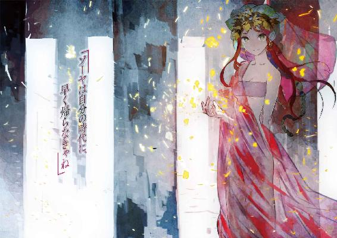

| ルガルギガム 02 運命の<王>と帰還の門 | |
| 稲葉義明 | |
| KADOKAWA / エンターブレイン (2014) | |

本作品の全部または一部を無断で複製、転載、配信、送信したり、ホームページ上に転載することを禁止します。また、本作品の内容を無断で改変、改ざん等を行うことも禁止します。
本作品購入時にご承諾いただいた規約により、有償・無償にかかわらず本作品を第三者に譲渡することはできません。
本作品は本文縦組で制作されております。ごらんになるリーディングシステムにより、表示の差が認められることがあります。
１
〈生命の泉〉からようやく抜け出したころには、すっかり夜は更けていた。中じゃ終わる気配もなくどんちゃん騒ぎが続いている。
歌うわ踊るわ脱ぐわで無法地帯だ。
「ったく。いくら宴会だからって。羽目外すにもホドがあんだろ」
ボヤキながら、暗い白大路を下宿へと歩く。
とはいえ今夜は、カグシラ中の居酒屋どこに行ったってあんな感じで大賑わいのはずだ。
一晩で三度も昇天しかける新記録を達成した日から、四日が経っていた。
疲労と衰弱、〈精髄〉の反動というトリプルヒットコンボでぶっ倒れたオレが寝床でうんうん唸っている間に、新市街の掃討はとんとん拍子に進められた。
要である食屍王ことネルトルナルトクを失った食屍鬼どもは、討ち取られ、あるいは散り散りになり、姿を消したという。もうやつらにナキアの砦と〝大通り〟を脅かす力はないだろう。
ま、当分の間はね。
そこで市を挙げた動員が無事に成功した祝いってんで、評議会から気前よくふるまい酒が出た。旧市街へのルートが開ければ、いずれ景気は良くなる。市民の誰にとっても、祝杯に値することだ。
かくして今晩は、誰も彼もが居酒屋に寄って、配給されたビールの壺にストローを差し込み、陽気に騒いでる。
いきつけのアビさんの店〈生命の泉〉も大盛況で、タダ酒目当ての客でごった返していた。派手好きの甚さんが、自腹切って食い放題にしてるせいで、店の外にまで人が溢れてる。
まあ、それだけなら別にボヤくほどのことじゃない。
けどうちの隊がグラーを仕留めて賞金をせしめたって話は街中に知れ渡っているわけで。
その中にカグシラの女主人のお気に入りが混ざってるとくれば、ひとつ面を拝んでやるかって考える暇人も出てくるわけで。
そうなればオレたちのテーブルには物見高い酔漢が続々と押しかけてくるわけで。
「いささか騒々しすぎるな。私は失礼させてもらおう。アマギ、後は任せるぞ」
ちょッ。グウェンさん、オレに任されても困りますって。
「ん」
あッ、スエンも！ 速攻フェードアウトすんな。言い訳する手間さえ惜しんでんじゃねえ！
対人コミュニケーションにやや難のあるふたりは、辟易した様子でさっさと雲隠れしてしまった。
あんなに無事を喜び合った仲間なのに。薄情すぎる。
くそッ......よし。オレも逃げよ。
「んじゃ、オレも。まだ本調子じゃないし、早めに帰ろっかな......」
「どこいくんじゃ、天城ィ。大将首を挙げた一番手柄のモンがひとりもおらんでは、格好がつかんじゃろうが」
やってくる来客に得意満面で大言壮語をぶちまけていた甚さんが、むんずとオレの襟を捕らえた。
「お主はわしの隣で、挨拶を受けていかんか。どうせここ何日か、食っちゃ寝しとるだけだったんじゃ」
「あんたは！ オレがグラーにボコられてる間、ずっと遊んでたでしょうが！ それに未成年なんで、ちょっとアルコールは」
〈国土〉風の長衣をいなせに着こなし、華やかな帯を締め、ほのかに頰を上気させたケニーさんが上機嫌で割って入ってきた。
「大丈夫、大丈夫。誰か文句いってきたら、あたしが誤魔化してやるって。大体、こんな場所で未成年もなにもねーだろ。子供でも呑んでるっての。ビールがダメでも葡萄酒くらいいけるだろ。水みたいなもんだ」
「元警官がそんなことでいいんすか」
「よーし。じゃあソーヤは補導だ。弁護士を呼ぶ権利はなく、黙秘権もありません。更生のため、反省の色が見えるまで、とりあえず本官の保護観察処分に置かれます。まずはお相伴をする社会奉仕が命じられましたー。よし。座れ。そして注げ」
理不尽大王は二匹に増殖していた......。
こうしてダメな大人二人組に左右を挟まれたオレは、次々と襲来する酔っぱらいどもに何時間も愛想笑いを返した末、トイレに行くフリをしてようやくエスケープに成功したというわけ。
「甚さんの面子はわかるけど、勘弁してほしいんだよなぁ」
ただでさえ悪い意味で時の人なんだからさあ。
ひとつ溜息をついて、下宿の門をくぐる。
オレが世話になってるこの邸宅は、かなり裕福な商人の持ち家だ。レンガを積んで瀝青で固めただけの質素な民家とは違う。門があり、塀があり、ちゃんとタイルが敷き詰められた中庭があり、その三方を二階建ての住居がコの字形に囲んでいる。
中庭を横切って、一階の台所で明日の朝食の下準備をしていたふくよかな中年女性に挨拶する。使用人一家のカンヌ奥さんだ。
「戻りましたー」
「あら。お早いお帰りねえ。うちの人もまだだっていうのに」
「マールさんはどちらへ？」
「せっかくのお祝いだっていうんで、いきつけの居酒屋ですよ。いまごろお兄さんのことを、鼻高々で自慢してるころでしょ。自分の手柄でもないのにねえ」
屈託なく笑うカンヌさんに明日の朝食を頼んでから、靴形ランプを手に、狭くて傾斜のきつい階段を二階へと登る。扉代わりの幕布をくぐって、自分の部屋に入った。
「あれ？ 窓が開いてる？」
この地域の住宅には珍しく、オレが間借りしている部屋には広めの窓がある。普段は砂が入らないように戸で塞いでいるんだけど、いまはそれが取り外されていた。
ピンと来るまでもない。こんな真似をする犯人に心当たりはひとりだけだ。
けど室内には人影はなかった。
帰ったのかな？ 首を傾げながら窓際に近づくと、にゃーにゃーと、たくさんの猫の鳴き声が聞こえてくる。
「上から？」
部屋を出て、さらに狭苦しい別の階段を上に向かった。塔屋の木戸を開き、手すり柵に囲まれた陸屋根に出る。
「にゃー」「にゃーにゃー」「なー」「みゃおう」「みー」
そこはすっかり野良猫の集会場と化していた。
二十、三十匹の猫が、突然の闖入者であるところのオレに振り向く。一斉にギラリと光る目、目、目。ちょっとビビる。
「うおわッ。なんじゃこりゃ」
猫の輪の中央で、手すり柵に腰掛けてるボス猫に問いかける。膝に抱いた子猫の喉を優しくくすぐりながら、ラクエルはフフッと茶目っ気たっぷりに微笑んだ。
「脅かしちゃだめだよ。この子たちのお話聞いてたんだから」
「別にそんなつもりはないけどさ......」
どちらかといえば猫派です。
けどカグシラの猫は半ば野猫って感じで、ワイルドかつアグレッシヴだ。警戒心が強くて、なかなか近寄らせてくれない。
それどころか河岸でのバイト中、やつらは水揚げされるお魚を嗅ぎつけてどこからともなく現われる。何度追い払っても果敢にアタックを繰り返し、少しでも油断すると新鮮な魚をくわえて逃げてゆく。
毎日が真剣勝負だ。強敵と書いて友と読む。そんな関係。
そのライバルどもが行儀よくお座りして、甘えた声で愛嬌を振りまいている。野生の矜持は、野良の誇りはどこへいったと、オレが問い詰めたくなるのも無理ないだろう。
「にゃにゃにゃおう」
一匹の黒猫のさかんなアピールに、ラクエルがふんふんと頷いている。
「『あいつは悪者です。いつも棒を振り回しながら襲ってくる乱暴者です。うちの子に餌を運びたいだけなのに。どうかこらしめてください』っていってるよ。ボク、弱いものいじめはよくないと思うな？」
「異議あり！ ったく人を猫虐待犯みたいに。オレが追い払うのは、お魚くわえたドラ猫だけ。盗みを見過ごすわけにはいかないっての。漁師さんもオレも、仕事なんだから」
「だって。どろぼう猫さん？」
「にゃ～」
あれあれ、話が違うんじゃない？ そんな目線を注がれ、黒猫は意気消沈の態でしゅんと頭を下げた。なんつー、人間くさいリアクションだ。
それにしてもラクエルが、猫のお願いにまで耳を貸していたとは。
「――まあ、大怪我しないよう手加減はするけどさ、別のやつが見張りのときを狙えっての。それよりお前、なんでウチの屋上で猫の集会仕切ってんだ」
「あっ。うん。それなんだけどね......」
ラクエルが急に表情を曇らせて、あらぬ方向へ視線を逸らした。
あー。そういえば。
体力切れでダウンしてたから、南風市場で別行動をとって以降ちゃんと話してなかったっけ。
別れ際に気まずい空気だったのを思い出す。
こうして日常に戻ってみると、あの夜感じた距離感がウソみたいだ。けどあれは夢でも幻でもないわけで。弱った。
「みんなお祭り気分で不公平だと思うんだよ」
「なにをいいだすんだおまえは」
予想の斜め上をゆく言葉に、間髪容れずに突っ込んでしまった。
「えー。すごく楽しそうで、なんだかずるい。ボクだって手伝ったのに！ これじゃのけ者みたいだよ」
「別にいいだろ。女神さまのおかげだって喜ばれてるんだから。普段ありがたがられてる分、たまに仕事したときくらい守護神らしくどーんと見守っとけよ」
「ううん。これはもう天罰ものかもね。砂嵐襲来とか、お酒が全部水になっちゃうとか、みんな明日は二日酔いとか」
「やめろ。いいから大人しくしとけ」
止めねばなるまい。とりあえず冗談でなく、こいつにはそのくらいできちゃいかねない力があるのは納得した。あの力とフリーダムな気性。この組み合わせはいかにもデンジャラスだ。
「ふーんだ。ねえ、キミ。ソーヤは冷たいよねえ」
「みー」
膝に乗せていた子猫を目の前に持ち上げ、オレへの当てつけを語りかける。
「あーあ。ひとりは寂しいし、すっごく退屈」
（なにいってん......）
条件反射的にいい返しかけた口を噤む。
今夜のラクエルは小豆色の巻衣で、肩に茶色のショールを羽織っている。裾の房飾り以外は質素な麻布だ。
あ。そうか。そういうつもりで、わざわざ目立たない町娘の衣装を着てきたのか？
食屍鬼の巣穴に飛び込んだ瞬間のことが頭をよぎった。変に肩肘張っても後で後悔するんじゃダメかなあ。
けどオレから誘う......？ そ、それはなんか恥ずかしいな。ま、まあラクエルが行きたがったら、さりげなくＯＫしてやってもいいかな。
「あー、あのさ......」
「ん？ ん？ なあに？」ニヤニヤしながら、手を沿えた耳をオレに向けやがる。
ぬうう～。こいつオレから誘わせる気満々じゃねえか！ 男心のわからないやつめ。そんな露骨に意識させられたらいい出しにくいんだよ！
「い、いや......なんでもない......」
「えー！ ねえねえ。それはちょっと不甲斐なさすぎない？ マナーってものがあるよね。マナーってものが」
「う、うるさい、お前が催促すんのが悪いんだよ！ 大体こんな時間じゃどこに......」
「あっ！ 猫！」
だしぬけに背後で幼い少女の弾んだ声が上がった。
振り返ると、塔屋の戸口にウルゲンナが出て来ていた。
おかっぱに似た印象の黒髪に、薄く褐色がかった肌の大きな目をした少女。年齢は九つ。〈外の者〉であるオレをお兄さんと呼んで懐いてくれてる、使用人一家のひとり娘だ。
現実の妹という生き物は、大概生意気で兄を兄とも思わない悪魔超人だけど、この子は違う。天然記念物級に素直な子で、癒しのほんわかオーラをまとっている。
腕に水瓶を抱えているところを見ると、オレの部屋の水を取り替えに来て、同じように鳴き声に呼び寄せられたんだろう。
普段は引っ込み思案ながら、いまは猫の魔力に魅せられたウルゲンナが、目を輝かせながらぱたぱたと駆け寄ってきた。
「お兄さん、こんなにいっぱい......あ、こ、こんばんは......」
そこでようやくラクエルの姿に気づき、もじもじとオレの背に隠れつつ挨拶。実に小動物的なムーブだ。
そういやウルゲンナがラクエルに会うのは初めてだっけ。使用人一家にも秘密にしてたからなあ――って、やばっ！
「あ、えーと、こいつは、あー」
「......？ はうあっ!?」
おどおどした瞳が、一転驚愕に見開かれる。
「めがみっ――」
あっさり気づかれた。そりゃそうだよなあ。ラクエルは、カグシラで一番顔を知られてる有名人なわけで。
息を呑んでわなわな震えだした少女をなだめようとしたオレは、ラクエルの目配せに制された。
手すり柵から滑り降りたあいつは、追い詰められたウサギのような目をしたウルゲンナに近づくと、その前で腰を屈めた。左手をそっと少女の頰に添え、右手の人差し指でしいっという仕草をしてみせる。
「こんばんは、ウルゲンナ。ボク、神殿を抜け出して来てるんだ。ばれちゃうと困るから、内緒にしてくれるかな？」
ガクンガクンと必死に頷く女の子。さしずめヘッドバンギング中のパンクか、あるいはエクソシストに抵抗する悪霊かって勢いだ。
「ありがとう。いい子だね。はい、ご褒美」
華やかに微笑んだラクエルが、足下にすり寄っていた子猫を拾い上げ、少女の腕に抱かせた。
「みー」
「あたしの名前、なんで......ご存じなのですか？」
親しげな言葉にやや落ち着きを取り戻したウルゲンナが、おずおずと問う。
「キミを守ってる守護神が教えてくれたんだよ。ウルゲンナはいつも一生懸命な頑張り屋さんですって」
「ええっ。本当ですか」
「もちろん！ これからもソーヤの面倒を見てあげてね」
ウルゲンナが、純真な喜びと誇りと敬慕の感情で面を光り輝かせながら、オレたちを交互に見比べる。わかりやすくいえば、超うれしそうだ。
「お母さんのいってたとおりです！」
「カンヌさんが、どうしたって？」
「あのう。お兄ちゃんって女神さまの恋人なのですか？」
どうやら、お喋り好きなのは旦那の方だけじゃなかったらしい。
「いや、それは......」
「うーん、どうなんだろうねえ。ウルゲンナはどう思う？」
歯切れ悪いオレを遮って、ラクエルが腕をするっとからめ、茶目っ気たっぷりの仕草で大胆に寄り添ってきた。
緋色の髪が頰をくすぐり、夜の沈丁花に似た香りに包まれる。控えめな胸の膨らみが肘に当たって、落ち着かないことこの上ない。
だから人前でそんなに露骨にボディタッチしてくんなってんだよ。日本人はそういうの苦手なの！
「おっ、おい。やめろって」
けどそんなオレたちに、ウルゲンナが、頰を染めつつ憧れの眼差しを向けているわけで。腹の中では悪態つきながらも、強く出られないのが恨めしい。
おのれぃ。この報復として、ウルゲンナには後でうまく説明しよう。
具体的には、ラクエルに大酒呑みという〝設定〟が追加される。酔いどれ女神さまは、悪ふざけがお好きってわけだ。今夜ウルゲンナの心に誕生した綺麗で優しい素敵な女神さまというイメージは大暴落だろうが、それでいいのだ。
素直で可愛い癒し系のウルゲンナが、こんなじゃじゃ馬を見習うようになってしまったら、もうオレは立ち直れない。
とりあえずこれ以上染められてしまう前に、悪い手本はとっとと引き離さないと。
「ほら。離せよ。出かけるんじゃなかったのか？ ウルゲンナ。女神さまのお供しなきゃいけないから、オレちょっといってくるよ」
それを聞いたラクエルはふふりと勝ち誇った顔をしつつ、意外なほどすんなりと腕を解放した。
「そうだね。じゃ、みんな今夜はこれにて解散。またね」
「にゃおん」「にゃーにゃー」「みゃおう」「みゃー」
お行儀良く見守っていた猫の宮廷が、その言葉を合図にばらけた。廷臣たちはひらりひらりと手すり柵を乗り越えて、夜のカグシラに消えてゆく。
目を丸くして見送るオレとウルゲンナ。猛獣使いかっての。
後に残ったのはただ一匹。少女の手の中で丸くなっている子猫だけだ。
「その子、キミのことが気に入ったみたい。お世話してくれるかな？」
「はいですっ。あっ、でもお母さんが......」
ラクエルの提案に喜色満面になった幼な顔が、急転直下で暗くなる。カンヌ奥さんは、あれでなかなか厳しい。猫を飼うなんていったら、叱られるかもなあ。
「あれっ。そっかあ。困ったねえ」
おいおい。お前まで考え込むなよ。早くも目を潤ませ、ウルゲンナは子猫をぎゅっと抱きしめている。
「なあウルゲンナ。お母さんには、オレに子猫の世話を頼まれたっていっておきな。後で説明にいくから」
「えっ――はいですっ！」「おおっ？」
言葉の意味を摑むと、ウルゲンナは一転して目を輝かせ、ラクエルのやつは何を誤解したかウインクを返してきた。
ええい。勘違いすんな。
きつく追及されたら、きっとウルゲンナはいま見聞きしたことを全部喋っちまう。その面倒を避けるためだ。別にお前に助け船出したわけじゃないんだからな。
「キミの〈運命〉は定まった！」
朗らかに宣言したラクエルが、優しく子猫の鼻をつついた。
大事そうに子猫を抱えた少女が階下に降りていくのを見送ってから、いい気になってるラクエルに嚙みつく。
「ったく。勝手なことを。後で叱られるのはあの子なんだぞ？」
「でもソーヤがなんとかしてくれたよ？」
「そういう問題じゃないだろ。オレは無責任にああいうことを......」
「ひっかかるなあ、そのいい方」
向き直ってオレに正対したラクエルが、挑戦的にオレを睨む。
「ん......。なんだよ」
「ボクが行き当たりばったりに子猫を預けたとか思ってない？」
図星です。
「あの子猫、ひとりぼっちだったんだよ」
「親猫は？」
首が小さく左右に振られた。そうか。一匹で生き抜けるほど育ってはいなかった。飢え死にか、カラスの餌か。放置されれば、そういう運命を辿るしかない。
「けどあの子には生き延びる〈運命〉も少しだけあったし、なによりまだ生きたいっていってた。だから一度だけ、あの子の気持ちを代弁してあげたんだよ。本当はあの子が自分でウルゲンナにお願いしなきゃいけないんだけどね」
「よちよち歩きだったしなあ......」
「あの子猫とウルゲンナは、相性抜群だったから。運命の相手って感じ？ ま、ボクとソーヤほどじゃないけど」
なに張り合ってんだ。そもそも、そんな〈運命〉オレは認めた覚えはないぞ。
右手の人差し指でオレの胸をウリウリと押しながら、ラクエルは追及を続ける。
「で、どうなの？ ボクは行き当たりばったり？ 余計なことしたのかな？」
ぬー。なんか悔しいが、ここは白旗振るしかなさそうだ。
「わかったよ。けどオレは〈理〉もなにも使えない普通の人間だから、説明されなきゃ、そういうことわかんねえんだって。大体、お前の日ごろの言動がだなぁ......」
言い訳がましく呟きながら、オレは内心でホッと安堵していた。
そうだ。オレの知っているラクエルはこういうやつだ。生意気だし、図々しいし、超然と達観してるけど、失われゆく小さな命を惜しむ心だってある。冷酷無情じゃない。
「そういう巡り合わせって、あるんだよ。ずっとひとりはさ」
普段耳にすることのない、夢見心地のように柔らかい囁きだった。
「ん？」
思い直したのか、口を噤んでしばし目蓋を閉じていたが、一転快活な表情で歯切れよくいい直す。
「生きるも死ぬも〈運命〉だけど、ひとりっきりじゃ、あの子もきっと寂しいよね」
そうして手すり柵に近づいたラクエルは、上からとーんと踏み切って妖精さながらふわりと宙を歩み、隣の邸宅の陸屋根に移った。
「いこうよ。ほら」
背を向けたまま見返って、流し目でオレを急かす。
ったく、気楽にいってくれるよ。だからこっちは、お前のようにはいかねーんだって。
「〈森の狩人〉」
ほんの少しだけのつもりで〈精髄〉を目覚めさせる。けど今夜はやけに狩人が昂ぶっていて、思ったより濃く〈相〉が出た。
......間違ってもオレが変なムードに当てられたせいじゃないからな？
お見通しとでもいいたげに、向こう側でラクエルがいたずらっぽく微笑み「にゃん」と誘った。
「ニャッと」
オレも跳んだ。
それからしばらく、ふたりで屋根から屋根へと伝い、一組の猫のように夜のカグシラを散歩した。
現代の夜景みたいにきらびやかな照明や電飾があるわけじゃない。
その代わり夜空には、降るような古代の星空が広がっていた。冴え冴えと輝くあの星の海の雄大さは、どんな大都市の夜景にだって引けを取らない。その星々と三日月刀のような月に見下ろされながら、オレたちはカグシラに生きるいろんな人たちの生活をかいま見た。
正妻であることを示すショールを被った小柄な婦人が、路傍に酔い潰れている屈強な人夫をどやしつけている。泥酔した亭主を迎えに来た奥さんだろうか。頭が上がらないのか、熊のごとき大男は、背丈が半分くらいしかない妻の前で、悄然と小さくなっていた。
一区画ほど離れた歓楽街では、酔漢と酌婦の集団が、夜中だってのに通りで陽気に浮かれ騒いでいた。いかがわしい居酒屋が並ぶこの界隈の細い腰と柔肌の色っぽい酌婦は、ほとんどが給仕をしながら客を待つ遊女でもある。
貧民街の崩れかけたレンガ小屋の中では、浅黒い肌をした幼い兄弟が抱き合って眠っている。孤児だろうか。他に大人の姿はない。
半裸のふたりは、一枚しかない毛布を分け合って使っていた。弟は兄の腰布の裾をしっかと握りしめ、兄は守るかのように弟の頭を抱いている。広い天地にお互いしか頼る者がない貧しい兄弟の、強い絆が見て取れた。
バルナムメテナの家人とリウィル・シムティの戦士が、一団となって大きな居酒屋から出てきた。男たちは上機嫌で粗野な笑い声を上げ、中には肩を組んでいる者も見える。普段はささいな理由から青銅の刃を抜いて刃傷沙汰を繰り返すほど仲の悪い連中も、今夜ばかりは休戦とみえる。
ま、ただ誰も彼もがハッピーってわけでもない。その酒場の裏手では、仕事をさぼっている従業員がふたり、なかなか帰らない客と人使いの荒い女将にぶうぶうと文句を垂れている。剃髪し、両足の金輪を縄で繋いでいるところから奴隷身分だと見て取れた。
富裕層の邸宅が建ち並ぶ神殿区の塀の陰には、隠れるように若い男女の姿があった。上等な衣と帯をまとった娘は、富裕な商家の一員だろう。けれどその手を握る精悍な青年の身なりは質素だ。
身分違いの恋。眼差しに燃えるような熱情と思い詰めた危うさを込めて、ふたりはお互い以外目に入らない様子でずっと見つめ合っていた。
ひとしきり散策をしたオレたちは、市を囲む周壁の縁に並んで腰掛けた。
星明かりに浮かぶ市街を難なく一望できる高さだ。ぶらぶら遊ばせている足と地面の間には、十メートル近い開きがある。
「いろんな人生があるねえ」
なにが琴線に触れたのか、ラクエルの呟きは感慨深げだった。
そうだ。こんなにこぢんまりとした都市にも、いろんな人生がある。
ひとたび壁ひとつ越えて廃墟に踏み込めば、誰であろうと生きて戻れる保証はない。再びバビロン崩壊の日のような事態が襲えば、市壁の内側にいても同じことだ。そんな死と隣り合わせのカグシラに、ほとんどの住民は自分から移り住んできた。
なぜか？
普通に生きていては得られない明日がここにはあるからだ。
一生を遊んで暮らすため。故郷の誰かに認められるため。復讐から逃れるため。奴隷の身分に落ちた一族を解放するため。
ひとりひとりみな、背負っている人生と望みは違う。
バビロンに眠る財宝には、その望みを叶える力がある。自由、未来、そして夢。幸運にさえ恵まれれば、すべてに手が届く。
そのためならひとつしかない生命さえも天秤にかけられる。カグシラの市民、とりわけ遺跡荒らしはそういう類の人種だ。
だから彼らの活力は凄い。明日をも知れない身の上である分、生き急ぐかのように、今日という日をためらわず、貪欲に生きてる。
争いや敵意に尻込みするタイプにはきつい街だ。妥協や躊躇なんてない。乾期の太陽に負けない、精気に満ちてぎらつく鮮やかな生がある。
けど、オレはただの傍観者。
ここにいながら、そこに参加しちゃいない。
それはガラス越しの風景さながらの他人事でしかなかった。
彼らの中で暮らせば暮らすほど、自分との隔たりを思い知らされる。
オレの明日はここにはない。何を得ても、何をしても、空しいだけだ。いずれ本当に属すべき場所である現代に帰るんだから。
勉強は遅れてるから留年確実だろうし、身体のことはどうなるか心配だし、世界観変わっちまうくらいの体験して前みたいにやってけるかもわからない。
それでも、それがオレの〝明日〟だ。
取り戻すまでは、足踏みが続くだけだ。歯がゆい。このカグシラに留まる限り、一歩だって前に進めやしない。
そう思ってた。いや、いまだってそう思ってる。
（ボクの居場所なんて、どこにもないんだよ）
肩が触れるほどすぐ隣に、ラクエルの体温と吐息を感じる。
――けど、もし、だ。もし戻ることができなかったら？
いままでありえないと努めて打ち消していた、別の未来のイメージが頭をよぎった。
このカグシラで、こいつと肩を並べてこんな風にずっと一緒に過ごす毎日。
いまみたいな時間がずっと続く未来。ここで〝明日〟を歩んでゆく未来。
死んでも嫌だったはずなのに。
帰るのを諦めることなんてできない。わかっているはずなのに。
その元凶であるところの誰かさんは、物思いにふけっている様子でぼうっと自分の街を見渡していた。
長い睫毛の帳の下に、緑色の宝石みたいな瞳がけぶっている。
生意気そうにちょっと上向いた細い鼻梁。筆で描いたかのように細い滑らかな眉。
やや造りの小さい整った少女の面差しは、さながらアンティークドールだ。
雪花石膏に劣らないほど白い肌。夜風に弄ばれた後れ毛が揺れている。
沈丁花の蠱惑的な香りが胸に爪を立ててかき乱す。
そのアンニュイな横顔には、悔しいがそこはかとなく色気があって、もやもやした気分にさせられてしまう。
え、えーと。肩に手くらい回してもいいかな......。
いやいや、待てオレ！ 冷静になれ！ それはもう懲りただろう！
それに嫌がられたら気まずいな。こいつ、いまいち読めないんだよな。
やめろ、何を考えてる！ お前はまた雰囲気に流されるのか！
くそッ、くそッ！ 白いうなじがオレを迷わせる！
「なにその面白い顔。どこか痒いの？」
内面でジキルとハイドの激しい葛藤を繰り広げているオレの顔芸は、いつの間にかラクエルのやつにまじまじ観察されていた。呆れ顔だ。
「お、オレは負けないぞ！ この魔女め！」
「はあ？」
「い、いや、これはだな......」
ダダ漏れの妄想をどう取り繕おうかと焦っていると、ふと、そういえば謝らなきゃならないことがあったのを思い出した。
「あー。なんつうか、悪ぃ。お前のことちょっと疑ってた」
「何のこと？ 急にどうしたの？」
アーモンド形の目を見開き、ラクエルは小鳥っぽく小首を傾げた。
「こないだの星見の塔の話。あんなに凄ぇなんて想像してなかったからさ。いろいろ考えすぎて、正直少しビビっちまったんだ。別人みたいに見えて」
さっと表情を消したラクエルが、定かではない感情に揺れる浅葱色の眼差しを、街並みの方角に戻した。
しばしの間の後で、そっけない声が先を促す。
「......ふうん。それで、いまは？」
「やっぱお前はお前だった」
脇腹に、凶暴なエルボーが鋭角に突き刺さった。
「ぐふえッ！ 本気だろ！ いま本気でやったろ！」
「あーあ。そんなとこだろうって思ってた。あんなよそよそしい態度ソーヤに取られて、すっごくショックだったんだから。ボク、信じてたのに。その後も、半死半生で背負われてきてさ。一体どれだけボクをやきもきさせたら気が済むの？ まったく！」
いきなり立て板に水の勢いで、ツンツン憤慨しはじめた。うわあ。スイッチ押しちまった。すごい剣幕の前に、防戦一方を強いられる。
「しょうがねえだろ。あんなスケールのものいきなり見せられたら動転もするって」
「どうせ人のこと、冷酷無情な悪魔とでも思ったんでしょ」
イグザクトリー。すっかりお見通しでした。
「だから悪かったって。まあ......ちょっと戸惑っちまったんだよ。さっきもいったろ？ 〈理〉とか〈運命〉とか、いまでもオレにはよくわかんないんだ。ピンとこないっていうかさ。オレの時代では〈理〉じゃなくて......」
胸元に手を入れ、首から紐で吊っている携帯を引っ張り出した。
〈国土〉広しといえど、こんなもの認識票にしてるのはオレくらいだろう。バビロンで身元不明の死体になったとしても、これさえ残っていれば甚さんたちにはオレの末路がわかる。
「みんなこういう機械頼みなんだよ。前にも説明したろ？」
「ボクも前に話したよね。人間はネフィルの血肉と粘土を半分ずつ混ぜ合わせて生み出されたって。半分は同じ血が流れてるんだよ」
そういやそんな伝説を聞かされたことがあるっけ。
〈国土〉の人々は、自分たちが労役のために神々に生み出されたと固く信じてる。ネフィルに仕えることは、みずからを選ばれた民と信じる彼らの誇りの源泉だ。外国人である〈外の者〉や〈辺境〉の未開人どもとは違うってわけ。
血筋や生まれによらず、人間は根っこじゃみな平等って教育を受けてきた現代人たるオレには、共感どころか反発さえ覚えるメンタリティだ。
ま、それはともかく。
「だからボクとソーヤはきっとそんなに違わない。そりゃまったく一緒とはいわないけど、同じように喜んだり怒ったり悲しんだり、人を好きになったり嫌いになったりするはず。だってボクにはソーヤの気持ちが理解る。〈運命〉の相手だもの。何か態度が変われば、すぐ伝わってくるよ」
騎虎の勢いは衰え、力なく苦笑しながら残月を仰ぐ白い横顔に、割とシリアスに落ち込ませちまってたと気づかされた。
「ボクはソーヤにあんな風に見られるのは嫌。他の誰にどう畏れられてもいいけど、ソーヤには嫌。ソーヤはどうなの？ 他人みたいな目でボクに見られても平気？ ボクはそういうどうでもいい存在なのかな」
「......すいませんでした」
白い腹を見せて降参する。
「ふぅ。ときどき、こんな女心のわからない薄情者と結びつけた〈運命〉を呪うよ。ボクって幸薄い質なのかなぁ」
（ぐぬぬ。調子に乗るなよ！ 大体、その〈運命〉なんちゃらなんてお前が妄言吐いてるだけで、オレは認めてねえっての！）
と買い言葉を返したいが、ここは自重だ。
譲りすぎかなと思わないでもないけど、いつもは愛嬌たっぷりに傍若無人なこいつに萎れた顔されると調子狂うからな。気分的に負い目もあるし。
「ちゃんと反省してる？」
「してるしてる」
ホントかな～、といわんばかりのジト目で疑わしげにオレの顔色を探っていたラクエルが、もったいぶった調子で頷いた。
「うむっ。よろしい。じゃあ態度で示そう」
そして顔をこっちに寄せ、頤をくっと上げ目蓋を閉じた。清楚な花弁を思わせる薄く艶やかな唇。心なし何かを待ち受けているみたいだ。
「ん！」
訂正。心なしじゃなかった。露骨に催促された。
だからこいつを図に乗せちゃいけないっていったじゃないですかー！
だがこれは踏み絵だ。誤魔化せばまた尋問に逆戻りだ......えーと......ええい仕方ない。踏み絵だから仕方ないんだ。ちょっとだけ。ちょっとだけだぞ！
そう胸中で言い訳して顔を近づける。自分からキスするのなんてほとんど経験ない。緊張で心臓がバクバクいっている。別に初めてなんかじゃないんだから落ちつけ。う、うまくやらないとな。
「んふふ」
だがしかし。敵はそう甘くなかった。
唇が軽く触れ合った瞬間、勝ち誇った含み笑いと共に首に回されたラクエルの両腕が、しっかとオレを捕らえた。舌がからかうように唇をくすぐり、主導権を奪い取ってゆく。
そのままなし崩し的に情熱的な口づけの虜になりかけたとき、下のほうから足音と話し声が聞こえてきた。見回りの夜警だ。
瞬間的に我に返る。
や、やばいッ！ め、女神とこんなことしてる場面を見られたら！
気づいているのかいないのか、ラクエルに止めてくれる気配は微塵もない。もぎ離そうにも、白い両腕に柔かく搦め捕られている。むしろその抱擁には、一層熱が入ってるくらいだ。
ああ、もう！ こうなったら！
見つかっても下から顔が見えないように、大胆にもほどがあるキスを強引に逃れ、ラクエルの頭を胸に抱きかかえて隠した。
「あんっ」
「シッ！」
色っぽい抗議の吐息を黙らせ、じっと息をひそめる。
酒でも入っていたのか。声高に雑談する夜警の兵士たちは幸いにもオレたちに気づくことなく足下を通過し、遠ざかっていった。
足音が聞こえなくなるのを待って、含み笑いしつつしがみついてる疫病神を今度こそ引っぺがした。
「やだ。もうちょっとこのまま」
「バカ。お前やりすぎなんだよ。バレたらどうすんだ」
「ソーヤってば鈍いんだから。ボクたちの姿なんて〈理〉で見えなくしてあるに決まってるじゃない。それに少しくらいスリルがあった方が、ソーヤは燃えるみたいだし」
人を変態っぽくいうな！ 誰かこの女に慎みを教えてやってくれ！
「ところでねえ。これさ」
抱えてる間に興味を抱いたんだろう。ラクエルの手には、オレが仕舞い忘れていた携帯が載っていた。
「ずっと大事にしてるけど、お守りじゃないみたいだね。何をするものなの？」
「ケータイだよ。ガラケー......つってもわかるわけないか。これは携帯電話。元々、遠くに離れている人と連絡を取るための道具なんだ。同じくケータイを持ってる相手とこうやって......」
蓋を開いて耳元に当て、通話のポーズをする。
「もしもし、天城だけど、時間ある？ と、こんな感じで話をする。ここに並んでるキーを使って、文章を送ることもできる。オレの時代の学生には欠かせないマスト・アイテムだ」
本当はスマホがほしかったけど、そんなこと説明してもしょうがない。
（こんな感じかな？）
「うおッ？」
いきなり、頭の中に直接声が響いた。驚いて顔を上げると、軽く目蓋を閉じたラクエルが微笑している。テレパシーみたいなもんか。
「器用なやつだな。まあ、似たようなもんじゃないかな。けどケータイは、〈理〉なんか知らなくても、持ってさえいれば誰でも扱える。便利な文明の利器なのだ」
チャッチャッ。おっ。けっこう指は覚えてるもんだなあ。
「へえ～」せわしなく動く指先に釣られた様子で、緋色の頭が、しげしげとキーパッドを覗きこんできた。「けど、何も起こらないよ？」
「いまはとっくに電池切れ。電気で動くんだけど、ここじゃあ充電もできないからな」
「電気？ 稲妻？」
小首を傾げたラクエルが、フレミング左手の法則のように親指と人差し指を広げた。その間で、パチッと青い放電がスパークした。
「......あ。そう。それ」
「ふ～ん」
見る者が見れば、オレの頭上に明るく電球が点灯するのが見えたはずだ。
「って、まてまてまてい！ も、も、もしかして、お前電気も自由自在？ これ充電できたりしないか！ なあ！」
携帯の中には、ムービーや画像が記録されてる。父さん母さん桜、クラスメートや剣乃の顔や声。家、学校、遊び場、日本の状景。日本語の活字やゲーム。
夢に見るほど、涙が出るほど懐かしい記憶が、そこには眠っている。
まさかまさかの閃きに興奮するあまり、要領を得ない表情のラクエルに押し倒さんばかりの勢いで詰め寄る。
「稲妻扱うのは簡単だけど、充電ってなんのことかわかんないよ」
「ああ、悪ぃ。いや、このケータイって、中に電気を溜めて動くんであって、と、とにかくちょっと試してみてくれよ。ああ、いや強くやらないで。ちょっとずつよ。デリケートだから。中の機器飛んじゃうから。ええっと電圧どのくらいだっけ。ああっ、くそっ、どう説明すりゃいいんだ」
ひとりで盛大に取り乱すオレ。
しばらく呆れ顔を見せていたラクエルが、溜息とともに人差し指を上げた。手中の携帯が目に見えない手に持ち上げられたかのようにふわりと宙に浮き、あいつの前に漂っていく。
「あっ、あっ、あっ」
「ソーヤ。ちょっと落ち着こう？」
「う。そ、そうだな。あ、そっと。そっとでお願いします」
我ながら情けないうろたえっぷりだ。無理と思ってた間は綺麗さっぱり諦めがついてたのに。復活させられるかも、とわかった途端にこれだ。希望ってやつは恐ろしい。
携帯は、支えるように差し伸べられたラクエルの両手の上に静止していた。青白い光線で描かれた複雑な呪文のリングが三本、その周囲をゆっくりと回転している。文字は〈国土〉で使われている金釘形の楔形文字じゃない。流麗な曲線が主体だ。ネフィルの文字なんだろうか。輪の内側の空間は、うっすらと燐光を放っているように見えた。
「ふうん。なるほどなるほど」
しばらく携帯を観察していたラクエルは、やがて数度頷いた。
「し、仕組みわかったのか？」
「ううん。全然」
なんなんだお前は。
「けど力の流れは大体感触摑めたよ。この小さな金具部分に通せばいいんだね」
「うおおおおおおッ！」
点いた！ 充電中を示す赤いランプが、弱々しくだけど、確かに点灯している。
待ちきれない気持ちを必死に三分間堪えてから、携帯を手に取り、震える指で祈るように電源ボタンを押す。二度と聞くことはないかと思っていたメロディが流れ、液晶に光が灯った。
「復っ活したああああああ！」「おおーっ」
だが歓喜は、次の瞬間には凍りついた。
「う......くそッ。データ......全部消えてる」
電話番号も、メールも、写真も、動画も、アプリも。どんな障害が発生したのかはわからないけど、一切合切きれいに全滅していた。
酸っぱい感情が、喉元にせり上がる。
......なんで。なんで、オレばっかり、こんなぬか喜びなんだよ。
父さんや母さんや桜の顔を見たかった。声が聞きたかった。学校のあいつらがバカやってるとこや、教室や通学路の様子や、現代の街並みの風景をもう一度確かめたかった。
贅沢はいわない。一目でよかったのに。
もうはっきり思い出せないんだ。忘れちゃいそうで怖いんだよ。
やめてくれよ神さま！ 期待させるだけさせて、こんな残酷なことすんの！
飢餓感に似た郷愁が、どうしようもなく胸を嚙む。満たされることなく行き場を失った希望と、捨て鉢で攻撃的な怒りとが、暗い炎となって頭の中を焦がす。
キュオオォ―――――――ン。
いつの間にか、あの耳鳴りが遠くから聞こえてきていた。オレの苛立ちをかき立てるかのように、わーんと耳の奥でこだましている。
荒れ狂う、子供のような癇癪の衝動。もしひとりきりだったら、携帯を力の限り地面に叩きつけて、じたばたと泣きわめいていたかもしれない。
「あれ。なにかダメだったの？」
その声を聞いたとき、いきなり胃の奥から、熱い怒気の塊が沸き上がってきた。
だから慎重にやってくれって頼んだじゃないか！ お前がもっと注意してれば！
眉間の奥が熱く重い。憎悪と殺意を宿す、自分でもまったく予期しないほどの灼熱した敵意が全身を駆けめぐった。
オレの中の冷静な部分が、やめろと警告を発している。
――待て。一体誰に向かって、なんてバカなことをいおうとしてる？
けど暴れ出した異常な激情は、溶鉱炉の鉄のような耐え難い熱さでオレの胃を灼いている。顔が醜く歪むのがわかる。ラクエルの妖精めいた面が不安に翳っている。こいつのせいで......こいつのせいで......。
「ちっくしょおおおおおおおおお――――！」
吐き出した。渾身の力を込めて。声の限りに。夜空に向かって。
はああ、と深呼吸。
落ちつけ。どうした、しっかりしろ。天城颯也。
一度声を振り絞って叫ぶと、いまさっきの恐ろしいほどの憤懣は噓のように消え去った。耳鳴りも止んでいる。
突然の奇行に目を丸くしているラクエルに、ぎこちなく表情を作って平静を取りつくろう。
「あーあ。だめだった。中のデータが死んじまってたよ。見たかったんだけどなあ」
......ラクエルのせいじゃない。こいつは十分慎重にやってくれた。もし何かあったとすれば、おそらくずっと前だろう。水に浸かったか、ひどくぶつけたか、あるいは別の原因か。
それをイラついて八つ当たりしようだなんて。マジでどうかしてる。ったく、これじゃスエンを瞬間湯沸かし器なんて笑えやしない。
「ソーヤ、どうしたの！ 様子がおかしかったよ!?」
普段の余裕をかなぐり捨てた、切迫した表情と声音。
ふと、こんなみっともない心配かけずに済むような、強い心が欲しいと思った。
「悪ぃ。残っててほしかった情報が消えててさ。下手に期待してたもんで、カッとなっちまった。我ながら修行が足りないよなあ」
「......そっかあ。あんまり役に立てなかったんだね」
「いやいや。んなことねえって。使えるようになっただけでもすごいんだって。ほら、こっち向けよ」
パシャっと、不意打ちで顔写真を一枚。
「ほら。これ誰だかわかるか？」
「これボク......だよね。ええっ。どうしてこんな怖い顔してるの！」
「どうしてって、その瞬間に撮れちゃったんだから仕方ないじゃん」
「その道具が絵を描くのへたくそなんだ!?」
「絵じゃなくて写真。写真は噓をつけません」
「ええー！ じゃあやりなおそうよ。そんなのボクじゃないよ......あれ？ 今度は何？」
「動画撮影」
またラクエルに液晶画面を向ける。
『じゃあやりなおそうよ。そんなのボクじゃないよ』
オレの手から携帯を奪い取った女神さまは、自分の姿が動いている液晶画面を、眉を寄せて食い入るように睨みつけている。
「もう一度見れないの？」「真ん中の丸いキー押して」
ピッ。『じゃあやりなおそうよ。そんなのボクじゃないよ』
ピッ。『じゃあやりなおそうよ。そんなのボクじゃないよ』
こいつがこんなに夢中になってるの見るのは、初めてかもしれないな。しばし意味不明な勝利感にひたる。
ふっふっふ。文明の利器の力を思い知ったか、古代人め。
しばらく一心不乱に見入っていたラクエルが、ホウという感嘆とともにようやく目を上げた。
「すごいね。ソーヤの時代には、誰でもこんな術が使えるんだ」
「まあ術といえば術かなあ。使い方を知ってるだけなんだけどな。そのケータイを使えば、誰がやっても同じように映像が撮れる。通話もできる。ま、一個だけじゃ通話は意味ないけど」
「じゃあボクが使っても、ソーヤの姿が映せるの？」
「そりゃもちろん。そういう機械だからな」
「やる。教えて」
請われるまま操作方法を簡単に教えると、「この記号がソーヤの時代の文字？ 覚えにくいなあ」などといいつつ、ラクエルはあっという間に動画と写真の撮影と閲覧の手順を修得してしまった。
「ほらほら。こっち向いてよ。あん。渋い顔してないで笑って笑って」
「そんな意味もなく愛想よくできるか」
「あはっ。この顔おもしろーい！」
「ちょっと待て！ いくらなんでも、そのマヌケ顔は消させろ」
「あんっ。ダメダメ。可愛いじゃない」
よほど気に入ったのか、はしゃぎながらひとり撮影会に勤しんでいたラクエルが、動きをぴたっと止めた。焦りまくってキーを押している。
「あれっ、あれっ？ く、暗くなっちゃったよ。ど、ど、どうしよう。ボク、変なことしちゃったのかな」
「ああ。貸してみな――やっぱり。ただの電池切れだよ。ちょっとしか充電しなかったからな。またさっきの方法でやれば、動くようになる」
「そっか。あー、びっくりした。壊しちゃったかと思ったよ」
安堵の息をつくと、少し懲りたのか携帯を差し出してきた。けど、実はいま返却されても困るのだ。
「なあ。そのケータイ、預けるから充電頼めないか。ちょっと面倒くさいかもしれないけど、お前も使っていいからさ」
内部機器を痛めないよう軽く説明をすると、ラクエルは力強く請けおってくれた。
「そういうことなら、ボクに任せといて！」
そして自分の首に紐を掛け、携帯を大事そうに胸元に滑り込ませると、「よしっ」と一声かけて十メートル下の地面にふわり飛び降りた。こっちを差し招いて一言。
「さっ。次いこうか」
おいおい、まだ続きがあるってのか。
２
連れて行かれたのは、ムシュフシュ大門からほど近い、白大路からわずかに奥に入った位置にある敷地だった。白塗りの塀に囲まれ、アーチ状の門を槍を携えた門番が見張っている。
ラクエルは見張りには目もくれないまま、オレの手を引っ張って堂々と門をくぐった。不審人物がふたりも目の前を通過したのに、暇そうな門番はこっちに一瞥さえ向けない。無視したんじゃない。本気で気づいてなかった。
「マジで見えてないんだなあ」
「認識から外してるの。いちいち騒ぎになるのも億劫だし」
なるほど、やっぱ〈理〉ってのは便利なもんだ。もっとも普通の魔術師は、こいつほど自由自在にはいかないみたいだけど。
敷地内には、飾り気のない平屋の建物がどんと建っていた。一般的な家屋じゃない。倉庫然としたたたずまいで、それもかなりの規模だ。
〈国土〉の格式張った建築物特有の、えらく丈の高い正面扉の前に立ったラクエルが、右手を軽く挙げた。すると反対側でゴトンと閂が動く重たげな音がして、高さが優にオレの三倍はある両開きの扉が、自動ドアのようにひとりでに押し開かれてゆく。
......これか！ オレがどれだけ部屋の戸締まりに気をつけても、誰かさんが平気で出入りしてるミステリーがいま解けた！
「お前、泥棒やったら絶対大繁盛するぞ」
感心半分、呆れ半分ながら、無人の野をゆくがごとく堂々と進むラクエルに続く。
屋内は暗く、静まりかえっていた。素振りから察するに、初めて来た場所ではないようだ。エントランス・ホールからは回廊がいくつも延びているというのに、迷いなくひとつの出口に向かおうとする。
「勝手に入っていいのかよ......」
「こっちこっち」
さすがに気後れで歩みが鈍るが、組まれた腕に強引に引っ張られてしまう。
〈光輝〉を少し解放しているのか、オレたちの周囲はオレンジの光でぼんやりと明るい。
おかげで回廊を進む間に、やはり大がかりな倉庫なのだと確認できた。
左右の小部屋の中には、穀物や酒類の壺、石材や木材など、異国からの輸入品であろう物珍しい商品が分類されて静かに眠っている。
回廊を進んだ先はＴ字になっていて、そのあたりは他の飾り気のない造りとは明らかに様相が違っていた。青い彩釉レンガで覆われた壁面に、金箔で輝く両開きの扉がはめ込まれている。目立って装飾が豪華だ。
そして金扉の前の床には、ひざまずくひとりの中年男の姿があった。伝統的な片手拝みの姿勢で首を垂れている。寝間着の上から房飾りのついた帯をたすきがけにしているところを見ると、取るものも取りあえず駆けつけたって感じだ。
「カグシラの女主人のお出ましにあずかり、御身の召使いは輝かしき〈畏力〉に打ち震えております。我が主、ウルエンキもこの栄誉に感激することでしょう」
倉庫の支配人であろう男性は、豊かな顎鬚とは対照的につるつるの頭に脂汗をにじませ、全身で恐縮しきっていた。
「見つかっちゃった。もうちょっとふたりきりがよかったなあ」
くすり、とラクエルが笑って、絡めた肘をこれみよがしに引っ張った。だから、そういうの人前じゃやめろって。
けれど、どう聞いても何気ない軽口であったにもかかわらず、支配人は真っ青になって頭を床にこすりつけた。歯の根も合わないほど震えてる。
見てるこっちがビビるくらいの過剰反応だ。信心深いっていうかなんていうか。〈国土〉の連中は、ラクエルだけでなく生ける神々すべてに対して、根深い恐怖心を抱いている。
「どうぞお許しを！ 女神の深遠な御心を、どうして私ごときに推し量れましょうか。お出迎えに上がりましたのも、崇敬の一心からにございます。今日このときより、ご滞在の間は、無駄にお目を汚す者がなきよう取り計らいましょう。すべては、御身が望まれるままに」
「うん。ありがとう」
鷹揚に頷くとそれっきり支配人のおっさんには目もくれず、ラクエルはさっさと金色の扉に向かった。やっぱり、かしずかれるのに慣れたやつは違うぜ。
「す、すいません。どうも......」
流血しそうなくらい額を床にこすりつけ、ぷるぷる震えているおっさんにおそるおそる断わってから、その背を追う。
「うわぁ......こりゃ贅沢な」
思わず感嘆の呟きが漏れた。扉の奥はちょっとした宝物庫だった。
壁面は四方ともエナメル質の青い彩釉レンガで覆われ、床と天井がタイル張りされた清潔な小部屋の中には、一目で高価なものばかりとわかる貴重品の類が、整然と保管されていた。
金銀貴石が惜しげもなくあしらわれた家具や食器、彫刻や祭器。
異国の酒や穀物、ドライフルーツなどが詰め込まれた壺。
うずたかく積まれた色取り取りの布や織物。
精緻な刺繡や目も眩むような金細工を施された諸国の伝統衣装。
珍しい香木や、迫力満点の石や木彫りの細工。
「海賊のお宝か、ドラゴンのねぐらか、スイス銀行に眠るナチスの財宝か......。っていうか、どんなとこでも顔パスはわかるけどさ。こんなとこに入り込んで、さすがに持ち主に悪いんじゃないのか？」
黄金造りの宝石箱の中から、ネックレスを手に取ってみた。金糸で瑠璃と紅玉髄を数珠つなぎにして、そこに十二枚の黄金の葉を等間隔に吊るした作品だ。その出来映えに舌を巻く。これひとつあれば、命がけでバビロンに出るまでもなく、数年は遊んで暮らせるな。
「いいのいいの。どうせそのうち、ボクんとこに運び込まれてくるんだから」
そういうことか。内装のレベルが他とまるっきり違う理由も合点がいった。
ここはラクエルに献上する奉納品を、祭日まで保管しておく一室なんだ。
道理で逸品ばかりのはずだよ。どれも評議員の豪商ウルエンキが金に糸目をつけず、諸国から買い求め、あるいはあつらえさせた品なのだろう。女物ばかりで、服飾......要するにおしゃれ関係の品が多めなのも、そのせいに違いない。
そうとわかれば、あんまり遠慮しなくてもよさそうだ。前々から興味あったんだよなぁ、これ。
「なあ。この衣装って......重くないのか？」
今度は、毛織物の布地に金の飾り縫いが一面貼りつけられた、格式張った巻衣を持ち上げてみる。
振り袖とか十二単に相当するような伝統衣装で、首から踝までをほぼ完全に覆う礼装だ。
金が擦れる音が鳴り、両手にずっしり重みが乗った。長く支えてるのが辛いレベル。これ、やっぱ十キロくらいあるぞ......。
「......それ、死ぬほど重いんだよね。肩凝っちゃうし、身体は冷えるし。着心地最悪なんだけど、祭礼のときくらいは献上されたもの着てあげないとボクの機嫌がどうのってまた面倒なことになるし。んもう。神像用のものなんて、生身のボクに持ってこないでほしいよ」
握った両手を腰に当て、ラクエルは本気で迷惑そうに顔をしかめながらハア、と溜息をついた。こいつが弱り顔とは珍しい。
「はは。どうしたんだよ。そんなに嫌なら別の衣装にかえてもらえばいいじゃないか」
「何度もいってるよ。けど『しきたりはしきたりです』って、シムティが頑固なんだもん。まあ、祭礼のときはデモンストレーションだから、我慢してあげなきゃなんだけどね。毎週、毎週、牛の丸焼きを持ってくるのは、どういう嫌がらせかって思っちゃうよ」
「......う、牛の丸焼き？」
そりゃまた、えらくワイルドな捧げものだな。
「大体、牛の丸焼きなんて、いつの時代のご馳走なの。カグシラのみんなだって、おいしく調理した食事してるのに。どうしてボクには味も素っ気もない丸焼きなの？ それをシムティってば、『伝統ですから。ご嘉納いただけないと皆が不安になります』なんてしれっとした顔でいってくれちゃってさ」
ぷんすか憤慨してる。うーむ。立場をいいことにフリーダムの限りを尽くしているようでいて、こいつなりに多少は配慮しているものらしい。
「もったいないなー。牛はどうしてるんだ？」
「神殿の娘たちに任せてるよ。ここの献納品もそう。ボクには必要ないものだけど、あの子たちが不自由なく暮らすにはあっても別に困らないから」
あまり話したことはないけど、聖塔〈エムルパ〉の裾に建つラクエルの神殿には、若い女性が十数名、女官として住んでいる。
ネフィルを戴く他の都市国家では、直接神にかしずく神官団が絶対的な権力を振るっているそうだ。けれど主が主だけにカグシラにはそんな傾向はほとんどなく、もっぱら聖域の管理と女神の身の回りの世話が役目と大変つつましい。
そういえばウルゲンナが、「女神さまのお側にお仕えするのが夢なんです」とかいってたっけ。カグシラの女主人に侍するのは女の子たちの憧れなんだそうな。
「ま、そういわれりゃ当然か。金銀が貴重品なんて人間が作った基準で、自分の力でなんでもできるやつからすりゃ、別にそのへんの石ころと変わりないよな」
人間に大事なものでも、神さまが捧げられて嬉しいとは限らない。当然といえば当然の理屈だ。
「ボクが本当にほしいと思ったものはね。いままでにたったひとつだけだよ」
茶目っ気たっぷりのウインク。ったく、こいつはあけすけに。こっちが恥ずかしくなるだろうが。
普段ならまたかと軽く流しちまうとこだけど、ふと思いついて、ずっと心の中にあった疑問を口にしてみた。
「なあ。オレの......じゃなくて、なんでそんなにこだわるんだ？」
〈運命〉だからと、ラクエルはいう。
けど〈運命〉を支配する側であるこいつになら、従わなくても済む方法だってあるんじゃないのか。それなのに、なぜオレなんかに......。
しばしの沈黙。ふっと、ラクエルの方が視線を外した。あれっ？
「どうだったかな。もう忘れちゃったな」
それ以上聞かれたくないな、という柔らかな拒絶。思わぬ反応にオレの方が慌てて、話題を元に戻してしまっていた。
ただ期待を肩透かしされたような小さな小さな失望が、胸に残った。
「そ、それにしても、評議員の三人も大変だな。こんだけ捧げものをしても、肝心の守護神さまにいまいちやる気がないんじゃ」
「余分な供物はいらないって、伝えはしてあるんだ。けど、そうですかって止めると、ボクがヘソを曲げて街から離れるんじゃないかって心配みたい。シムティでもね。人の心って、難しいよね」
「とりあえず作法を守って、供物が受け取られているうちは、安心できるってわけか」
「他にもいろいろと思惑があって、みんな贈り物を運んでくる」
別にボクのためじゃないんだよ。そう言外にいっていた。
直接カグシラの女主人に贈り物を献納する特権は、三人の評議員だけのものだ。
彼らがカグシラを差配できるのは、ラクエルの信任を受けているという名分あればこそ。白神殿まで供物を運ぶ長い行列に市内をねり歩かせてるのを見かけるけど、あの目立つ催し物にも、伝統ってだけじゃなくて、立場の維持に必要なアピールという面があるんだろう。
「だから好きにさせてるんだ。捧げものがしたいならすればいい。したくないならしなくてもいい。ソーヤはボクをやる気がないって責めるけど、カグシラはね、人間が築いた街なんだよ。だからボクが手出し口出しするのは、違う気がするんだよね。亡ぶも栄えるも〈運命〉と彼らの決めること、だよ」
「けどなあ」
その線引きは明快で公平だ。しかし。オレは首を傾げる。
「じゃあ――もしカグシラ全体が危機に瀕したら？」
戦争とか疫病とか、そんな抽象的なものじゃない。そのときオレは、もっと具体的な姿を想定していた。
「......ザリンヌか。生き延びていたなんてねー。こそこそしちゃって」
以心伝心。ラクエルが眉を顰め、面白くなさげに呟いた。
「やっぱりあいつもネフィルなのか。凄え威圧感だった」
「うん。〈エバドニグル〉の主。元々バビロンで崇められてたひとり。とっくに死んだと思ってたんだけどなあ。あいつ、カグシラを滅ぼせとかいってたんだって？」
どうやらオレの報告は、評議会を通して耳に届いていたらしい。
「この街を守るってわけじゃないけど......ボク、負けず嫌いなんだよね。売られたケンカは買うよ。でもどうやって見つけるかだなあ」
ラクエルが思案顔で、細く精緻に整った顎に手を当てた。
「〈瘴気〉が濃いし、ザリンヌの〈光輝〉は身を隠すのに向いてるから。しばらく向こうの動きを待つしかないね」
正直なところ、ラクエルもあいつもオレの常識を逸脱しすぎていて、対決したら何が起こるのか想像もつかない。いくら〝黄昏の翼〟が強力な〈光輝〉であるといわれても、力加減が皆目摑めない世界だけに不安が拭えない。
「あんなヤバそうなやつに狙われてるってのに、ずいぶん余裕があるんだな。本当に大丈夫なのか」
「んふふ。まあ、ボクは変わり者の嫌われ者だからね。いなくなればいいのにって考えるネフィルはいっぱいいたし、いまもいるよ。今日にはじまったことじゃないから」
あまり幸福には聞こえない境遇を、口の端に不敵な笑みさえたたえつつ平然と語る。
そこに悲壮感はない。同族から敵意を向けられることも、そしてそれを受けて立つことも、〝黄昏の翼〟であるラクエルにとっては当たり前なのかもしれない。
強いやつだ。けれどその寂寞たる孤独を想像して、オレならそんな役目には耐えられないだろうと思ってしまった。
「あっ。ソーヤはあいつに会っても、相手しちゃだめだよ。危ないからね」
「バカいうな。一目散に逃げ出すっての。あんだけ凶暴なグラーを、印籠出された悪代官みたいに大人しくさせちまうやつに歯向かうほどダイハードじゃないよ」
「印籠？ 悪代官？」
「いや、こっちの話。けどこんな話をするために、わざわざここに連れてきたのか？」
オレとこの宝の山に何の関係があるのか。こいつの意図がさっぱり摑めない。
「ううん。大事なのはこれから」
先ほどに劣らぬラクエルの真剣な眼差しが、献納品の上を巡る。その眼光は、獲物を探す猛禽類のように鋭い。な、なんだ？
「これと、これと――これもかな」
ラクエルの手が、ひょいひょいとロール状に巻いた布地を拾い上げていく。そしておもむろに一枚をショールのように肩に掛け、こっちを向いて一言。
「似合うかな。この色柄、ソーヤはどう思う？」
「............」
「う～ん。ちょっといまいちかなあ。じゃあこっちはどう。可愛い？」くるりと一回転。
「......まさか、そのために連れてきたの？」
「他に何があるの？ あん。そんな面白い顔してないで、なんとかいってよ」
無茶ゆーな。脱力で声も出ねえよ。
「じゃあそれ、神殿まで届けておいてね」
「すべて御身の思し召すままに」
オレから両手で抱えるほどの布地を差し出された支配人は、それをひざまずいて押し頂いた。
この人、ずっと宝物庫の外で控えていたみたいだ。夜の夜中にこんなくだらない用事の巻き添えにされて大変だなあと同病相哀れむも、当の本人は迷惑どころか至極誇らしげだ。さっきまでとは打って変わって、顎鬚が飾る口元に会心の笑みさえ浮かべている。
「カグシラの女主人に奉納品を選んでいただく栄誉に与り、卑しき下僕は感激しております。次もお眼鏡にかないますよう主とともに、〈国土〉の彼方の国々より選りすぐりの逸品を調達し、またのご光臨を賜る日をお待ちしております」
「うん。ウルエンキによろしくね」
「ははッ！ カグシラの女主人に栄えあれ！」
頷いて出口に向かうラクエル。後に続こうとしたオレの背に、支配人から思わぬ声がかかった。
「アマギ・ソーヤさま......少しだけお話をよろしいでしょうか」
「え、オレに用ですか？」
どう返事したものかしばし戸惑っていると、「じゃあ先に外に出てるね」と言い残して、ラクエルはさっさと行ってしまった。
細く小さな背が見えなくなると、支配人は深々と垂れていた頭を上げた。通路の奥から小走りに寄ってきた使用人たちに布地の束を渡し、空いた手で床に置いていたランプを拾い上げる。
「ささ、どうぞこちらへ」
誘われたのはすぐ側の一室だった。どうやら武具の保管庫のようで、壁際に槍や弓、剣や矛、台に掛けられた革鎧や小札鎧が並べられている。
中央の石机の上には、精緻な細工の首飾りや腕輪、ウルエンキやバルナムメテナが着ているような豪奢な男物の伝統衣装、楔形文字で〈理〉が刻まれた刀槍の類、高価な品々が所狭しと飾られ、ランプの灯を受け光り輝いていた。
うわ。スエンのと同じ、〈天の鉄〉製のものまであるぞ。
「こちらの黄金の髪飾りなどは、遠路エジプトから取り寄せた逸品です。ソーヤさまからお贈りになられれば、きっと女神にもお喜びいただけるものと存じます。急なご来訪で特別な用意はできませんでしたが、お気に召された品があればなんでもお持ち帰りいただけ、と、主ウルエンキより申しつかっております」
「......は、はい？ あ、いや。オレは本当につき合いで来ただけですから、そんなものをいただくわけには」
「お戯れを」
そこには、満面に媚びを浮かべた髭面のスマイリーがいた。本心じゃないからこそ作れる、てらいのない朗らかな笑み。商人の貌。
「ルガルがいまお手元に置かれても、なんの不都合もございますまい。いずれは白神殿にお納めする品々です。早いか遅いかだけの違いでございましょう」
自分の置かれている立場の難しさを、本当の意味で理解しはじめたのはこの瞬間からだったと思う。
若造に好き好んでへつらう大人はいない。支配人の媚態は、オレじゃなくて、オレの背後に向けられてる。将を射んと欲すれば、まず馬を射よってやつだ。
「あ、あの。オレはルガルなんかじゃ――」
「おお。これは差し出がましいことを申し上げました。むろん、そうでございましょうとも」
支配人は、如才なく訳知り顔で頷いた。細められた目の奥は、冷たくこっちの反応を見定めようとしている。
金品やうわべの好意でちょろく丸め込まれちまう見かけどおりのガキか。それとも扱いにくい邪魔者になりそうなやつなのか。野心はあるか。欲はどうか。
「カグシラの女主人は慈しみに満ち、我々になにかをお求めになっていただけることは滅多にありません。まこと情け深き御心ながら、臣としてはいかにして無聊をお慰めすればよいのかと、主ともども日夜心を痛めております」
「は、はあ......」
「アマギ・ソーヤさま。もし女神のお好みにかなう品をお求めの際には、ぜひ私どもにご相談くださいませ。どのような注文であってもご用立てしてご覧に入れましょう」
そうか。
ルガルであろうがなかろうが、この支配人にとっては同じなんだ。肝心なのはお忍びで一緒に遊び歩くくらい親密で、ラクエルの考えに影響を及ぼせそうな間柄だというところ。今夜のような場面を見られている以上、言い訳なんてするだけ無駄ってわけだ。
一度開きかけた口を、迷って閉じた。
うかつなことは口走れない。それがラクエルの本心の代弁だとか、オレがウルエンキに敵意を抱いてるなんて誤解されちまうかもしれない。
いや、それどころじゃない。
オレの不用意な一言によって、カグシラや評議員どうしの関係さえ揺らぐ可能性だってあるんじゃないか。
自分の言葉がどんな波紋を引き起こすか確信が持てない、スポンジの上に立っているかのような不安定感。
カブトゥ・イルのときみたいに、木で鼻を括ったような断わりは論外だ。ウルエンキは警戒心を抱いて、本気でオレを邪魔者と睨みかねない。
この場を丸く収めたいだけなら、みやげを素直に受け取っておくのが一番いい。けどそれはウルエンキとの個人的な交流も拒まないってシグナルになる。そういうしがらみこそ、ずっと避けてきたってのに。第一、腹芸含みのつき合いなんてオレにできるもんか。利用されて終わりだ。
どう答えりゃいいんだ。どうすれば波風立てずに済む。
「あ、ありがとうございます。ウルエンキさまの行き届いた心配りは、カグシラの女主人に必ずお伝えしましょう」
しどろもどろに礼の言葉を述べる。とりあえず、ウルエンキの面目だけは潰さないようにしないと。思いついたのはそれだけだった。
「ええと、あまり待たせるわけにいかないんで、オレはそろそろ......」
ほんの僅かの間、黙った支配人の黒い瞳を正面から見据えることになった。動揺や警戒心を読み取られまいかとひやりとする。けど仮に見抜いていたとしても支配人はおくびにも出さず丁寧に頭を垂れた。
「いつにてもお立ち寄りください。きっとお役に立てるでしょう」
３
......やべえ。完ッ全に墓穴掘った。
ダメだ。やっぱあんにゃろに任せるのはダメだ！ ドツボにはまってく一方だ！ ちょっと雰囲気に流されすぎた。あいつは超俗的すぎて、オレみたいな下々の気苦労がわかってねえ！
ったく。もう少ししっかり釘刺しておくか......。
自分の見通しの甘さを悔やみながら、オレはひとりウルエンキの大倉庫からほのかに月光が照らす路地へと戻った。
「あれ？ あいつどこにいるんだ？」
けどそこには誰の姿もない。
門前から見張りが消えているのは支配人が気を利かせたんだろう。
けどラクエルの姿までないのは変だな。あいつがオレを置いて帰るなんて......。
いぶかしみながら人気のない路地を見回したとき、木が裂け陶器が割れる騒音が、いきなり夜の路地に響き渡った。
「なんだ!?」
音の正体を確かめようと、慌てて聞こえてきた方角に走る。すると細い路地に入る角を折れた先で、ふたつの人影が五メートルほどの距離を空けて対峙していた。
片方はラクエル。
小豆色の衣は、いまや白い土埃で盛大に汚れている。派手に転びでもしたかのようだ。
もうひとりは、初めて見る小柄な老人だった。
髪も髭も真っ白な翁が着ているのは、〈国土〉の衣装じゃない。あれは......藍色の漢服――それとも道服ってやつか？
袂がやけにたっぷりとした昔の中国風の着物をまとい、布靴を履いている。両腕はだらりと垂れた袂の中にほとんど隠されていて、唯一露出している左手の指先が脱いだ笠をつまんでいる。
「どうしたんだ！」
ラクエルと老人の間には、緊迫した空気があった。機先を制しようと鋭く声をかける。
「ふむ。来たか。確かに倭人の風貌をしておるわ」
酷薄に痩せた人相が、オレをじろり流し見て呟いた。額の中央が黒ずんでいるのは、痣だろうか。
小さな瞳から放たれる、針金のように硬い視線が、ほとんど物理的な圧迫を感じる鋭さでオレに突き立った。
ただそこにいるだけで、抜き身の刃物のような凄味を放っている老人。
こいつ――誰だ？ 初対面なのに、なぜあんな目でオレを睨む。
その短いやり取りを見逃さなかったやつがいた。
ラクエルだ――って待て！
トン、と地を蹴るや、肉食獣に似たしなやかな身ごなしでするりと距離を詰め、長い裾をひるがえしながら勢いの乗った横蹴りを放つ。速度と確かな威力を兼ね備えた蹴りには、まるで容赦がなかった。
オレが来るまでにどんなやり取りがあったか知らないが、とりあえず敬老精神を発揮したくなる内容じゃなかったっぽい。
しかし。
「一度ではわからぬか......」
唇を歪めると、笠を道に落とした老人の左手が滑らかな円を描き、跳ね上がった蹴りを易々と受け流した。
そうなることは織り込み済みだったかのように、身体を見事なバランスで一回転させたラクエルが、今度はバックハンドの拳を振り回す。
だが本命の一撃も、乾いた音とともに老人の掌に受け止められていた。
「勝気な娘よ。だがこの李虎堂は、向かって来るなら子供といえど容赦はできん男ぞ」
「あッ」
摑まれた右腕に老人の左掌が絡んだと見えた直後、ラクエルの小柄な身体は奇術のように宙に投げ捨てられていた。
だが次に声を上げたのは老人のほうだった。容赦なく民家の壁に叩きつけられるはずのラクエルが、寸前で何もない空間を蹴って勢いを殺し、野良猫さながらの妙技でひらりと着地したからだ。
「ほう！ 軽身功か。今度は手加減抜きで投げたのだがな。これは末恐ろしい小娘だ。だが......」
華麗に着地を決めたはずのラクエルが、立ち上がりかけたところでガクッと力が抜けたように膝を折った。
「あれっ？ あれっ？」こんなはずじゃあと焦る表情。それを見た瞬間、ざっと血の気が引いた。
まったく想像もしていなかった。どんな無茶をしても、ラクエル自身が本当に危ない目に遭うことはない。どこかでそう高をくくっていた。それが目前で覆った。
まさか！ どうして！ よくも！ 言語化しきれないいくつもの思考が火花を散らす。
しかしそれでも身体の方は優先すべきを即座に選び、反射的に動いていた。老人を近づかせまいと、ラクエルを背負う位置に割って入る。
「あんた誰だ！ あいつに何をした！」
迂闊だったとしかいいようがない。
老人でしかも素手。その事実が、この期に及んでなお、腰の後ろ、シャツの下に隠したサバイバルナイフを先に抜くことをためらわせた。背に回した右手で、いつでも抜き打ちできるように柄を握る。そんな中途半端な備えに留まらせた。
〈外の者〉であろう痩せた老人の異様な殺気はわかってたはずなのに。
「仕掛けて来たのは、あの娘のほうからよ。それより小僧。お前が天城颯也で間違いないな」
ふたたび左手を袂に戻した老人が、両足を自然に開いてオレと正対した。
狷介な気性を感じさせる鋭角に傾いた眉の下から、温度のない三白眼がオレを睨め上げている。やぶにらみがひどくて、視点がどこに置かれているのかはっきりとはわからないのが不気味だ。
額の中央には、うじゃけたまま固まったひどい火傷の跡。痣に見えたのはあれか。
唇は白髭の老爺には似合わない獰猛な笑みの形に歪んでいた。
凶相だ。
ラクエルの様子が気にかかるけど、とても目が離せる相手じゃない。
「......なんでオレの名前を知ってるんだ」
「わしは李虎堂。鏢師であり、凶手でもある。倭人の小僧。いずれの時代から来たかは知らぬが――死んでもらいたい」
「お、オレ!? なんであんたに狙われなきゃならないんだ」
ボディガード兼殺し屋。そう自称した虎堂の細い目が、愉快げに一層狭められた。
「鳥之将死、其鳴也哀。皆、お前と同じよ。なぜ自分が。わけがわからない。これから死ぬというのに、そんな役にも立たぬ戯れ言ばかり口走りおる。――鳥獣の類ばかり。人物というのはなかなかおらぬものよ。そうは思わぬか」
「ふざけるな！」
人を喰った返答の意味を解しかねて、思わず声を荒らげる。その毛ほどの乱れに乗って、李虎堂はするりと間合いに踏み込んで来た。
呼吸を読まれた。後ずさるも、一足一刀の距離を保ったまま、張りついたかのようについてくる。
その動きで、あ、次元が違う、とわかった。
「まずッ」
老人の薄嗤いが目の前に迫る。その圧力に耐えきれず、オレは苦し紛れに逆手に握ったナイフを抜き打った。
その瞬間、虎堂の姿がいきなり消えた。
誘われた。悪寒が尻の穴から頭のてっぺんまで突き抜けた。
同時に、眼前に真っ白な火花が散り、自分の上下の歯が嚙み合わさる乾いた音を聞いた。
オレは顎に凄まじい衝撃を喰らい、のけぞりながらぶっ倒れていた。
なにをどうされたってんだ。まるでわからない。
これ以上はないくらい、いいのをもらっちまった。景色がどろどろに歪んでる。上下左右の感覚さえあやふやだ。足にも、まるで力が入らない。
それでも、無様に地面を転がりながら老人から離れる。
まぎれを嫌ったのか、追い打ちは来ない。虎堂は既に袂に両手を収めた自然体に戻って、飄然とたたずんでいた。
「よく防いだ。見えたのか。いや、見えたわけではないな」
くそう。憎たらしいがご名答だ。
虎堂が上体を捻りながら沈めてナイフをかわした。そこまでは見えた。問題はその後だ。いきなり真下から、アッパーカットの要領で顎をかち上げられた。
首の骨が無事だったのが信じられないほどの威力。奥歯は欠け、下顎は多分骨折してる。喋ろうとするだけで痛みが走る。口の中は錆の味でいっぱいだ。意識を刈り取られずに済んだのは奇跡だ。
なににやられた？ なぜ気づかなかった？ 途切れる直前の光景を懸命に思い起こす。
......そうか。あの長い袂だ。やつがかわすと同時にあれが翻って、下の視界を遮った。つまるところ――
「蹴りかよ。中国拳法かなんかか......」
「虎伏脚。一蹴りで済ませるつもりでおった。ちと侮ったわ」
コンマ数秒だけ死角になった真下から、槍のような踵が布越しにオレの顎を蹴り上げた。そういうからくりだった。
意表を突き、どんな巨漢が相手でも、意識を断ち切って沈める。そういう蹴りだ。もし完璧に入っていたら、本当に何がおこったかわからないまま、決着がついてたろう。
「あぐッ......痛い目見るのは慣れっこなんだよ」
「それだけではなかろう。よくも意を察した」
買いかぶりだ。日頃の鍛錬の成果......って見栄を張りたいとこだけど、助かったのはただカンと運がよかったからだ。
オレを救ったのは、ずきずき痛んでいる砕かれた左手だった。無意識のうちに顎の下にかざしていたおかげで、たまたま蹴りの切れ味を殺すクッションになってくれた。
けど、次はこうはいかない。
本当の格上と相対したときには、何をされたのかまったくわからないうちに、いつの間にかぶっ倒されてるもんだ。いまのオレみたいに。
なんとかわかるのは、こと人と人との殺しあいにおいては、絶望的な技量の開きがあるってことぐらいだ。虎堂はそれこそ、殺気さえ感じさせることなくオレを仕留められるだろう。
旅塵にまみれた小柄な老人は、すべての無駄な力を抜いて、枯れ木のごとくたたずんでいる。
――だめだ。まったく読めねえ。なにをどう仕掛けても、いまのように返し技をもらっちまうイメージしか湧かない。
このままじゃ殺されるだけだ。
〈相〉を起こさないと勝負にならない。
十秒――せめて十秒なんとかなれば。
びくりびくりと、まだ足の痙攣が続いてる。なかなか痺れが消えない。
いくらなんでも......え？ なんだ、この右脚に刺さってるのは！
慌てて引き抜く。長さ二十センチほどの細い金属の棒。両端は鋭く研ぎ澄まされている。
これ、鍼か!?
「すまぬな、小僧。念のために経穴を打っておいた。その脚は半日まともに動かん。この虎堂に会うたが不運。観念して異国の鬼となるがいい」
「噓だろ。なんだよ、そのマンガみたいな技！」
また袂から左手を出した老人が、ゆらりとこっちに踏み出した。
右膝が笑ってる。立てない。冗談じゃないぞ！ でまかせを口走りながら、必死で後ずさる。
「まてまて！ せめてオレが殺されなきゃならない理由を教えてくれ！」
「知らんな」
「こんな場所まで来て殺し屋かよ！ なにが楽しくてそんなことやんだよ！」
「楽しくないはずがあろうか」薄い唇の端が、きゅっと吊り上げられた。「飽いておったのだ。この土地はよい。山海経の世界に遊ぶようだ。仕留めがいのある獲物に事欠かぬわ」
「お、オレを殺すとすげえ面倒なことになるぞ！ 本当だぞ！」
「......この期に及んでも、まだ悪あがきか。小僧、往生際が悪いぞ」
数歩の距離に虎堂が迫った。
殺られる!? ナイフの柄で右の腿を叩きながら、左足一本で立ち上がろうとあがく。だめだ、間に合わ――。
そのとき、オレと老人の間に割って入る影があった。
「未来には、ずいぶん面白い身体の〈使い方〉があるんだ。びっくりしちゃったよ、もう」
ラクエルだった。開かれたその手から、鈍色に光る鍼がぱらぱらとこぼれ落ちた。
「......解せぬな。わしの鍼を一体どうやって外した」
「こんなもので現身の〈理〉を狂わせられるなんてね。だいぶ手こずっちゃった」
ラクエルが白く細い右腕をさすった。そこには鍼が貫いた痛々しい刺し跡が、朱点となっていくつも残っている。
険しい表情でラクエルがなにか呟いた。もう一度ゆっくりと右腕を撫でる。今度は傷跡がきれいさっぱり消えていた。
右膝がガクガクと笑うのをごまかしながら、なんとか立ち上がる。
「おい、大丈夫なのか」
「うん。心配かけてごめんね。ソーヤは座ってていいよ。今度は〈理〉を使うから。すぐ済むよ」
「んなわけにいくか。よくわかんねえけど、あのジジイの狙いはオレみたいだ」
黙ってこっちの様子を見ていた李虎堂が、陰気な面持ちをオレに向けて、首を横に振った。
「やめさせよ。倭人の小僧。どうやら普通の娘ではないようだが、お前を庇ってわしに挑んでくるような女を、道連れにするのは本意ではあるまい」
あれ？ やっぱこいつ、ラクエルのこと知らな――。
「そいつはちと困るのう」
野太い声が、虎堂のさらに向こう、細い路地の奥から上がった。民家の陰から月光の下に進み出てきたのは、派手ななんちゃって和服を纏ったたくましい偉丈夫の姿。
「天城ィ。面白そうなことやっとるではないか。わしも交ぜんかい」「甚さん！ どうして......」
誰あろう、オレの保護者（？）であるところの村上甚五郎その人だった。虎堂の三白眼にぎろりと睨まれてもどこ吹く風だ。戦場生まれの戦場育ちとうそぶくだけあって、修羅場のくそ度胸だけは百人分ある。
こんな都合良く現われたのには理由があるんだろうが、とにかくありがてえ！
「かーっ。どうして......ではなかろうが、このうつけもんが！ お主が庇われていてどうするんじゃ。立場があべこべではないか」
顎を撫でつつ、甚さんが情けなさそうに顔をしかめた。
折悪しく、まだ足下がおぼつかないオレを老人から守るようにラクエルが立ちはだかっている場面だ。
「ううッ？」
いやしかしこれには事情と理想と現実があってですねえ。さっきまでは立場逆だったんすよ!? マジで!?
「まあ、その話は後じゃ、後。とりあえずこのおいぼれをどうにかせんとのう」
広くもない路地で甚さんとオレたちに挟まれる形になった李虎堂は、民家の壁を背にして半身になり、両方を視界に入れている。
「さてさて、真打ちの登場じゃ。どっちの狸に雇われたか知らんが、不肖とはいえ弟分の首を譲ってやるわけにもいかんでな」
肩に掛けていた太刀を降ろした甚さんが、箒鞘とかいう毛皮で覆われた鞘をすらりと払った。純白の厚味ある刀身が白々と月光に冴える。
刀身は一メートルと少し。僅かに反ったその刀は、どこかの都市国家で日本刀を模して作らせたって品で、材質は何かの大型獣の骨。切れ味は本物に劣らず、刃こぼれはひとりでに元通りになるっていう業物だ。
同時に老人も足下のなにかを蹴り上げたと思ったら、その手に黒い金属の杖が握られていた。銅杖だ。あんな用意もあったのか。
「やるか」
「ふむ」
刹那、ふたりの間に殺気が満ちていた。
あそこだけ空気の密度が違う。しんと張り詰めて硬質化した空間が、みしみしと軋んでいるかのような錯覚さえ覚える。
身動き、いや咳ひとつでもしたら、それを合図になにかが始まってしまいそうな怖さがあった。
「倭刀か。ひと昔前、ララグに倭刀を使う羅刹もかくやという男がいたと聞いた。名をムラカミといったか」
切っ掛けを作らぬようにか、ようやく聞き取れる声で虎堂が囁いた。
「ララグの都か。もう三年になるか。なつかしい話じゃ」
「わしがララグに腰を落ちつけたのは、丁度そやつが姿を消した後でな。残念に思ったものじゃ。この街にいると聞いていたが、着いて早々に逢えるとはなあ」
「おう。こっちも聞いているぞ。鍼を使う妙な唐人の道士がおるという話をな。報酬次第でどんな相手も活殺自在という触れ込みらしい」
「それはちと大げさじゃ。まだお主が斬ったというあれを仕留めたことがないわ」
虎堂がすっと間合いを外した。甚さんは詰めずに、太い笑みを浮かべながら訊ねた。
「ほほう。一体なんだ」
「あれよ。ネフィルという生き神よ」
「弱ったのう。ふうむ。そんな噂になっておるのか」
「とぼけずともよかろう」
初耳だった。そんなことがあったのか。
〈国土〉で生ける神として畏敬されるネフィルたちも、永遠に不滅の存在というわけじゃない。
ことわりを操り、誰もその限界を知らないほど長命な種ではあるけど、ネフィル同士の争いや事故で生命を落とし〈死せる神〉の名簿に名を刻む者もいる。他のネフィルが差し向けた刺客に討たれた前例もないわけではないらしい。深夜のカグシラの酒場で、不吉な禁忌を語るかのような口ぶりで囁かれるそういう噂を耳にした覚えがある。
ラクエルやザリンヌの〈光輝〉を間近で拝んだとき、オレの本能が全力で叫んだ。これは食物連鎖のピラミッドの遙かに上に位置する生物だと。喩えるなら、餓えた野獣の前に裸で放り出されたときの恐怖を数百倍にもした絶望的な無力感。本気になったネフィルを人間がどうこうできるはずがない。オレの生存本能がいっている。
けど現代人としての理性は別の分析をする。核爆発に巻き込まれれば、いくらネフィルだって平気ではいられないと思う......多分。生あるものである限り、不滅なんてありえない。別のネフィルの加護があるとか、不意を突くとか、条件さえ整えば殺せない存在などいないはずだ。
「それにな、わしの得意は鍼だけではないぞ」
虎堂の静かな恫喝に、甚さんがおかしげに肩を揺すった。
「これは血の気の多いじじいじゃ。ではひとつ、手並みを見せてもらおうかい」
「やはり、どうあっても邪魔するというか」
「おうよ。ほれ。そこにカグシラの女神がご覧になられているというのに、手を抜くわけにはいかんではないか」
「――なに!?」
老人の薄い凶相に、初めて感情の色が動いた。
「まさかこの娘がカグシラのラクエル本人だと申すのか」
やっぱ気づいてなかったのか。いや、無理もないか。
まさかこんな夜更けに、神殿の奥で崇められてるはずの守護神が町娘の格好でほっつき歩いてるとは夢にも思わないよな。〈光輝〉も完璧に消してるし。カグシラの住民ならともかく、よそから着いたばかりじゃあ顔立ちを知るはずもない。
「妙な気配の娘とは思ったが......。そうか。ネフィルであったか。合点がいったわ。それでは人と同じように気脈を封じてもうまくいかぬが道理。くくく。よもや女神に素手の喧嘩を挑まれる日が来ようとは、長生きはするものじゃ。それも冴えない小僧のためとは......」
「ふうん。ぶん投げたくらいで図に乗っちゃって。無礼者。ま、いいよ。面白い術を見せてくれたご褒美に、今度はボクの〈理〉を見せてあげる。ソーヤを狙ったこと、たっぷり後悔しようか」
ラクエルさんはカチンと来たらしい。身体がぼんやりとしたオレンジ色の燐光に縁取られ、光の粒子が静電気に似た乾いた音を立てる。
「いいから抑えろ。黙ってろ。甚さんにオレが殺されるから。な？」
っていうか、あのじいさん相手に〈理〉抜きで突っかかってたなんてアホか！ お前の危険感知センサーはどうなってる！
「この街の女神さまは、なかなかの天衣無縫ぶりでな。小さな体面や体裁なんぞ気になされん、器の大きい方なのよ。まあ、だからといって、直接お手を汚されるところを見物しておっては、こっちの立つ瀬がない。まずわしの相手をしてもらおうか」
「くく......くはははは」
だが老人は、ざくりと銅杖を土に突き立てるとからからと笑った。
「これぞ天運というものじゃな。やめたわ、やめた」
「どうしたおいぼれ。観念したか」
「わしとて命は惜しい。三対一では、勝っても無事には済むまいて」
「それでは手柄にならん。わしひとりで相手をするぞ」
「別にボクと一対一でいいよ」
ラクエルの正体を知った上でまだ勝てると放言する虎堂にも驚くが、こっちのふたりの即答もアグレッシブすぎる。
神さま。どうしてオレの身辺には、こうも精神的脳筋ばっかなんですか。
「そのような口約束。信じられると思うか、村上甚五郎」
「ふうむ。それもそうだな」
人なつっこい笑顔でからりと答えた次の瞬間。
甚さんの体軀が、何の前触れもなく小柄な老人に向かって躍動していた。
「おおお応ッ!!」
独特の裂帛の気合いが夜気を震わせ、完全に虚を突かれたオレは不覚にも全身を竦ませてしまった。
二階堂流、心の一方。甚さんはこの術をそう呼んでいる。
いまのはただの気合いじゃない。腹の底にずんと響くあれをまともに浴びると、全身が催眠術にかけられたように完全硬直してしまう。居竦みの術とか、金縛りの術とか、それは剣術というよりなにか別の体系の技術だ。
術の〝かかり〟には当然ながら浅い深いがある。しかし仮に心臓が一度か二度鼓動するくらいの短い間しか動きを封じられなかったとしても、その遅れは一瞬を争う果たし合いの場では生死を分ける。
特に村上甚五郎のような抜け目ない武芸者にとっては、相手を据え物のように斬るのに十分すぎる隙になる。
重く、速く、そして迷いない。雄渾な一閃が闇に銀弧を描いた。
あれはかわせない！ 斬った！
鈍い音とともにふたつに断ち割られた銅杖が、ガラリと地に落ちる。
けれど刃が薙いだ空間から、肝心の持ち主の姿は消えていた。
「危うい危うい。これは途方もない胆力じゃ」
李虎堂の声が降ってきた。見上げると、頭上の陸屋根の手すり柵に老人が立っている。
かろうじて見えた。斬られた、そう早合点した瞬間に、虎堂は銅杖を踏み台に四メートルも上空に舞っていた。
あれがあいつのいってた軽身功ってやつか。すごい身軽さだ。〈森の狩人〉を使ったって、同じ真似ができるかどうか。しかも心の一方を受けながらだ。底の知れない老人だった。
「あちゃあ。しくじってしもうたか。まるで乱破素破の類じゃな。どうにも気配に捕らえどころがないわ」
「他の者ならいざしらず、わしにその手は通じん。嵐に抗えば折れるが道理。風に靡く草のごとく心を空にすれば、勝手に行きすぎるものよ」
「なるほどなあ。ますます忍のような理屈を申すじじいじゃあ」
「忍がどうしたものかは知らぬ。が、所変われど、人のなりたちと気の扱い方にそう変わりはあるまい」
「しかし逃げ回ってばかりでは、わしとの勝負にならんぞ」
「それはまた日を改めてということだ。いずれ邪魔の入らぬところでな」
だが甚さんは、ちらりとオレたちのほうに目を配ってから、渋い顔で首を振った。
「ふうむ。わしも本音はそれでもかまわんのだが、お主をこのまま見逃すのでは、カグシラの女主人はご不満のようじゃ」
「あったり前だよ。ソーヤを殺そうとするやつを、野放しにするはずがないじゃない。本当に逃げ切れると思っているなら試してみなよ」
柳眉を逆立てたラクエルが、片手を腰に当てながら啖呵を切った。
しばしの沈黙を経て、屋根の上から溜息が聞こえた。
「やれやれ。この虎堂ともあろうものが、とんだしくじりじゃ」
「して、どうする」
「わかった。わしは当面、その小僧からは手を引こう」
「ほほう。ずいぶん殊勝なことじゃ」
「仕方あるまい。まさか小僧を見つけるより先にネフィルに睨まれるとは思わなんだわ。そのへんで手打ちといこうではないか」
「ふむ。まあそんなところか」
「ならばその笠と鍼を返してもらえぬか。この土地では調達するのも一苦労でな」
ぬけぬけとした頼みを受け、甚さんは拾い上げた笠に鍼を刺し、屋根の上に放り上げた。ラクエルも異論は挟まない。けどオレにはまだ問い質したいことがあった。
「ま、待てよ。誰に頼まれて、なんでオレを狙ったんだ」
「知らんな」
「そんな言い逃れ......」
「金で雇った刺客に、本当の素性や理由を明かす依頼人がいると思うか」
そうか。それは――筋が通ってる。
「だが後々無駄に疑われるのも気に食わぬゆえ、ひとつ教えておいてやろう。小僧を消すために雇われたのは、わしだけではないはずだ。せいぜい用心するがいい」
不吉な予告を残して、老凶手、李虎堂の気配は闇に溶けて消えた。
「鮮やかなもんじゃ。とんだ妖怪じじいだったのう」
「オレは寿命が縮みましたよ......」
あんな人殺しが本職みたいなのにつけ狙われたら、生命がいくつあっても足りない。安堵の息をつくと、間髪容れずに降ってきた拳骨にゴツンとやられた。
「いてッ！」
「天城ィ。さっきはいったいなんたるざまじゃ。切腹ものではないか。わしゃあ情けないぞ」
そ、そんなこといわれてもあれは成り行きで、という言い訳を飲み込む。ラクエルに庇われることを、便利じゃないかと開き直れない感情は、オレにも前からある。たとえこいつの中身が、ツールを使ってステータスを全部９９９にしたようなチートキャラであってもだ。
「あん。ソーヤを責めないで。最初にボクが油断したのがいけなかったんだから」
横からラクエルの助け船。すると甚さんが、いきなり土の上にどっかと座り込んで両拳をついた。
「もったいない御言葉でござる。天城は我が弟も同然の者。頼りなきところをお見せして、拙者まことにお恥ずかしい限りにござる。かくなる上はいま一度厳しく鍛え直しますゆえ、どうかお見限りなきよう、お願い申し上げまする」
待って！ やめて！ あんたの稽古は訓練なんてもんじゃない。ただの根性試しでしょうが！ オレもスエンも強くなる前に死んじまう！
「むろん、身内の至らぬところはこの拙者にも大いに責のある話にござる。ただでご堪忍くだされとは申しませぬ。天城が一人前になるまでの間、面倒な御用の向きは、僭越ながらひとつこの村上甚五郎にお申しつけくだされ。いやいや、ご遠慮には及びませぬぞ。拙者、カグシラの女主人と可愛い弟分のためなら、水火の中も辞さぬ覚悟にござる。村上甚五郎、これでも物の役に立つ男のつもりでござる。村上甚五郎。村上甚五郎の名を、どうぞお忘れなく」
立て板に水。数秒間に自分の名を四回連呼する露骨な売り込み！
見てるこっちのほうがいたたまれなくて、穴があったら入りたい気分になるんだけど、甚さんはしれっとしたもんだ。自分を高く売り込むチャンスは逃さない。
戦国の世でいろんな大将の下を渡り歩いた野武士にとっては、使えるコネはなんでも使うのが当然の処世術らしい。それでも、臆面なく媚びてもあっけらかんとして卑しく見えないのが甚さんの凄いところだ。
「シムティからもムラカミのことは聞いてるよ。さっきはありがとう。うん。少し頼りないのはソーヤのいいところだけど、〈国土〉のことをちょっと知らなすぎだと思うの。もっといろいろ教えてあげて？」
まて。お前らどっちもオレの身内っ面をして、頭越しに話を進めんのをやめろ。
「ははぁー!! ありがたき仕合わせ！ それにしてもこやつめ。わしらには大して親しくもなさげな顔をしながら、裏でこのようにラクエルさまと逢い引きとは。なかなか隅に置けん。なれど、このように人目を忍ぶ必要も別にありますまい」
「......は？」
このオヤジが唐突なことをいい出すときは、絶対ロクなもんじゃない。
「今後はお召しがあれば、いつでも天城を〈エムルパ〉に参上させましょう。このような仲と知っていれば、もっと早く言い含めたのですがのう」
「わあ。本当？ うれしいな」
ラクエルと甚さんは、あはは、わははと声を揃えて超白々しく笑った。
し、しまった。こいつら売る気と買う気満々だ。
げんなりしながら、オレは内心頭を抱えた。
助かりはした。けど、ふたりで出歩いてる現場を甚さんに押さえられたのは実にヤバい。これでもうとぼけきれなくなっちまった。甚さんは評議員のシムティ姫と示し合わせて、オレの保護者としての立場を陰に陽に利用し始めるだろう。
呼吸するように大口を叩く甚さんはオレの影響力をあることないこと誇張しまくるに違いない。そういう人だ。
迷惑だやめてくれと泣きつこうにも、これまで噓をついて誤魔化していたオレの立場は弱い。もはやミジンコ以下の発言権しか認められまい。普段は頼みの綱のグウェンさんも、今回ばかりは絶対零度の眼差しでオレを侮蔑するだろう。
そしてラクエルのやつも、都合のいい茶番には乗る気満々だ。
外堀はほとんど埋められてしまっている。
これが......これが四面楚歌だ！
このままじゃやばい。目に見えない力が、オレを面倒な立場へ面倒な立場へと追い込もうとしてるみたいだ。まさかこれが〈運命〉......!?
い、いや。そんなはずがあるか！
どこかで、どこかで歯止めをかけないと......。
ラクエルと甚さんが目前で繰り広げる茶番を見ながら、オレはそんな焦りが胸中で膨らんでゆくのを感じていた。
４
河岸が活気で賑わうのは朝、それも日が昇った直後の朝市の時間だ。
その前後は、焼成レンガで補強された河港に、入れ替わり立ち替わり川舟がやってくる。
舳先と艫が真上を向くほど湾曲している三日月状の帆船や、たくさんの羊皮の空気袋の上に太い葦の茎を並べたケレクといういかだ、口が五メートルもある大かごの底に革を張り、水に浮かべた葦の丸舟。
日本人から見ると異国情緒にあふれた舟ばかりだ。
こうした大小さまざまな舟が運んでくるのは、ユーフラテス川の恵みである新鮮な川魚、流域の町村で収穫された穀物の山、羊や豚といった家畜など、カグシラの住人の胃袋に消える食料だ。そのかなりの部分が、まだ気温が涼しいうちに朝市で取引される。
オレたち河岸で働く荷揚げ人夫にとっては、一息つく暇もないくらい忙しい時間帯だ。スエンとオレは、他の人夫とおなじ半袖シャツに帯と腰巻きという作業着で、重い麦袋を両肩に運ぶ列に加わっていた。
「いい迷惑だ」
前を歩くスエンが呟いた。
他のやつには普段同様に聞こえるだろうが、実際そこには疲れた響きがある。朝練が終わってからずっとこの調子だ。
オレの巻き添えをくらって、甚さんの無茶なしごきを一緒に受けるはめになったんだから当然といえば当然。厳しいけど理詰めのグウェンさんと違って、甚さんのは痛い目見て覚えろ式だ。滅茶苦茶ハードな運動でヘトヘトにさせた上で、ガツンガツン楽しそうにぶん殴りやがる。
「あの人の理不尽大王は前からだろ。オレのせいじゃないっての」
足を運ぶたび、オレの身体の節々も悲鳴を上げている。
針金みたいな身体だったオレたちが、修行の一環として、朝練の後に朝の市場で働き始めておよそ十ヶ月。ふたりともマッチョにはなれない体質だったけど、筋肉の質は完全に入れ替わって、いまや麦袋のひとつやふたつ何の問題もない。それが今日は、働き始めに逆戻りしちまったみたいにきつい。
「ん。ソーヤがヘマをしなければよかった」
「お前はあの化け物じじいとやり合ってないから、んなこといえんだよ。あんなのの相手は、甚さんやグウェンさんでもないと無理だっての。――いよっと！」
倉庫の中に麦袋を投げ入れると、腰帯の手拭いで汗を拭い、とって返す。
頭上には青い空が広がり、高空に申し訳ばかりの巻雲が流れている。今日もまた、うんざりするほど暑い一日になりそうだ。
「けど、手をこまねいているのは危険だ」
貨物船に戻る途中、注意を促す調子でスエンがまた呟いた。
「わかってる。虎堂はともかく、カブトゥ・イルの方はな」
あの掃討戦の一夜、オレが野狐地区で遭遇した三人組は、まるで初めから存在しなかったかのように姿を眩ませた。雇い主に断わりもなく。むろん、カブトゥ・イルが白を切っているとも十分考えられる。
「ん。僕もその三人組の噂は聞いていない」
新市街の掃討と前後して、カグシラには新顔がかなり増えた。けどあれだけ異様な風体で、腕も立ちそうな連中だ。普通なら少しは話題に上ってもいいところだ。
「そいつらはなぜ君を？」
「さっぱりだ。オレが知りたいっつーの」
オレを闇討ちしたのがあの三人組である確証はない。毒矢の射手の姿は見ていない。オレのカンが間違いないと叫んでいるだけだ。
カブトゥ・イルの釈明どおり関係が切れたのか、あるいは陰で匿っているのかもわからない。
ただやつらが雲隠れしちまった理由には、心当たりがある。
オレだ。
食屍鬼の餌食になったはずのオレが、なんの間違いか食屍王グラーの首と一緒に（みっともなくも気絶したまま）戻ってきちまったからだ。
消したはずの生き証人が出てきたら、ぼーっとしてる犯人はいないだろう。そう考えると納得できるし、疑惑の裏づけにも思える。
「もうカグシラにはいないのかもしれないけどな......」
「ん。楽観は良くない」
確かにそうだ。簡単になにかを諦めるような腰の引けた連中には見えなかった。それに......ずっと引っかかっている疑問はもうひとつあった。やつらはカブトゥ・イルから聞いて、オレをラクエルと親しい人間と承知していたはずだ。
その上でなおオレを狙ったのか？ だとしたら？
どこか釈然としない。喉の奥に刺さった小骨に似た違和感があった。
その正体を突き止められないかと思いを巡らせながら、口を噤んで足を動かす。すると聞くとはなしに、前をゆく人夫の雑談が耳に入ってきた。
「次の舟はマガンからか。最近えらく荷が多いじゃねえか」
「秋のアキートゥ祭が来月に迫っているからな」
「へっ。もう半年も経ったのか。トシ取ると月日が早くていけねえ。やれやれ。死ぬ前に一度でいいから評議員の宴会に出てみてえもんだ」
「案外、叶うかもしれないぞ。お披露目が本当なら、今度の祭りは盛大になる。俺たちにもたっぷりお裾分けがあるだろうさ」
「それよそれ！ 本当なのか。あのガキどもが三グの賞金首どころかルガルに......」
「シッ。後ろ！」
「ううっ!? ......いや、わしはただ......」
くそう。つくづくリセットボタン押してやり直してえ。
グラーを討ち取った後に気を失いさえしなければ。オレの名前が出ないように示し合わせて、あの三人組の尻尾を摑み、無駄に時の人になるのを防ぐのなんて簡単だったはずだ。
おかげでこのありさまだよ。
バイトに復帰してみれば、同僚の荷揚げ人夫たちの態度がえらくよそよそしい。オレたちを盗み見てひそひそ話してるくせに、いざ目が合うと露骨に視線を逸らす。のけ者感バリバリだ。
とはいえ、オレたちはここじゃあ無愛想なガキで通ってる。元々、他の人夫たちとのつき合いはあんまりなかった。愉快な扱いじゃないけど、実害がないなら我慢してれば噂も下火になるだろう。
「おーう、お前ら。ちょっとこっちに来い」
けど、そうは問屋が卸さなかった。
禿げた筋肉ダルマの監督に差しまねかれ、オレとスエンは荷を運ぶ人夫の列から離れた。
怠けてる者には鬼の形相で棍棒を振り下ろすシュメル人の親方。名はトーゴ。オレたち人夫を奴隷同然に扱い、横暴にえばりちらす嫌われ者だ。
けどいまは、普段の威勢はどこへやら。困惑した――もっと具体的には内心の不安が透けたバツの悪そうな顔をしていた。
「ううむ。ご、ゴホン！ 雇い主として、お前らに確かめておきたいことがある！」
いつもの調子を取り戻そうと空威張りし、トーゴ親方はグラーを仕留めたのは本当にオレたちなのか聞いてきた。
顔を見合わせた後、ふたり同時に頷く。ばれる噓ついても仕方ない。
「ぐッ......」
絞め殺されかけた鶏みたいに呻き、親方はごつい顔を苦悩の形に歪ませた。
「お、俺がお前らに文句があるわけじゃねえんだ。あ......い、いや。ないんでさあ。勘違いしねえでくだせえ。ただ、ほれ、他の人夫どもが気もそぞろでどうしようもねえし、大旦那からも念を押されてるんで、ちと確かめとかにゃと......」
「確かめる？ なにをですか？」
「グラーを倒して大金せしめたとか、女神さまのルガルだってのに、なんで俺らと一緒に働いてるんだとか。頭の悪い犬どもが......って、てめえら！ なにしに来やがった！」
いつの間にかオレたちの周りには、仕事の手を休めた人夫たちで人だかりができていた
「見世物じゃねえぞ！ 給金さっ引かれて、かかあに叱られてえのか！ 遊んでねえで、仕事に戻れッ！ 戻れッ！」
だがよほど興味があるのか、親方の棍棒が空を切っても、今日ばかりは散るそぶりも見せない。
「お前ら、本当に女神さまと知り合いなのか」
おずおずといった声音で、ひとりが問いかけてきた。それを皮切りとして、続々と上がる質問の声。
「さらし首になってる化け物、おめえたちも一緒に殺したのか？」「も、もう金は受け取ったのかよ!? 三グって、ど、どんなだった？」「ルガルに選ばれたってのはどっちなんだい。なあ」
お手上げだといわんばかりに、トーゴが顔をぴしゃりと手で覆った。
「これだ。痩せ犬どもが浮き足立ちやがって。黙れ、黙れッ！ もうお前らが気安く口を利いていい方々じゃねえってわかったろう！」
ついこないだまで、あの棍棒をニヤニヤしながらオレたちに振り下ろしてた男がこのいいざまである。その変わり身の早さには感動さえ覚えるぜ。誓っていうがお礼参りするならお前からだ。
っていうか、オレたちがやらせてるみたいで超恥ずかしいからやめてくれ。いますぐ。
「......ですがまあ、こいつらが騒ぐのも無理はねえ話で。俺だって三グなんて大金が転がり込んだら、こんな仕事馬鹿らしくてやってられねえ。だもんでてっきりもう出て来るめえと思ってたんですが、もしかしてまだ続けなさるってんですか」
「ええと......できれば働かせてもらえませんか」
重労働で賃金は安い。鍛錬なら他にも手段はある。けどしがらみのない安定した働き口を失うことに、ためらいがあった。一度でも餓えた経験があるならば、この不安感がわかるはずだ。蓄えと定期収入がなければ心細くて死んじゃう日本人の性、こんな地の果てで理解したくはなかったぜ......。
「うーん。大旦那からは何事もおっしゃるとおりにといわれてますから、嫌とはいえねえが――」
「あと、その敬語も勘弁してください。普段どおりで」
のび太さま、なんなりとお申しつけください、とかいってるジャイアンを想像してほしい。それで大体合ってる。
「む。そ、そうかい？ そりゃ助かるが......その......無礼な口を利いたとかで、後で女神さまに罰当てられたりとかしねえだろうな？」
「んなバカな。そんなこと気にしませんよ」
けどトーゴ親方は、わざとらしいしかめ面で首を振った。
「いやいや。神々は耳ざといもんだ。どこで従神や眷属が聞き耳を立ててるものか。うかつなことは、口にするもんじゃねえ......」
「そんな大げさなあああッ!?」
大口開いてすっとんきょうな声上げちまった。
迷信深い親方の隣に、いつの間にか話題の女神さまが並んで立ち、同じように腕を組んでウンウン頷いてやがる！
明らかな異常事態だってのに、誰もなにも反応しない。見えてないんだ。気づいているのはオレ――と鉄面皮にかすかに戸惑いを浮かべているスエンだけだ。
ラクエルが唇の前に人差し指を立てて、内緒のサインをした。当たり前だ！ 知らん顔するしかねえだろ！
ありがた迷惑なことに、隣の女神にはまるで気づかないくせに、オレの奇行には鋭く突っ込んでくるトーゴ親方。
「む？ どうしたアマギ。妙な声を上げて。まさか女神さまがお耳を傾けてらっしゃるわけじゃなかろうな」
「いえッ。大丈夫ッ。大丈夫です。国の作法なんで。お気遣いなく！」
「グハハッ。そうか。そうだよな。俺の考え過ぎか。こんな世間話を盗み聞きするほど、女神さまもお暇じゃあるまいて」
このハゲ、鋭いんだか鋭くないんだかまったくわかんねえ......。
「それで......おめえさんは本当にルガルじゃないんだな。俺もこの現場には責任がある。噓はいいっこなしだぜ」
親方が声を潜めた。すると周りの人夫たちも、固唾を呑むという雰囲気で黙り込む。うわ。こういう注目苦手だ......。
「いえ。違いますよ。ルガルとか、そんなんじゃありませんから」
皆の緊張がほぐれるのが肌で感じられた。一斉に漏れた溜息には、安堵と失望が、同じくらいの割合で混じっていた。
「じゃあ、まったく関係ないってのかい」
しかし弛緩した空気の中で、たったひとりラクエルだけが、不機嫌オーラを発散してオレを睨んでいた。
なんだ？ 超怒ってる？
「いえ。ない......わけじゃないですが、ルガルじゃないです。違うと思います。多分」
親方に顔を向けると、隣で頭に黒雲を乗せているラクエルが嫌でも目に入ってしまう。キツい目つきに気圧されて、疑惑を追及される政治家さながら、どんどんとしどろもどろになってゆくオレの語尾。
んな睨むなよ。本当のことなんだからさ。
「わかった。それにしても驚いたもんだ。うちに来たときには、ふたりともひょろひょろのくせにくそ強情な、手に負えねえガキだったのによ」
柄にもなく感慨深げなトーゴの述懐に、人垣から粗野な同意の爆笑が上がった。オレも釣られて笑い、無表情なスエンも気配を和らげた。
ここに紹介されたころのオレは甚さんに拾われたばかりで、誰も信用できず、誰とも関わりあいたくない被害者意識の塊だった。スエンのやつは機械のように無愛想で、そのくせ狂犬みたいに攻撃的だった。
だもんで、生意気だから追い出してやろうという人夫たちのちょっかいは逆効果だった。何度ぶちのめされても、やられた分は意地でも翌日にやり返し続けた。
結局オレたちの頑なさにあきれて、難癖つけてくるやつはいなくなった。いくら腕っ節が自慢の荒くれでも、棍棒で殴り返されて骨でも折ったら大損だもんな。
「よしッ。辞めたくねえってんなら、続けてもらうまでだ。大旦那には、そう報告しておく」
「け、けどよう。お、おめえが女神のお気に入りってのは、ほ、本当のことなんだろう。な、な、なんで取り立ててもらわないんだ」
今度はどもりがちの人夫がせきを切ったようにまくし立てた。
「こんなところで汗水垂らさずに、楽ができるじゃねえか」「そうそう。安い駄賃でこき使われてよう」「偉くなって俺たちを雇えよ。働き者だぜ」
口々にはやし立てる人夫たち。他人事だと思って、気楽にいってくれるおっさんたちだよ。
「うるせえぞ、この貧乏人ども。働き口があるだけでもありがたく思いやがれ。このふたりみてえにバビロンに出てく度胸もねえおめえらが、グダグダ口を挟むな！」
トーゴ親方の乱暴な一喝がぴしゃり黙らせた。
「......まあ、この街の女神さまはお可愛らしいが、女としちゃあ少々色気の方がな。金に不自由がないなら、ずっと抱き心地のいい女が、歓楽街あたりにゃいくらでもいらあな」
下世話な軽口に人夫たちがどっと沸いた。
けど、もしオレと同じものが見えていたとしたら、笑うどころか恐怖に青ざめて逃げ散っていたに違いない。
ふくれっ面でつまらなさそうにしていたラクエルが硬直していた。頭がギギギと軋みそうなくらいゆっくり機械的に横を向き、親方を見上げる。
（ナニ、イッチャッテルノ？ コイツ）
丸く見開かれた瞳は、一片の慈悲もない危険な光を放っていた。
完全に無表情なのが実に怖い。
隣のスエンから、特技・黙ってフェードアウトを使いたくて堪らないという気配が伝わってきた。逃げ出したい。オレだって逃げ出したい。
トーゴ親方と人夫たちは、ラクエルの〝若々しさ〟をネタにまだゲラゲラと盛り上がり続けている。
睨め上げている女神の存在にまるで気づいていない。
『ジョーズ』のテーマが脳内に鳴り渡る。気分はまるっきりモンスター・ムービーの観客。
逃げて！ みんな、早く逃げて！
「おっと、女神さまには内緒だぜ。ガハハハハ」
――オウ・シット。
ぷちっと。ラクエルの中でなにかが切れた。
親方は、いま己が女神を魔神に変貌させたことを知らない。オレは彼のために祈った。だが魔神は邪悪なせせら笑いで祈りを黙殺した。
突然、トーゴ親方が立つ河岸のすぐ隣の水面がアメ細工のように不自然に盛り上がった。逃げる間もなく、ピンポイント津波となってなだれかかる。
「なああああああ？」
同時にトーゴの足下のレンガ造りの足場が、手抜き工事の建物みたいにガラガラと崩れ落ちた。あえなく河中に落ち込んだ親方に、生き物さながらに伸びてきた水草の蔓が絡みつき、水中に引きずり込もうとする。
「た、助けてくれええええ！」
悲鳴を上げながら、それでも崩れた足場の縁を必死に摑む親方の手を、ラクエルが鬼気迫る冷笑を浮かべながら、無言のままげしげし踏みつけまくっている。
「ぐわああああッがばごべがばば......」
力尽きたトーゴが、ついに濁った水の中に姿を消した。
続けざまに起こった怪奇現象に、人夫たちが恐れおののいて絶叫した。
「神罰だ！ 女神さまの罰が当たったんだー！」
「どうしてくれんだよ。ったく。お前のおかげで、オレもスエンもクビだよ、クビ！」
「ふんッ！ 全部あのハゲが悪いんだよ！ やっぱり再起不能ぐらいにしてやればよかった！」
ひとりごとを呟きながら歩いているオレは、端から見れば危ない人だ。ぷりぷり憤慨しながら前をゆくラクエルの姿が、普通の人々の目から隠されているのが恨めしい。
もっとも早朝の商業区は、足早に朝市に向かう人、大きな荷物を抱えて戻る人が忙しげに行き交っていて、いちいちオレの奇行に目を止めている暇人はいない。
たらふく水と恐怖を味わったトーゴ親方は、溺れる寸前で堤防の上に引き揚げられた。どうか辞めてくださいと伏し拝む親方の懇願に、オレたちはただ頷くことしかできなかった。
「ん。仕方ないな」
いつものようにラクエルにバカ丁寧に挨拶した後で、スエンはさっぱり割り切った顔で帰っていった。けどオレは、誰かさんに一言文句をいってやらねば気が済まない。
「ソーヤの裏切り者ッ！ ボクがあんなこといわれてるのに、へらへらしちゃってさ！」
藪蛇だった。山火事にガソリンぶっかけただけだった。
うーむ。どうやらこいつは市民が自分に抱いてるイメージってやつがわかってないらしい。
カグシラの住民のほとんどは、比較的ラクエルに親近感を持っている。都市国家の守護神といえば絶対的な畏怖の対象である〈国土〉において、これはかなり珍しい話らしい。多分、こいつの少しだけ子供っぽさの残る容姿と無縁ではないと思う。
カグシラの人々にとって、ラクエルは少女の女神だ。魅惑的で色っぽいとかより、可愛いとか可憐とか、そういう印象が先立っている。もし妖艶でナイスバディな美女の姿だったりしたら、畏怖されこそすれ、いまのように親しまれることはなかったんじゃないか。
だからトーゴ親方の軽口は、巷間の常識からすればむしろ定番でさえある。けどその事実を指摘して、あえてさらに逆鱗に触れるほどチャレンジャーにはなれない。よって、それとなく話を逸らす。
「そんな怒んなよ。なんでそんなに機嫌悪いんだよ」
「機嫌悪くなんかない！」
ピシャッと、とりつく島もないキツい返答。肩を怒らせ眉根を寄せて、前をずんずん先に進む。ダメだ。完全にヘソ曲げてやがる。ったく、なんだってんだ。呼ばれもしないで来たくせに。
「はいはい。なにか用があったんじゃないのか」
そう問うと、ラクエルは急に黙りこくった。妙に重い沈黙が続く。ちらりとこっちを見て、何かいい出そうとするみたいに口を開きかけては閉じる。そんなことを何度も繰り返す。なにがなんだかわからないけど、大変気まずい。
ようやく口を開いたのは、無言のまま二区画ほども歩いてからだった。
「......近いうちに、お祭りがあるんだよ。その手伝いをソーヤに頼もうと思って。けど無理だってわかったから、もういい」
「無理？ 話くらいは聞いてもいいぜ」
また少し逡巡するラクエル。こうも歯切れが悪いのは珍しい。
「難しいことじゃないよ。毎年秋の祭りでやってる儀式で、ボクの相方をやってくれればいいの」
「相方って？ 具体的になにをするんだ？」
「あれ」
足を止めたラクエルが指さした先には、祝い事の人だかりがあった。
真新しい晴れ着に着飾った人々が見守る中で、新郎が新婦の頭に空色のヴェールを被せている。
結婚式だ。頭から足首近くまでを覆う布製のヴェールは既婚女性、それも正妻のシンボルだ。
住民層が偏った街だから、ああいう真っ当な結婚式は滅多に見かけないけど、召使いが抱えている結納品の量や列席者のよい身なりからして、おそらく商家の間の婚姻なんだろう。
――はい？ 結婚式？
「な、なにぃ!? ちょ、ちょ、ちょっと待てよ！」
「別に本当にするわけじゃないよ」
そっぽを向いたまま、ラクエルがどこか言い訳めいた早口で説明する。
「ボクが、また来年も生命が健やかに育まれる〈運命〉を定めるって意味のセレモニー。いままでは〈エムルパの娘〉から代理の娘を選んで任せてたんだけど、今年はボクがちゃんとやってもいいかなって......」
そ、そうか。〝ふり〟だけか。つまり神楽みたいに、お祭りで神さまに捧げる劇みたいなのをやるってわけだな。
いや、この場合逆だ。神さまが公衆の面前でやる劇ってことになる......って公衆の面前!?
「お前と一緒にオン・ステージしろってのか。そりゃまずいって。どうしたって、特別な意味があるように見えるぞ」
「......そうだね。どこの都市でも、祭儀で直接ネフィルの相手をするのは代理者の権限を授かったルガルとかエンの役目だから」
「だろう。オレはそんなんじゃないんだから――」
「ソーヤは嫌なの？」
ラクエルの思い詰めた声が、オレの言葉を遮った。
「ボクはかまわないよ」
緋衣を纏った少女がくるりとこちらを向いた。
深い感情を宿した真剣な瞳が、ひたとオレを見据える。
「ボクの隣に来てください。アマギ・ソーヤ。ボクのルガルになってください。あなたがボクの王に、ボクがあなたの神になるのです」
囁くような声でラクエルがつけ足した。
「それがボクたちの〈運命〉なんだよ」
さりげなく切り出した風を装っても、これがラクエルにとって、すごく重大な申し出なんだってことはわかってた。
オレの返答を待つ浅葱色の瞳には期待と不安が揺れ、固く握りしめられた手が小刻みに震えているのが見えた。
ついにこのときが来てしまった。喉がからからに渇く。
けど、噓はつけない。真剣な頼みだからこそ、こいつ相手に、都合のいいその場しのぎはいえない。
「オレ、自分の時代に帰るんだ。だからゴメン。無理だ。そんな責任のある役目は引き受けられない。なんの約束もできない」
はっきりとした拒絶の言葉に、呆然と立ち尽くすラクエル。期待を裏切られ、深く傷ついた心を、隠すこともできずにいる。
「あは。ふられちゃったね」
気まずい沈黙の後、たまらず顔を背けたラクエルが声を震わせながらぽつりと呟いた。
「じゃ。ボク帰るから」
トンっと敷石を蹴り、ラクエルがふわり空に浮いた。振り返ることなく〈エムルパ〉に飛ぶ失意の背はひどく弱々しい。
言葉を失ったまま見送ることしかできなかった。
ずっと前からラクエルはこの話を切り出すタイミングを計っていて、オレはそれとなくその気はないってシグナルを繰り返し発信していた。
だからあいつも、オレがその頼みだけは聞けないって、わかってたはずだ。あいつの望みどおりにするってことは、オレが現代に戻るのを諦めるってことだからだ。
そんなの、できっこない。
けど、引っ張り回され続けたおかげでオレたちの関係は少しずつ揺れてて、距離を保とうとするオレの気の張りも少し弛んできてた。自分でも、ふとあいつのことを考えている時間が増えてるのには気づいてる。
だからラクエルも、もしかしたらと期待しちまったのかもしれない。
旧市街へのルートが開けて、運が良ければ明日にも〈星門〉が見つかるかもって状況になったのも、無縁じゃないだろう。
いまだけラクエルの頼みを聞くことはできる。いろいろ面倒なことになるのは承知で、ルガルでもなんでも引き受けたっていい。けど残るつもりもないのに、いい顔だけするのはずるいし卑怯だ。変に期待を持たせれば、後でめちゃくちゃ傷つく。
どこかで。どこかでオレが一線を引くしかないんだ。
しかしそうは思っても、まるで気は晴れない。
幸福そうな結婚式の様子を一瞥した後、オレは深い溜息をついて、肩を落としたまま下宿への道を辿った。
歩き慣れたその道のりが、今日はやけに長く感じられた。
５
なにも手につかず、悶々として一日を無駄にしてしまったその夜。
ようやく寝ついたオレは、薄気味の悪い夢に囚われた。
暗い、暗い場所だ。
女のすすり泣きが聞こえる。
闇を見透かすと、薄汚れた濃茶の巻衣を着た老婆の背が浮かんだ。
あれは――老魔女エブラシェか？ うらない横丁に小屋を構える、耳ざとい盲目の老婆。
間違いない。小柄な身体を小刻みに震わせながら嗚咽している。
「痛かったよう。苦しかったよう」
するとここは、老魔女の傾いだあばら屋なんだろうか。エブラシェはオレの存在を無視して、白髪頭をあっち側に向けたまま、さめざめ泣き続けている。
「くやしいよう。くやしいよう」
恨みと憎しみのこもった鬼気迫る呟き。
不自然な寒気が足の下から這い上ってきて、首筋の後ろの毛を逆立たせる。
真っ暗闇なのに、エブラシェの姿だけは衣のひだまではっきりと〝見える〟。
「だ......大丈夫ですか。オレです。〈外の者〉のアマギです。エブラシェ婆さんですよね」
喉から恐る恐る言葉を絞り出す。すると老婆のひとりごとは、今度は哀願の響きを帯びた詫び言に変わった。
「すまないねえ。許しとくれ。ぜんぶ教えちまったよう」
「え？ 教えた？ なにいってるんすか。様子おかしいですよ。どうしたんですか」
意を決して肩に手をかけようとした途端、老婆の姿が闇に呑まれるように忽然と消えた。
「ぜんぶ話したのに......なのに、ころされちまったよう」
虚空から聞こえる悲しげな嘆きに戦慄した直後だった。
「フギャ――――――ッ！」
だしぬけに凄い鳴き声が耳元で響き、オレは肝試しで脅かされた女生徒みたいな悲鳴を上げながら寝床から跳ね起きた。
「うひゃあああああああッッ！」
目覚めてみれば、そこはなじみ深い自分の部屋だ。ドタバタと小動物同士が大格闘を繰り広げる騒々しい物音が、自室の床から廊下の外へと遠ざかってゆく。
「チュー、チュー！」「フゥ――ッ！」
やがて夜の静寂が戻り、ウルゲンナの子猫だけがトコトコ戻ってきた。
「みー」
大きな目でオレを見上げて、残念そうに鳴く。大捕物の結果、どうやらホシを取り逃がしてしまったようだった。ぼんやりとしたまま頭を撫でると、子猫は気持ちよさそうに目を閉じた。
「なあ。なにを追っ払ってくれたんだ。ネズミか？」
「みー？」
もちろんスエンやラクエルじゃないから、仮に答えてくれたとしてもわからない。
けどオレには、多分そうだったんじゃないかという漠然とした直感があった。エブラシェの出てくる夢を見ていた気がする。
あれっ。どんな内容だったっけ......急に脅かされたせいか、脈絡がよく思い出せない。ひどく薄気味の悪いイメージだけがハッキリと残っていた。ひょっとしたら、エブラシェの使い魔がなにかを伝えに来たのかもしれない。
「また寝りゃ続き見れるかな......」
子猫を抱えて、もう一度寝床に横になった。オレに魔法はわからない。悩むだけ無駄無駄。しかし目を閉じても、さっきの夢がもたらしたらしい焦燥感が胸に居座ってなかなか寝つけない。
......ま、なんか気になるし、明日はエブラシェの所に寄ってみるとすっか。
「あーあ。あのオヤジ、とっとといつもの三日坊主を発揮してくんねえかなぁ、マジで」
そして翌朝。無駄にスパルタンな朝練から解放されたオレは、その足でうらない横丁に向かった。
カグシラの街路に、朝日が澄んだ光を投げかけている。
まだ日が昇って間もない。訪問にはちょっと早すぎるタイミングだ。けど、どうにも変な胸騒ぎが鎮まらない。
まあ、いいよな。どうせバイトはクビになって暇なんだし。なにもなかったら、謝って帰ってくればいんだ。
こんなに爽やかな朝でも、うらない横丁には相変わらずの別世界な空気が漂っていた。
角を曲がり、境界石から一歩を踏み込んだだけで肌が粟立つ。いつものことだ。気温がいきなり十度も下がったかのような異様な冷気。この区画は、炎天下の昼時でも、よそと比べるとどこかひんやりとしている。
ここ、うらない横丁は、ある意味でカグシラにあってカグシラじゃない場所だ。妖術師や療法士、多種多様な占い師たちのあずまやの奥では、獣面有翼の鬼神パズズや蛇頭の神イグなどといった異形の神像、〈辺境〉の人ではない者たちが崇拝する神像が礼拝されている。
〈運命〉をのぞき見て吉凶を求めるうらないは〈国土〉の人々の生活の一部。だから訪れる市民は意外に多いけど、ひそかに人の生贄が捧げられているなんて噂もあるので、用もないのに来る人はあまりいない。そういう場所だ。
異国の香や得体の知れない薬品の混ざり合った、どうにも形容しがたい臭いが鼻をつく中を、奥へと進む。曲がりくねった狭い小路は、ちょっとした迷宮だ。歩きにくいし、気をつけないとすぐに迷ってしまう。
ようやくエブラシェの傾いだ小屋に近づくと、様子がおかしい。老魔女の小屋の中を、入り口から覗きこむ人だかりが目に入った。どの表情も一様に険しい。悪い予感が的中していたことを悟った。
「すいません！ なにがあったんですか」
慌てて駆け寄り、多くの呪具をぶらさげた呪術師風の男の肩を摑む。老人は皺だらけの顔をしかめて首を振り、前を空けてくれた。
「エブラシェ婆ともあろうものが、無惨なもんさ」
入り口から中の様子をうかがう。すると天井の崩れた部分から差し込む光で、梁から縄で吊られた大きなミノムシを思わせる物体が揺れているのが見えた。
「ぐッ......！」
その正体を理解して絶句した。
それは小屋の主である盲目の魔女、エブラシェの亡骸だった。
一瞬それがわからなかったのは、あまりに小さすぎたからだ。
苦悶の表情を浮かべて息絶えているエブラシェには四肢がなかった。むごたらしくもぎ取られた両手両足は、血を吸ってどす黒くなっている土間に無造作に転がされていた。
「............」
あまりの惨状に、しばし言葉もなく痺れたように立ち尽くす。
通い慣れた場所が凄惨な殺人の現場に変わり果てていた驚きはそれほど大きかった。
けど、いつまでもエブラシェをそのままにはしておけなかった。どうせ老女がひとり殺されたくらいじゃあ、評議会の番兵はここまで踏み込んでこない。
ナイフで縄を切って、亡骸を床に横たえる。老婆の痩せた身体は、悲しいほど軽かった。
「〈運命〉が見えても、自分の未来は見えなかったんですか」
物いわぬ屍に語りかけ、ざっと状態をあらためる。思ったとおり、ひどい殺され方だった。手も足も、人間離れした力で付け根の関節から引き千切られている。
他に致命傷と思われる外傷は見当たらない。吊り下げていたロープも、首にはかかっていなかった。
「クソ野郎......」
つまりエブラシェは、まだ生きているうちに無理矢理手足を引っこ抜かれた可能性が高いってことだ。
家捜しされた形跡はなかった。物取りの仕業じゃない。殺人者の目的は別にある。
もしそれが情報通の魔女からなにかを聞き出すためだったなら、簡単には死なせなかったろう。ゆっくりと肉体を破壊する。盲目のエブラシェの恐怖と苦痛は長く続いたはずだ。
憤りの衝動を、奥歯で嚙み潰した。
同じ殺すにしても、この拷問めいた処刑には胸が悪くなる悪意が感じ取れた。そしてこの常軌を逸したやり口......こんな真似を平気でしそうな連中に、オレは心当たりがあった。
それならば昨夜、エブラシェがオレの夢枕に立った理由もなんとなく飲み込める。
いつも老婆が肌身離さなかった毛布で小さな遺体をくるむ。もう蠅が集まってきている。暑い〈国土〉では、その分遺体の腐敗も早い。硬直したエブラシェの亡骸は、早くもかすかな死の臭いを放ち始めていた。
「誰か、エブラシェの身寄りをご存じじゃありませんか？」
振り返って、外に集まっているうらない横丁の住人に問いかける。沈黙。やがて先ほどの老呪術師が、陰気な表情で首を左右に振った。
「いるはずもなかろうて」
うらない横丁の住民は、誰ひとり手を貸そうとしなかった。老獪な魔女の息の根をあっけなく止めた悪運と関わり合いになるのを恐れている風だった。
だからひとりでエブラシェを背負い、南の市壁の外側へと運んだ。
墓地、と呼ぶのもはばかられる、そこは死体を埋めるためのただの空地だ。
汗みどろになりながら乾いた炎天下、黙々と地面に木の鋤を振るう。
〈国土〉では、日本と似て祖先の霊を尊ぶ。きちんとした家庭を持つ人々は、それぞれ自宅の一隅に納骨堂を備え、一族の棺はそこに安置して供養する。
市壁の外に埋められるのは、そうした引き取り手がいない無縁仏だけだ。きちんとした弔いを受けられない彼らは、冥界で渇きと飢えに苦しむのだという。
ひでえ話だ。理不尽だ。
誰が好き好んで、看取ってくれる者がひとりもいない地で死んでいくってんだ。
子供や孫や血縁はいなかったのか。帰りたい故郷はなかったのか。
得体の知れない不気味な婆さんだったけど、なかったはずがないと思う。
人間なんだから。
できることなら帰りたい、取り戻したい時と場所があったろう。
オレがそうであるように。
けれど結局それは果たせずに、異郷の地で、むごたらしく死んだ。
報われた人生だったのだろうか。
その寂しく哀れな最期を思うと、我知らず鼻の奥がツンとして、視界が滲んだ。
（すまないねえ）
そんな空耳が聞こえた気がしてハッと面を上げるも、むろん思い過ごしだった。
「......いいんすよ」
小さく呟いて顔の汗とそうでないものを拭い、再び鋤を土に打ち込んだ。
ようやく狼や野犬に掘り返されない深さの墓穴ができたころ、重労働が片づくのを見計らっていたかのようにスエンがやってきた。
「ん」
「ったく遅えよ。もう堀り終わっちまったじゃねえか」
「早いな」
涼しい顔で嘯くスエンが差し伸べた手を握って、墓穴から上がった。まあ、伝言を聞いてすぐ来てくれたっぽいし、あんま文句もいえない。
「ここまでは運んだけど、オレ、埋葬の作法を知らなくてさ。お前、こういうの案外詳しいだろ。簡単なのでいいから、祈禱っていうか、お経っていうか、悪い霊にならず静かに眠れるよう弔ってくれないか」
「ん。けどそのままは良くない」「ダメなのか？」
後を振り向いたスエンの視線を追うと、市門の方から二人組の職人が素焼きの大甕を運んでくるのが目に入った。
「あれは？」「棺だ。注文してきた」
ありがてえ。エブラシェを収めた甕を、スエンの指示どおり広げた穴の底に降ろし、土を被せ、空気穴のような筒をそこに刺した。目印の石を置き、少しばかりの食物を供え、水を筒に注ぐ。
〈国土〉の人々は、ネフィルが粘土から生みだしたんだという。それが土に還るんだ。
「墓石は、後で名前を刻んだものに換えるといい」
埋葬を終えると、スエンは日ごろの無口が噓のように淀みなく、死者を慰め、帰還なき国、冥界の〈偉大なる都〉へ送り出す祈りを唱えはじめた。
赤茶けた土塊と群青の空しかない世界で、オレはしばし老婆の冥福を祈った。
「ん。済んだ」
「サンキュ。噂話に詳しい物知りの魔女でさ。まあ、そんな親しかったわけじゃないんだけどな」
オレはエブラシェが殺されていた状況を、スエンに説明した。
「昨夜遅く、変わった連中がエブラシェの小屋に入るのを何人かが見かけてるそうだ。ひとりは不格好な右腕を布で覆った黒人、ひとりはずだ袋の覆面を被った巨漢、ひとりは強い〈理〉を秘めた魔術師」
「ん。ソーヤを狙った一党だな」
「エブラシェは、やつらが食屍鬼を生き餌にしたのと同じ方法で殺されてた。砂漠の悪霊呼び出して顎で使役するうらない横丁の呪術師どもが、得体が知れないって関わりを避ける連中は、そうはいないだろ。多分、間違いない」
「まだカグシラにいた」
「エブラシェが狙われたのは、偶然とは思えないだろ」
「ん。おそらくソーヤがルガルと知ってなお、仕掛けて来ている」
「やめろよバカ。ルガルなんかじゃないって、お前よく知ってんだろ」
うんざりと吐き捨てる。気兼ねする必要がないスエンを相手にすると、つい愚痴が出ちまう。
「どいつもこいつも好き勝手いいやがって。人の気も知らないでよ！」
「不思議だな」
抑揚に欠けた口調のせいで、全然不思議そうには聞こえない。けどスエンの場合、この辺は常人と逆。普通に喋っているように聞こえるときの方が、単なるポーズにすぎない。
「ソーヤはラクエルさまの力になるのが嫌なのか」
「......別に。嫌だとはいってねえだろ。あいつはオレの手助けなんて必要ないだろうけどな。けどルガルとか、そんな役目を引き受けるのは話が別だ。それって、なんかずるい気がしてさ」
「ずるい」
「オレがどんだけ能天気でも、自分がそんな立場の器じゃないってわかる。できることなんて、せいぜいラクエルの使いっ走りくらいだっての。そりゃ、あいつの虎の威を借りれば、いろいろ楽できるだろうさ。けどそれって公平じゃない。あいつのお情けにすがって大きな顔することになる。それにオレは帰るんだよ。何があっても。〈星門〉さえ見つかれば。一方的に利用して、借りを作ったまま消えるのは......ああ、もう。うまく言葉にならねえなあ。くそッ」
このところの心中のこだわりというかわだかまりというかを、なんとか言葉にしようと悪戦苦闘するオレを見て、スエンは舐めた感想を呟きやがった。
「面白いな」
「わかんねー。どういう反応だよ、そりゃあよ。ただでさえくそ暑ぃーのに、いくらなんでももうちょっと意味がわかるようにいえよ」
「女神相手に借りとか公平とか考えるソーヤが」
スエンのもっともな指摘に、グッと言葉に詰まる。確かに普通の〈国土〉の人間には、そもそもそんな発想は出てこないのかもしれない。
「ん。なら思うようにするのがいい」
「うるせーよ。あー、もう。話すんじゃなかった」
くやしまぎれを馬耳東風と受け流し、スエンは鋤を拾い上げ、戻ろうと首の動きで促した。
......そうするか。いくらなんでも暑すぎる。
真上に輝く太陽からぎらつく光線が容赦なく降り注ぎ、オレの足下に漆黒の影を刻印している。どっちを見ても揺らめく陽炎でいっぱいだ。まさに酷暑。人間どころか犬ロバ馬まで日陰でぐったりするこんな時刻に、外で突っ立ってて熱中症で倒れても誰も同情してはくれない。
「オレはルガルじゃないし、そうなる気もありません。なんか期待外れですいません」
土を盛り上げた真新しい墓にそう詫びた。
理性はオレ自身わけもわからず巻き込まれただけで、できることはなかったと冷静に判断している。おそらく、それは正しい。しかしそれでも、感情は別だった。
「けど身に降りかかる火の粉は払うんで。婆さんの分もきっちりお返ししときます。それで勘弁してください」
そしてスエンと連れ立ち、カグシラの南の大門であるウルマ大門へと戻る。
「二度目。敵意は明白だ」
「......だな。そういえば李虎堂がいってた。オレを殺すために雇われたやつは他にもいるって。もしやとは思ってたけど間違いなさそうだ」
バビロン新市街に面しているアンズー大門と違って、主に隊商相手のウルマ大門の門番は鷹揚なもんだ。さっき死体を運んでるのを見てたせいか、こっちの顔を見ただけで、入ってよしと横柄に顎をしゃくった。
新聞やテレビのない時代で本当によかった。噂の人であっても、名乗りさえしなきゃほとんど気づかれないもんな。
積み上げられたレンガの壁の中央に、南門が暗い口を開けている。左右の壁を飾る獅子のレリーフの間を抜け、縦に高いアーチ状のトンネルの奥へと踏み込む。日陰に入ると、空気は意外なほどひんやりとして涼しい。
門番との距離が十分に開くのを待って、スエンがぽつりと呟いた。
「わからない。誰がソーヤを狙わせてるのか」
「厄介事にはなるべく関わらないようにしてたからなあ。正直、殺したいほど恨まれる心当たりなんてない。お前だってそうだろ」
「ん」
トンネルを抜け、敷石の照り返しが眩しい市内の大路に出た。たちまち日陰が恋しくなる。
「となると、あと思い当たるのは評議員ぐらいだ。あの連中なら、誰かがオレを邪魔と考えてもおかしくない気がする。第一、外から刺客を呼び寄せるなんて真似ができるのはあの中の誰かくらいじゃないか」
白神殿の奉納式で、バルナムメテナとウルエンキから注がれた冷徹な視線を思い出す。
けっこうやばい話題だけど、まあ、殺人光線みたいな日光に焙られてる真昼の通りは人もまばらだ。盗み聞かれる心配はない。
「そうだろうか――そうかもしれないな」
スエンはやや釈然としない様子ながら頷いた。
「例の三人組はカブトゥ・イルに雇われてた。カブトゥは売り込まれただけで深い関係はないっていってたけど」
「ラーシ・イルの隊は、ウルエンキと昵懇だ」
「顔の広い豪商のウルエンキなら、あんな連中に渡りをつけるのも朝飯前だろう。その気になれば、この街で匿うのも簡単だ。ウルエンキが自分で所有してる邸宅だけで十は下らないし」
いま思えば、李虎堂もウルエンキの倉から出た場所で待ちかまえてた。偶然かもしれないが、疑えばいくらでも疑える。もっともウルエンキであるという証拠はいまのところない。あくまで憶測だ。
それに辻褄が合わないこともある。
「前のいざこざ以来、カブトゥ・イルはオレを煙たがってるしな。ただあいつが一枚嚙んでるにしちゃあ、ちょっと変だったんだ」
「変......」
スエンが説明を求める目線をオレに向けた。
「後から考えると、おかげで一度は一触即発のとこを切り抜けてるんだよ。結局、闇討ちされちまったけどさ。けど連中の素性とか、誰の紹介だったかとか、なにかは知ってるはずだ。もう一度カブトゥ・イルに直談判してみるか」
「ムラカミには？」
「甚さんに相談すれば、シムティ姫が乗り出してくる。そうなると話がややこしくなって、オレの手を離れちまうよ」
「ん」
「評議員の誰が陰で糸を引いてるのか、まだ皆目わからない。バルナムメテナどころかリウィル・シムティだって本音ではなに考えてるのか。甚さんにヘルプ求めるのは、そのへんが見えてからだ」
「女神さまにはどう説明する」
「いや。ラクエルにもしばらく教えない。聞かれても黙っててくれ」
怪訝そうなスエンから、バツが悪くて目を逸らしてしまう。
「いまちょっと顔合わせにくくてさ」
「ん。また喧嘩か。飽きないな」
「放っとけ！」
本当はそれだけじゃない。
このとき、オレの中には小さな疑惑がわだかまっていた。それが晴れるまで、ラクエルは関わらせない。そう決めていた。
「......けどやっぱり釈然としない」
「なにがだよ」
「ラクエルさまはああいう方だ。君の身に万一があったら、下手人を決して許さないだろう。神々の目は欺けない。評議員はそれをよく知っている。逆鱗にあえて触れる冒険をするだろうか」
「うーん」
「評議員も、彼らの支援者も、それは望まないと思う」
「邪魔だから消すってのは、短絡すぎるってことか」
「僕が彼らの立場だったなら、別の手段を取る」
確かに一理ある。彼ら評議員がみずからの特権をリスクに晒すほど、オレは有害な存在だろうか。じろっとひと睨みされただけで涙目になっちゃう気弱な子豚ちゃんなのに。
「ああ。けどなにかオレたちにはわからない理由があるのかもしれない。それに、他に心当たりもない」
「............」
「まあ、あの三人組をなんとかするのが先決だ。いままでのやり口を考えると、次は夜中にオレの下宿に押し込んできても不思議じゃないからな。もう呑気に構えちゃいられない」
冷酷非情な連中だ。そうなったら同居人であるマールさん一家の生命の保証はない。あの人たちは巻き込みたくなかった。
「当面はふたりでだな」
「ああ。悪ぃな。つき合わせて」
「ん。いつものことだ」
本当は......ラクエルや甚さんに泣きついて身の安全を図った方がクレバーなんだろう。
けど形勢不利と悟られたら、十中八九、やつらはまた雲隠れする。そんな予感があった。そうはさせない。
乾期の熱風よりなお熱い憤りが内臓をじりじりと焙っている。老婆の死に様を見てからずっとだ。抵抗もできず、長引く苦痛の中で殺されてゆく。その無念を、オレは知っている。知っているんだ。
「誘い出してやる。絶対に......」
苦痛に耐えかね、オレは小さく呻いた。
６
下宿に来客があったのは、その夕方だった。
ウルゲンナが階下から呼ぶ声を聞いて、用心のため山刀を帯びて階下に降りたオレを待っていたのは、意外な人物だった。
「ケニーさん」
「おーう、ソーヤ。邪魔してるぞ。やっぱ昼間はまだまだ暑ぃなー」
中庭の日陰に置かれたベンチに腰掛けていたお姉さんが、手を挙げてオレを迎えた。作業着のようにダボっとした厚い布地の長ズボンに、袖の短い上衣、頭には現代から持ち込んだのであろうワークキャップを被っている。身動きのしやすそうな格好だ。
「こないだはうまく逃げ出しやがったな？ まったく、もうちょっと呑めるようになってくれないと、あたしがつまんないだろうが」
「顔見るなりそれっすか」
「あはは。冗談、冗談。見た感じ、すっかり本調子みたいだな。あの穴蔵の中で、いきなり目の前でぶっ倒れられたときには大怪我でもしたかと慌てたけど、取り越し苦労でよかったぜ」
「心配してくれるんなら、酒呑ますのは控えようとか考えましょうよ」
「酒は百薬の長っていうだろ？」
悪びれる気配さえないドヤ顔に、心の中でお酒は二十歳になってからネ、という標語を贈った。
「それにしても珍しいっすね。〈生命の泉〉に来てくれれば済むのに、なんでわざわざオレん家まで？」
「ああ。それなんだけどな」
ケニーさんから陽気な表情が消え、口がへの字に曲がった。
「あたしも気乗りしないんだけど、どうしてもお前に仲介してほしいってやつがいてさ。義理で話は持ってきたけど、遠慮しないで断わっていいぜ」
ピンと来た。むしろオレの方から、その件でケニーさんに相談を持ちかけるつもりだったぐらいだ。板挟みに困り果てたか、あるいは罠か。どっちにせよ渡りに船だ。
「カブトゥ・イルですね？」
けれど予想を裏切って、元女警官は難しい顔のまま首を横に振った。
「なあ、メス・イムマンって魔術師、知ってるか？ お前と一悶着あったって連中のひとりだってんだが」
「また会えて光栄ですよ。カグシラのルガル」
「オレはルガルなんかじゃない。気安くされる覚えもない。あんたの提案に乗るかどうかは、これから決める」
長身痩軀の魔術師は、初対面のとき同様、神官めいた立派な青い長衣を纏っている。その涼やかな麗貌を睨みつけながら、オレは斬りつける勢いで吐き捨てた。
「妥当なところですね、ではお気に召すように。アマギ・ソーヤ」
メス・イムマンはまるで動じず、柔らかな赤いクッションが置かれたスツールに座った。二本のストローが差し込まれた花瓶形の酒壺を挟んで、ふたつが差し向かいに配置されている。
内密に取引がしたい。そう申し出てきた件の三人組のひとり、魔術師メス・イムマンに対して、こっちが話し合いの場として指定したのは、歓楽街の外れにある居酒屋だった。
一口に居酒屋といってもピンからキリまである。この店は上級の方で、敷地が広く、貸し切りで宴会を開くための離れがある。ここはその離れの個室だった。
「できれば、余人を交えぬ方がよかったのですが」
「あんたを信用しろってのか。冗談はよしてくれ」
個室の入り口の向こうには、強い日差しが照りつける中庭が広がっている。木陰には果物籠の載った卓があり、クロスボウを抱えたケニーさんが席について目を光らせている。会話は届かないが、中の異変は見落とさない。そのくらいの距離だ。
「〈守護天使〉なら、〈理〉だろうがなんだろうが小細工を仕掛けられれば必ず見破る。なんか企んでる気配があったら、すぐに合図するから心配すんな」
そういって、ケニーさんがセッティングと加勢を買って出てくれた。
正直助かった。闇討ち上等のやつらと、無策で同じテーブルになんてつけないからな。
ケニーさんから警戒を促すサインがないのを確かめてから、オレも腰を降ろす。両脚をやや開き、腿の上に鞘に収めたままの山刀を置き、いつでも抜けるように柄に右手を重ねる。メス・イムマンからはっきり見えるようにだ。
むろん、酒や側の卓上に盛られた料理に手を触れるつもりはない。
「約束どおり私はひとりです。害意はありません。仲間に君と会っていたと知られれば、こちらの生命も危うい。私も命がけですよ」
「あんたは弁が立ちそうだ。その話も全部作り話かもしれない。全部演技かもしれない」
「肌に浮き出たその黒い痣。呪紋の一種のようですね」
「さあ。どうだろうな」
オレは〈森の狩人〉を起こしたまま、この席に臨んでいた。臨戦態勢だ。この間合いならば、十中八九、先の先を取れる。そして一瞬でもやつに疑いを抱いたら、警告なく抜き打つ覚悟だった。
「話を進める前に、確認しておきたいことがある」
「なんでしょうか」
「あの夜、新市街でオレに闇討ちを仕掛けたのはお前らだな」
「ええ。コシチェイがやりました」
コシチェイ。ずだ袋の覆面を被った古傷だらけのマッチョの方だな。
「うらない横丁のエブラシェも」
「あの年老いた魔女ですか。もうお分かりのはずでは？ あれはキブブの仕業です」
「なぜあんな婆さんを！」
他人事のような口ぶりにいらつき、語気荒く詰問する。
「消したはずの君が生還してしまいましたからね。しかもグラーを討ち取って。〝死なず〟のコシチェイも口ほどにもない。それで考えを改めたのです。君を少々侮っていたのかもしれないと」
「............」
「あの老婆からは、君についての話さえ聞き出せればよかった。けれど血を見たキブブは、とても私の制止など聞きませんから」
「お前らなぜオレをつけねらう？ なんの恨みがあるんだ！」
「君が邪魔だからですよ。カグシラの若きルガルよ」
「だからなぜ邪魔なんだ。評議員の誰かに雇われでもしたのか」
「評議員？ ふふ。なにか大きな勘違いをなさっているようだ。君が生命を狙われるのは、ここがバビロンで、君の主が〝黄昏の翼〟であるからとしかいいようがありません」
謎かけのような言葉に、オレは毎度の要領を得ない表情を浮かべていたに違いない。
メス・イムマンの端整な顔立ちに、一瞬かわいそうな生き物を見るような表情が浮かんだ......ような気がした。
「アマギ・ソーヤ。君は〈外の者〉だそうですが、〈天命の書板〉はご存じですか」
「噂話くらいなら。バビロンの神王が持ってたとかっていう石板だろ」
〈天命の書板〉。
それは神々の長たる証であり、世界の主としてのすべてを統べる権威を授けるとされるネフィルの至宝。三国志演義でいうなら伝国の玉爾。日本でいうなら三種の神器......そんな類の王権の象徴なんだそうだ。
バビロンの支配者アルリムの所有であったというこの石板は、都が滅びた際に所在不明になったまま、いまだに廃墟のどこかに眠っている。そう信じられている。
多大な投資をいとわず三人の評議員がカグシラを興した目的は、この〈天命の書板〉を見つけ出すためだという者もいる。それが本当なら、評議員同士が犬猿の仲であるのも当然だ。現在は協力していても、最終的には〈天命の書板〉を巡るライバルでしかない。
「本当にバビロンにあるのかどうかも、わかったもんじゃないけどな」
「案外カグシラの女主人は行方をご存じで、だからこそ〈聖塔〉をここに築かれたのではないかと、私は睨んでいるのですが」
「どういう意味だ？」
「アルリム以後、神々の王として名乗りを上げたネフィルはまだいません。まだ誰の手中にもないことは確かです。〈運命〉を定める神々の長の証を虎視眈々と狙っているネフィルは多いのに、実際に強引な行動に移る者はいない。なぜだと思いますか」
「もしかしてラクエルがカグシラにいるから......か？」
どこで本題に繋がるのかまるで見当がつかない。けどオレは既にこの話に惹き込まれ、続きを待つ気になっていた。
「カグシラの長たちは、うまい手を打ったものです。あの方が睨みを利かせている間は、どんなネフィルもカグシラとバビロンに表だって干渉はできない。神々にとって〝黄昏の翼〟は、不可侵の禁忌だと聞きますから。あるいはそれもすべて、最初からラクエルさまの思惑だったのかも知れませんが」
星見の塔の上でラクエルと交わした会話が脳裏に甦る。スケールが大きすぎて実感に乏しかったけど、別人の口から改めて聞くと真実味が増す。
「それはどうだか知らないが、売られたケンカは買うってさ」
「しかし諦めのよい者ばかりではありません。少なくとも一柱、女神を退けようと画策している神がいます」
「それは......？」
「ザリンヌ。我々をここに差し向けたネフィルです」
かつて〈エバドニグル〉で崇拝され、食屍王グラーをルガルに任じてカグシラを滅ぼすよう命じていた漆黒の神。
やはり、というべきか......あいつの差し金だったのか！
「じゃあお前らもザリンヌのルガルなのか」
「ふふ。私は雇われの身にすぎません。けれど他のふたりについてはなんとも。密命を帯びたルガルが身分を隠すのは、別に珍しいことではありませんから」
メス・イムマンが意味ありげに、オレを見る目を細めた。
「オレは......」
だがやつは、オレの言い訳になど興味ないという風に言葉を続ける。
「己の封土を取り戻し、〈天命の書板〉を手に入れる。それがザリンヌの狙いです。しかし〝黄昏の翼〟と直接渡り合う気はまだない。そこで我々が送り込まれた。私の役目はザリンヌのために市壁の内側から便宜を図り、揺さぶりをかけることでした」
「だからオレを狙ったってのか？ いい迷惑の上に、とんだ見当違いだ。何度もいうが、オレはルガルじゃない。なんの権力も持ってない。ただの遺跡荒らしだ。殺すだけ無駄で、カグシラはびくともしないってのに」
「あれはコシチェイの抜け駆けです。彼はカグシラのルガルを殺すよう指示されていたようです。我々はそれぞれ、ザリンヌから役目を与えられていましてね。しょせん私は新参ですから、あのふたりほどは信用がない。重要な仕事は任されていないのですよ。しかし――」
魔術師がかすかに眉を寄せた。
「失礼ながら君は、自分自身の存在が大きな問題だということに気づいていないようだ」
〈理〉の使い手が多くそうであるように、メス・イムマンの喋り方や気配には妙に人を不安にさせる威圧感がある。それに流されないよう、声を励ました。
「オレは噓はいってない。どこに問題があるんだ」
「ラクエルさまは常に監視者に徹されてきた女神です。それが十年前にカグシラの守護神となり、今度はルガルを任じようとしている。事実でなくても、そう信じている者は多い。これまでひとりも選ばなかった右腕を、いまになって必要とする理由とはなんでしょう？」
「さあね」
それが〈運命〉だから、と。ラクエルはいった。
〈運命〉。ただそれだけなんだろうか。オレの方が知りたかった。
「〝黄昏の翼〟がどのような〈運命〉をもたらすのか。いやしくも〈理〉の使い手であれば、知らぬ者はいません。おそらくすべての神々が、この小さな街の動静を気にかけているでしょう。単なる気まぐれなのか、それともその日が迫っている兆しなのか。カグシラの女主人の意図を見極めるために」
「......そ、そんなにおおごとじゃないと思うぞ？」
思わず目を逸らしつつ。
ああ、なんということでしょう。世界の終末を憂える神々の鋭い目が見つけるのは、部屋の隅に頭を突っ込んでブルブル震えているいたいけな子豚ちゃん一匹なのです。
「ラクエルさまが、それだけ特別な女神だということです。望めば神王アルリムのように、〈国土〉に残る神々を束ねる主神として、神々の会議に君臨することもたやすいはずです」
「ありえない。あいつはそんなこと望まない」
「そうかもしれません。けれどもし、君が女神を説得したらどうでしょう？」
「え？ オレが？」
思わぬ指摘に意表を突かれ自問する。
......ないな。ないない。振り返ってみれば、あいつはこっちにいろいろ要求するくせに、オレにいわれて自分の考えを曲げることなんて滅多にないんだ。だいたい現代に戻るオレに、あいつにそんな説得をする理由も権利もない。
しかし、と考える。
外野にはそんな関係はわからない。ただの〈外の者〉のガキに過ぎないオレがラクエルを唆すかもしれないってのは、シリアスな懸念なのかもしれない。
そしてようやく。ようやくオレにも、この男の狙いが飲み込めてきた。
自分にカグシラの女主人への叛意はない。むしろ陰謀を企む一派の情報を提供したい。そう申し出てきた理由が。
「それが目当てか。だからこっちに鞍替えしたいってわけだ」
魔術師は肯定も否定もせず、ただ唇の両端をキュッと吊り上げた。
「私は元々、仕えるに足るネフィルを探していたのです。それでザリンヌの誘いに乗ったのですが、あの神はいささか非情に過ぎました。人間を道具としてしか見ていない。崇拝を捧げても先はありません。しかしカグシラを見るにラクエルさまは違うようです」
やる気ミニマムな守護神だけどな。さすがにあのおっかないザリンヌと比べれば、だいぶマシだろう。
「ならば私も、どうせなら〝黄昏の翼〟にお仕えしたいと思ったのです。どんなネフィルもあえて敵対しようとしない触れえざる女神。もし中立不干渉の信条を改められたなら、神として戴くのにこれ以上の方はいないでしょう」
「......野心家なんだな」
呟きから拭いきれなかったかすかな反感。それを敏感に読み取ったのか、メス・イムマンがやや意外そうな様子でオレを見つめ返した。
「己の器量に見合った地位と力を求めるのは、人として自然な権利だと思いますが。このカグシラの住民など、その最たる例でしょう。君は興味がないのですか？」
「いや......オレは......」
ラクエルを利用する。そう公言する相手への子供っぽい反発を見透かされたようで、口ごもってしまう。
「カグシラの女神が〈国土〉の大女神となれば、そのルガルである君は、〈諸王の王〉として人々から拝跪を受ける身となる。すべての都市国家が君に門を開き、四方世界から流れ込む宝が君の宮廷と倉を満たし、あらゆる悦楽をほしいままにできる。大軍勢を率いて〈辺境〉にラクエルさまの威光を届ければ、武勲は歴史の続く限り語り継がれます。神々でさえ、君の前に頭を垂れるでしょう」
ゆったりと両手を広げたメス・イムマンは、神託を告げる神官さながらに、静かに、そして力強い確信を込めて語る。
黄褐色の大都市、山と積まれた財宝、肌も顕わな美姫たちや、日光を反射してきらめく軍勢の武具。見たこともないはずのイメージが、やけに鮮明に脳裏に浮かんだ。
「夢などではありません。君が手を伸ばしさえすれば届く未来です。そして私ならば、それを現実にする手助けができる」
その幻に魅力を感じなかったといえば噓になる。けどそれは、オレの本来の望みと比べれば、羽毛のように軽い価値しかない白昼夢だった。
「あんたの助けは不要だ。オレの明日はここにはない」
かなり長い間、オレは秀麗な美貌と睨みあっていた。
やがてなにか腑に落ちたように、メス・イムマンが頷いた。
「そういうことですか。君が故郷に戻るために〈星門〉を探しているという、あの老婆の話は、本当でしたか。ふふ。これは失礼。少々、目先の欲に目が眩んだ連中ばかり相手にしすぎていました」
「............」
「想像していたのより、君はずっと賢明なようです。手を伸ばせば届く栄光や贅沢より、生まれ育った地に帰る方を選ぶ。その感情には共感しますよ。誰しも、故郷からは離れがたいものです」
「......意外だよ。あんたの口からそんな言葉を聞くのは」
「そうでしょうか？」
「その栄光や贅沢のために、罪もない老婆を殺して、雇い主や仲間を裏切ろうって男のセリフとは思えない」
しかし辛辣なはずの指摘を受けても、やつは動じない。むしろ薄皮のように張りついていた冷笑めいた態度が影を潜め、率直に語っているようにさえ見えた。
摑み所のない男だった。
「私は欲得ずくだけで動いているつもりはありません。君に故郷があるように、私の故郷はこの〈国土〉です。その乱れは望みません。しかしバビロンが滅亡して早十年。神々の威光は翳り、反目は広がり続けています。いずれ神々の主の座を、〈天命の書板〉を巡る争いがはじまる。それを鎮め〈国土〉に光を行き渡らせるには、真に〈光輝〉強き神が必要だと考えるだけです」
こいつとの取引は成立しないな。
ラクエルはこんな話には乗らない。一片の興味も示さないだろう。あいつは〈国土〉の営みと自分の間に一線を引いている......まるで努めて関わりを避けようとしているように。
山刀の握りを摑む右手にじわりと汗が滲む。
これは物別れです、はいそうですか、で済む話じゃあない。
少し考えればわかる。話がまとまらなければ、やつはオレの首でも取らなきゃ立場がなくなる。最初からそういう取引なんだ。
やつだって百も承知のはず。交渉決裂に備えて、抜け目なくなにか準備しているに違いない。
半分覚悟を決め、ちらりと中庭に目を配る。
ん？ けど木陰のケニーさんはクロスボウを抱えたまま、相変わらずの様子だ。むしろ大丈夫か？ という視線で問いかけてくる始末。警戒は緩めていないけど切迫した気配はまるでない。
「だいたいわかったよ。王なり司祭長なりの、女神に仕える地位が望みなのか」
「ふふ。それは魅力的ですね。けれど、そこまで大それた待遇を望みはしません」
「なら、なにが目当てだ。期待を裏切るようだけど、カグシラの女主人に〈天命の書板〉をどうしようとか、神々の王になろうなんて気はさらさらないぞ」
「〝黄昏の翼〟はあくまで静観に徹すると......？」
「そのときが来るまでは見守るのが自分の役目ってスタンスのことなら、いまもそうだ。それ以上の関心なんてないし、持つようにいっても無駄だと思う。気まま勝手で、誰かの指図に従うような性格じゃない。あんたの野心を託すのにふさわしい神からはほど遠いと思う」
「そして君もまた、その〈運命〉を望むのですね」
「〈運命〉？ まあそうなるのかな」
メス・イムマンはじっと黙り込んだ。
この状況でも内心を垣間見せない冷静さは称賛すべきなのかもしれないが、一足一刀の間合いでいつ仕掛けてくるのかと焦れてる身としては迷惑千万だ。息詰まる緊張に耐えかね、いっそこちらからと考えはじめたとき、やつはようやく口を開いた。
「......さて。これは少し厄介なことになりました。そうですね。私の望みは......当面は身の安全の保証です。カグシラに留まることを許していただきたい。むろん私は今後、君に指一本触れるつもりはありません」
「――それだけ？ 本気でいっているのか？」
それは拍子抜けしてしまうほど控え目な要望だった。
「やむをえません。私もいささか当てが外れました。もう少し君が欲のある若者だったなら、いろいろとお互いの利益になる協力関係を結べたと思うのですが」
「どうかな。あんたはオレの手に負えるタマじゃなさそうだ」
ふふ、と、冷笑か苦笑か、判断に迷う表情が返答した。
「カグシラに滞在する許可。希望はそれだけです。これだけ話してしまった以上、知ればザリンヌは私を殺すでしょう。その怒りを避けるには、この街は最適です。それとも――後腐れがないよう、私を始末しますか？ いまここで」
語調こそ冗談めかしていたが、すうっと細められたやつの双眸は冷たい光を放っていた。
危険を報せるかのように、キュオオ――――ンと、例の幻聴がまた耳の奥で鳴りはじめる。
またか！ なんなんだこの耳鳴りは。グラーのとこで鳴ったり、ラクエルのとこで鳴ったり、今度はこいつの前でか。神経性の病気かなんかなのか。
けど悠長に考えてる場合じゃない。視界の端で、ケニーさんが稲妻の反応でクロスボウを構えたのが見えた。眉をしかめながらも、それを左手を上げて制する。
「......いや。わかった。あんたを狙うのはやめる。他の誰かに追わせることもしない。ただお仲間に狙われたときの責任までは持てない。自分の身は自分で守ってくれ」
「それで結構です」
「ただし断わっておく。もしエブラシェを殺したのがあんただと後からわかったら、この話はチャラだ」
「いいでしょう」
無表情に頷くと、メス・イムマンは話は済んだという態度ですっくと立ち上がった。
ゆったりした装束のせいでスリムに見えるが、上背のあるこの美丈夫は体格も立派なものだ。身には短剣一本帯びてはいない。だがそれでも、さっきこの男に仕掛けていたら、果たして仕留められただろうかと自問してしまった。
「まさかと思っていましたが、〝黄昏の翼〟が君を見初めたという噂。あれは本当だったのですね」
部屋を出かけたメス・イムマンが、急に思い出したように振り向いて問いかけてきた。意図がわからない質問だ。
「なぜそう思うんだ」
「自明です。君自身にはルガルである動機がなにもない。ならばラクエルさまが君を選んだと解釈すべきでしょう」
そういわれれば、確かにそのとおりか。
「君がお手元を離れるのを、よくお許しになられたものです」
「大きなお世話だ。自分のことは自分で決める」
そのカサブタはまだ痛い。苛立ちを隠せない。だがメス・イムマンは気分を害した風もなく、泰然と受け流した。
「失礼。そういうことならば、君に万一があればラクエルさまは深く嘆かれるでしょう。用心することです。コシチェイとキブブに無駄な情けはない。腕が立ちます」
「......ああ。ご忠告痛み入るよ」
「いえいえ。連中を君に討ち取っていただけねば、私にとっても面倒なことになりますからね」
「あーくそ。やっぱこういうのオレ苦手っす」
やつを見送った後、オレは中庭に置かれた卓にぐんにょり突っ伏した。対峙していた時間は三十分に満たなかったはずだけど、慣れない虚勢を張ったせいでへとへとだ。
急に騒ぎ出した耳鳴りは、もう噓のように鎮まっていた。最近、頻度が上がっている気がする。〈相〉の使いすぎなのかな。
「ほらよ。まあこれでも飲んで、頭冷やせ」
頭にコツンと陶器の感触が触れた。目を開くと、差し出されたケニーさんの手に杯が握られている。
「最後、ちょいとやばい雰囲気だったけど、取引はうまくいったのか？」
「んー。半分くらいっすかね。一応、メス・イムマンとの話はつきました。甚さんならああいうの十八番なんですけど」
受け取った杯を口に運ぶ。果汁の甘い芳香。絞ったぶどうのジュースだ。冷えててうまい。緊張が溶けてゆく。
「お前んとこの大将は、がさつに見えてなかなか策士だからなぁ。それにしても本当にグウェンに黙っててよかったのか？」
仲介役でありラーシ隊の一員でもあるケニーさんは、おおまかな経緯は承知していた。両隊の諍いにするのは避けたいと話を取り持ちはしたが、メス・イムマンを信用していないのはオレと同じだった。
「すみません。危ない橋につき合わせて」
「いいってこった。話持ってきたのはあたしだぜ？ そもそも悪いのはカブトゥのアホだ。手懐けられない流れ者を軽々しく雇いやがって。しかしムラカミにも相談できないっつうと、やっぱ可愛いガールフレンドがらみなのか、少年？ ん？」
いつもの猫がネズミをいたぶるムフフ顔になったケニーさんに、しかめっ面を返す。
「そんな関係じゃないって、こないだもいったじゃないすか」
「そうそう。お前はお姉さんにひどい噓をついたよな。こんだけ噂になってて、いまさらなにいってやがる。バカタレ」
「ぐぬぬ」まさに一言もない。ごめんなさい。
「隠すな隠すな。お前が他人に恨まれるなんて変だと思ったんだよ。ま、それなら素直に女神さまに下駄を預けちゃどうだ。なにもお前が修羅場踏むこたないだろ。取り巻きの評議員たちがうまくやってくれるさ」
「......そうですね」
素直に応じたけど、まだその気はない。最初はかすかだった引っかかり。それはむしろ大きくなっている。この疑念が晴れるまではだめだ。
「よし。あんま思い詰めんなよ。オーケー？」
「え？」
オレの左手首を摑み、ケニーさんが諭すようにゆっくりといった。
「お前、ちょっとヤバい顔してたぞ。職業病でな。そういうのはわかる。ありゃ殺しの顔だ。だからさっきも、こりゃ血を見るかなと半分以上覚悟してた。こんな街だ。やむをえないことはある」
そう。そのつもりだった。メス・イムマンが汚い手を仕掛けてくるのを、半ば期待するような心持ちでいた。
「けど、しなくていい無理はすんな。帰るんだろ。お前もさ。待ってる人の所に」
ハッと我に返す、それはそんな言葉だった。
「......はい。気をつけます」
今度は虚心に頷く。ふと気になった問いが口を突いて出た。
「ケニーさんには、待ってる人がいるんですか？」
「前に話さなかったっけ。あたしにはガキがいるんだ」
「ママだったんすか！」
衝撃。ならもう少し落ちつきましょう。マジで。
「ソーヤはどうなんだ。家族がいるんだっけ？」
「父母と妹です。格別仲良かったわけじゃないんすけど」
「そっか。じゃ、元気な顔見せて安心させなきゃな。五千年も先立つなんて親不孝はすんなよ」
「そっすねー」
熱風にざわざわと揺れるナツメヤシの葉擦れの音を聞きながら、力を抜いて椅子に背もたれ、夏空を見上げた。
雲ひとつない空の蒼さは、日本もここも過去も現代も変わらない。
無事に帰りたいはずなんだ。なのになんでオレは、こんなことで命がけになってんのかな。
脳裏に浮かんだラクエルは、断わりを受けたときの失意の表情をしていた。
７
獲物が餌に食いついたのは、夜回りを初めてから一週間後のことだ。
砂嵐の晩だった。
乾いた大地を渡る突風に巻き上げられた土埃が、霞となって天の月を陰らせている。
家々は固く木戸を閉ざし、見通しの悪い通りに人気はない。
上半身を覆う砂塵除けの布に、砂粒が当たってパラパラと音を立てる。
「今夜も空振りか......」
それともカグシラから逃げたのか？ まさか！
自問自答しながら歓楽街外れの寂しい路地に差し掛かったとき、大柄な人影が細い脇道から踏みだし、オレの進路に立ちはだかった。
「............」
そいつも砂塵除けの大きな布を頭と身体に巻いている。けれどメス・イムマンに勝るとも劣らない長身、そして丈の長い布にさえ収まりきらず、拳を地に引きずっている異形剛毛の右腕が、その正体を雄弁に物語っていた。
「ようやくお出ましかよ。ビビって逃げ出しちまったかと思ったぜ」
自分の砂塵除けを脱ぎ捨てる。応じるようにやつも布を風に飛ばした。
闇の中に、無言で白い歯が笑う。
キブブ。アンバランスな巨猿の右腕をぶら下げた黒人だ。
全身の肌が焼け焦げたように暗く、縮れた髪と歯だけがアンバランスに白い。衣服は相変わらず腰巻ひとつで、額は狭く、鼻は潰れ、唇は厚く、背は猫背に曲がっている。
こうして真っ向から対峙すると、ひどく類人猿じみた風貌には、どこか均衡を欠いた精神を感じさせるものがあった。
「......こんな夜を待っていた」
ボソリと、太く低い声でキブブが呟いた。耳慣れない言語だ。ともかくこの男が人語を喋ったのをはじめて聞いた。
「邪魔が入らないようにか？ なら無駄なことをしたもんだ。最初からこっちはふたりきりだ」
「......わかっている」
「そっちの仲間はどうした。ひとりで来たとしても、こっちはタイマンなんてお行儀良くはしないぜ」
距離を開けて、ずっと後ろからつけていたスエンが進み出てきた。無言のまま〈天の鉄〉の双剣を抜き放つ。
狂気に底光りするキブブの瞳が、ぎょろりとスエンに据えられた。餓えた獣が好物を見つけたような、異様に熱のこもった視線だ。厚い唇に、ニタリと幼児めいた笑みが広がった。
「......お前だ。お前の〈畏〉は強い。とても強い。それは俺がもらう」
「ん。ソーヤ。二対一なら捕らえるべきだ」
キブブの不気味な呟きを黙殺し、スエンが提案した。あんな視線を注がれたら多少は気色悪く感じてもおかしくないんだけど、相変わらず動じないやつだ。
「いや。こいつひとりで来たとは思えない。どこかに仲間が潜んでるはずだ」
周囲の気配を探る。砂塵のきつい深夜の路地には、オレたち以外には酔っぱらいの影さえない。ひょうひょうと風音が鳴くだけだ。
前の闇討ちの教訓から、オレは簡単には射線の通らない、見通しの悪い路地ばかりを選んで歩いてる。近くに寄ってくるしかないはずなのに。
どこだ？ どこにいる？
「ソーヤ」
注意を促す鋭い声に、慌てて視線を戻す。
「ホオオオォォォァァァッ――!!」
異様な事態が進行していた。黒い肌の呪術師が咆吼を上げている。両手を大きく広げてのけぞり、身体を左右に揺すりながら、天を仰いで月に絶叫している。
「うっ。こいつ！ 変わってやがる、のか!?」
キブブの身体が、ＣＧ効果めいた凄まじい勢いで変形していた。
黒い肌からぞわぞわと剛毛が伸び、全身を右腕の黒い毛皮が侵食してゆく。その下ではゴキンゴキンと音がしそうなほどの勢いで骨が動き、筋肉が膨張している。元々獣めいていた顔は、もはや完全に犬歯を剝いた類人猿のそれだ。
「ホギュワアアアアアアァァァ――!!」
ゴリラめいたフォルムの筋骨隆々たる巨猿が、血に飢えた原始の雄叫びでカグシラの夜を震わせた。上背は三メートル近い。肉厚の身体の重さは、数百キロはあるだろう。
「お、狼男ってのは聞いたことがあるけど、さすがにこいつは......」
強いて呼ぶなら猿人か？ ただ草食のゴリラと違って、キブブは全身から肉食獣の凶暴な殺気をまき散らしている。
予想外の事態に、どうすべきかとっさに迷う。するとキブブが仁王立ちしているすぐ隣の民家の入り口に、寝ぼけ顔の男が顔を出した。
「だめだ！ 下がれ。家の中に入れッ！」
虎堂のときと違って、いまは邪魔が入らないように〈理〉で周囲の市民を眠らせるラクエルはいない。あんな咆吼が上がれば、誰かが様子を見に出てくるのも当然だった。
「ヒッ！」
オレの警告も虚しく、間近にキブブの姿を見て硬直した男は、次の瞬間大きな手に捕まっていた。問答無用で引き寄せられた男は、そのままキブブの頭上に持ち上げられ、次の瞬間まるで雑巾のようにねじられた。
ごきり。ぶちり。骨と組織が他愛なく破壊される、胸の悪くなる音が響く。滝のように滴る鮮血を、巨猿はうまそうに口を開けて鯨飲している。
「こいつを片づけるぞ！ スエン！」
だがそう叫んだ直後、違和感がオレを捉えた。研ぎ澄まされた〈森の狩人〉の感覚が、砂粒とは違う物体が発する、かすかで奇妙な風切り音を拾っていた。
矢じゃない。飛来してくるのは、もっとずっと重くて遅いモノだ。オレは余裕をもってそれを躱した――はずだった。
「なにッ！」
けれどどんな魔技なのか、風切り音はほとんど直角に軌道を変え、誘導弾のようにオレに襲いかかってきた。鈍痛とともに、蛇のような黒い紐が二重三重にオレの右脚に絡みつく。
「縄？ 分銅？」
それは何本かの紐の先端に重しをつけ、遠心力を利用して獲物を搦め捕るボーラという猟具に、手綱を結んだ投げ縄の亜種だった。
けど、オレにそれをきちんと把握する猶予はなかった。
巻きついた紐に足をすくわれ、そのまま抗いがたい力で引きずられはじめたからだ。
浮遊感。
天にあるはずの月が、上下左右に目まぐるしく位置を変える。大渦の中でもみくちゃにされているみたいだ。風景がぐるぐると回っている。
「くおおぉぉっ！ 飛んでるのか！ と、取れねえッ！」
脚をちぎれそうなほどに締めつける縄に引っ張られ、オレの身体はあっけなく空を舞っていた。
もがいていると、視界の端に、月を背負った巨大な影がちらりと見えた。
鳥？ あれは背中に人を乗せたバカでかい鳥のシルエットなのか？
「また会ったな！ カグシラのルガル！」
異形の怪鳥の背にまたがった、雄牛を思わせるはちきれんばかりの筋肉で膨れた男が、低く力強い哄笑を上げた。オレの脚を拘束しているロープは、その方向に向かって伸びている。
そうか！ そういうことか。
道理でバビロンでも、いまも、誰の気配も感じなかったはずだ。オレが見当違いの方向をきょろきょろしている間、やつは上空でほくそ笑んでやがったに違いない。
あえてこんな荒れた夜を選んだのも納得だ。カグシラの空は、ラクエルの空だ。普段なら、あんな化け物鳥が、我が物顔で飛び回れる場所じゃない。
......ヤバい。やつも長居はしたくないだろう。市壁を越えて、バビロンに連れ出されるかもしれない。
「冗談じゃねえぞ！」
腹筋を絞って遠心力に逆らい、右手の山刀で二度三度と縄を斬りつける。
「何を編み込んでる!?」
見かけ以上に頑丈な縄は、不十分な姿勢からじゃ表面が毛羽立つだけだ。もっとマシな体勢を得ようと、身体を懸命にひねってロープに手を伸ばす。
次の瞬間、凄まじい横殴りの打撃がオレを襲った。
「――――ぐッ、がッ！」
まるで乗用車に全速力で激突されたような衝撃。硬いなにかに真っ向からぶち当たったオレは、鞠みたいに弾み、全身をびくんびくんと痙攣させながら闇の中を泳ぐ。
「フッハハハハッ！ まだ息があるな。なるほどしぶとい小僧だ。では何度目で死ぬか、試してやるとするか」
合図を受けて怪鳥が巨体を傾げた。振り子さながらに横に振られたオレの眼前に、市の各所に立っている塔の壁が迫ってきた。
これだ。こうやって建物に叩きつけられたんだ。
単純だが、憎たらしいくらい効果的な手だ。繰り返せば、労せずしてオレのミンチが出来上がるって寸法だ。
「くっそおおおぉぉぉ」
歯を食いしばり、身体を丸めて備える。それでも激突の瞬間には、衝撃と激痛で意識が遠のきかけた。ひびの入った全身の骨がミシミシと悲鳴を上げる。
とっさにレンガの角に手をかけて壁にしがみつこうとするが、無駄な抵抗だった。怪鳥はわずかに姿勢を崩しかけただけで、大きく羽ばたいてあっさり持ち直す。オレは易々と壁から引きはがされた。
本来なら血の気が引く苦境だけど、いいように振り回されているいまは、逆に頭に血が集まって朦朧としつつある。
絶体絶命。これじゃ長くは......。
――ふざけんな！ 弱気になってどうする！ おびき出すと決めた以上、相手のペースになるのは覚悟してたはずだろ。
もがくのをやめ、慣性に身を委ねる。
「目覚めろ〈巨獣〉」
全身から脱力して、身の内の〈精髄〉に語りかける。サーカスの芸人じゃあるまいし、普段ならこんな有様で精神集中なんて無理だと最初から泣き入れるところだ。
けど言い訳の利かない状況が、かえってオレの集中力を研ぎすました。
起きてくれ〈巨獣〉。お前の力が必要だ。今日は全力でいい！
二秒......五秒......七秒。
意識の泉にけだるい大きな波紋が描かれ、身体中の肌に幾何学的な〈相〉の模様が墨で描いたかのように黒々と浮き出す。
きた！ 普段は腰の重い〈巨獣〉が。いままでの最短記録だ。
ほんの五秒の短縮。しかしその数秒が、オレに抵抗のチャンスを与えてくれた。
上着をビリビリと引きちぎって、布を手袋代わりに握り込む。そして素早く屈伸して右脚に食い込む縄を摑み、力任せに身体を入れ替えた。綱登りの姿勢だ。
そのときには、もう次の塔が間近に迫ってきていた。けど今度は準備ができてる。
タイミングを合わせ、着地の姿勢で壁に激突するショックを両脚で吸収する。ロック・クライミングのような、あるいは綱引きのような......。
「おおおぉぉッ！」
雄叫びを上げながら、力のすべてを込めて縄を引き絞った。縄一本で大岩を深淵から引き上げているかのごとき、圧倒的な荷重が五体にかかる。
けど、いまのオレには〈巨獣〉が憑いていた。両手の皮と肉が裂け、血飛沫が布を染める。痛みなんて頭から吹き飛んでる。ただ砕けそうなほど奥歯を食いしばり、一個の錨と化して、無心に塔の壁面に根を張る。
拮抗。数秒間、生死を賭けた綱引きが繰り広げられる。
一番に音を上げたのは、両者に挟まれた綱だった。限界までテンションが張りつめ、キリキリと鳴っていたそれは、どこかでレンガの角に擦れてでもいたようで、いきなりぷつんと中途から途切れた。
「ぐはッ！」
おかげで土の路面に全力でダイブだ。
とはいえ痛い目を見たのはこっちだけじゃない。揚力とバランスを失った怪鳥は、体勢を立て直せなかったようだ。墜落の苦痛に鳴く声が、そう離れていない場所から大音響と同時に一度だけ上がった。市壁のあたりだな。
「......ざまあみろってんだ」
頭を振りながら立ち上がる。
塔にぶつけられた拍子に山刀は落としちまった。骨に細かくひびが入ったようで、動くたびに鈍痛が全身を嚙む。両手には縄が抉った傷跡が走り、髪の間をどろっとした血の感触が伝う。
けど問題ない。まだ動ける。
よたつきつつも怪鳥の落下した方向に急ぐ。
待ってろ、二度と飛ばせるものか。
怪鳥が墜落したのは、周壁に沿って緩やかにカーブしてる街路の上だった。ぐったりしているのは、どうやら壁に直撃し、脳震盪でも起こしたらしい。民家に落ちなかったのは幸いだった。こんな化け物が空から降ってきたら、間違いなく大パニックだったろう。
暗い夜空ではわからなかったが、翼長八メートルはあろう巨大な怪鳥はそれほど奇怪な姿をしていた。
胴体と大きな翼、後足は大鷲。だが頭、本来鳥にはない前足はライオンのものだ。
その特徴には見覚えがあった。カグシラの西門であるところのアンズー大門。その側柱に刻まれている姿、まさにそのままだ。
アンズーと呼ばれるこの獅子鳥は、風や嵐の神に仕え、雷雲や南風を呼ぶ幻獣だったはずだ。
それを操っていた乗り手の姿は、怪鳥の背にバンドで固定された鞍上にはない。衝撃で放り出され、二十メートルは離れた壁際に転がっていた。そのすぐ側には二人組の衛兵がいて、死体のごとく動かない覆面の怪人に向けて槍を構えている。
「気をつけろ！ そいつは......」
二本の槍がためらいなく繰り出され、鋭い穂先が深々と肉を抉るくぐもった音がした。コシチェイは断末魔の呻きひとつあげない。すでにただの肉と化したがごとく、刺突の勢いで小さく揺れただけだ。
衛兵は二度、三度と念入りにトドメを繰り返し、そしてようやく気づいた感じでこっちに槍を向け直した。肩から吊った剣帯が赤色なのは、リウィル・シムティ配下のしるしだ。見回り中だった夜警だろう。
「何者だ！」
あっけなさに拍子抜けしながら誰何に答えかけ、そして絶句した。
彼らの背後で、確かに死んでいたはずの巨漢が、何事もなかったようにのっそり立ち上がろうとしている！
「おいッ、まだだ！ まだ生きてるぞ！」
慌てて振り返ろうとした衛兵を横薙ぎの剣風が襲った。
幅広の大剣が一人目の上半身を斬り飛ばし、そのまま二人目の胴に埋まって止まった。
「鋼が肉を裂く感触はどうだ......？ お前もたっぷり味わえ......」
刃が無慈悲に抜き取られ、死の痙攣にわななきながら衛兵が倒れた。返り血に染まったずだ袋の穴の奥から、ぎらぎら光る瞳がオレを見据える。
「そして小僧。やってくれたな......」
巨漢が重たげな西洋剣を小枝でもあるかのように振って血糊を払った。切っ先が平らになった形状は、処刑人の剣だったはずだ。
「このコシチェイが二度もしくじるとは」
〝死なず〟のコシチェイと、大男は確かそう呼ばれていた。その異名どおり、墜落の衝撃、致命の槍傷のいずれも、まるで堪えていないかのように平然としている。
キブブに負けず劣らず不気味な男だ。
腕も、胸も、背も、太腿も。筋肉が瘤のように隆起したヘラクレスもかくやという肉体。その圧迫感には気圧されずにいられない。
だがこの距離でよく見れば、ボロボロの黒衣の下の肌は不健康に白く、どこもかしこも恐ろしい数の古傷が刻まれている。さっき衛兵に突かれた槍傷など、その中にまぎれてまるで目立たなかった。
粗い布に隠され、素顔はうかがい知れない。覗き穴から垣間見える充血した目は、感情の読み取れない異常者のそれだ。
コシチェイが発散している異様な妖気は、人というよりバビロンの魔物に似ていた。
「あれだけ刺されて平気なのかよ。どういう身体してやがる」
「それは貴様に面目を潰された俺のセリフだ。居るだけで辺りを砂漠に変える小さき王の猛毒、どうやって生き延びた......」
「さあね。案外、不死身なのかもしれないぜ」
「不死身......だと？」
地獄の底から響くような暗い哄笑が上がった。
「〝死なず〟のコシチェイの前で、その言葉を口にしたことを後悔させてやろう......」
肩の筋肉をぐいと膨らませたコシチェイが、頭上に掲げた処刑人の剣を一刀両断の勢いで振り下ろしてきた。
「問答無用かよッ！」
刃から飛び退る。前、上、右、左。重い鉄塊が空気を裂く、怖気の走る唸りが、矢継ぎ早にオレを追ってくる。かすっただけで身体の部分を持っていかれそうだ。
〈巨獣〉の反動で普段より身体の反応が重い。長くは躱し続けられないのは明らかだ。けど、オレには若干の余裕があった。この手の長物のあしらい方はグウェンさんに嫌というほど身体に教え込まれたからな。
「おおッ！」
オレが引け腰と見て放たれた大振りに合わせて身を沈め、逆を突いて地面を舐めるように飛び込む。頭上を凄まじい剣風が走り抜けた。立ち上がりながらサバイバルナイフを抜き、そのまま目前にある分厚い胸板に叩き込んだ。刃を横に倒し、左胸の肋骨の間を斜め上に。
そして一瞬の遅滞もなく、脱兎のごとく元の間合いに飛び出る。
確実に心臓を貫いた。
〈巨獣〉の膂力を得て柄まで肉に埋まったナイフは、まだやつの胸にある。
生物である限り死ぬ。当たり所が悪いということは絶対にない。
だがそれで、この奇怪な男が本当に仕留められるのか？
固唾を呑んで様子を窺うオレの眼前で、コシチェイはがくりと膝をつき、朽ち木倒しになった。
見守る。十秒。三十秒。動かない。一分。まだ動かない。
二分......本当に死んだ、のか？
三分。スエンの状況が気になりはじめた。あいつは大丈夫だろうか。ここが片づいたら早く加勢にいかなきゃならない。
意を決して、とっくに屍のはずのコシチェイに近づく。どう見ても完全に死んでる。手を伸ばして、胸に刺さったままのナイフの柄に触れた。
その瞬間。コシチェイの右手が毒蛇のように跳ね、オレの左足首をがしりと握りしめた。
「くッ、まさか！」
おもむろに立ち上がったコシチェイが、またも逆さ吊りにされたオレを振りかぶるや、濡れ手拭いさながらに路面に叩きつけた。
さっき塔にぶつけられた以上の、砕け散りそうなほどの衝撃にのたうつ。
「がはッ！」
朦朧としながらも、やつが処刑剣を拾い上げたのはわかった。死力を振り絞って転がり、トドメの一撃から逃れる。頭のあった位置の地面に、処刑剣の先端が三分の一ほども食い込んだ。
「フッハハハ。あがくな小僧。不死身ならなぜ慌てる......」
あらぬ方向に曲がった首を、やつが左手でゴキリと元の向きに戻した。
危なかった。叩きつけられる直前、首に〈巨獣〉の力任せに蹴りを入れたおかげで拘束が緩んだ。それがなけりゃ頭をスイカ割りにされてた。罠かもしれないと警戒しておいて正解だった。
「マジか。本当に不死身なのかよ」
「剣で斬っても、槍で突いても、炎で灼いても、俺を殺すことはできん。俺を殺す方法はたったひとつ。生命の源を打ち砕けばいい」
「なに？ そんなことをなぜ!?」
「知ったところでなにができる。それはこの忌々しい地にはない。だから俺は死なない。決して死ぬことはできないのだ......」
自分でナイフを引き抜いたコシチェイが、オレに放って返した。どういう体質なのか、傷口からは一滴の血も流れない。心臓だぞ!?
「納得したか？ 俺は〝死なず〟のコシチェイだと。小僧。俺に向かってくるなど、子供のくせにクソ度胸は見上げたものだ。イワン王子を思い出す。だが貴様は死ぬ。俺を殺せぬのだから、貴様は必ず死ぬのだ。その前に聞かせておけ。貴様は本当に、カグシラの女主人に仕える王なのか？」
「それがお前になんの関係がある！」
「俺ではない......」
覆面の奥から、悪意ある陰気な憫笑が聞こえた。
「貴様の死に様に関係があるのだ......」
実のところ、オレにもこいつに問い質したいことがあった。そして、どう答えれば返答が得られるのかも察しがついている。
けれどその言葉を口にするのには、方便とはいえためらいがあった。
小さな意地、小さなこだわり。
それを自認するのは、オレの中である一線を踏み越える小さな決意だった。
「――ルガルだったらどうするってんだ。見逃してでもくれるのか」
「殺す」
ずっとくすぶっていた疑惑が、ほとんど確信に変わった。
「殺して、そしてどうする」
「どうする、だと......？」
「ルガルを殺して無事に済むと思っているのか。カグシラの女神の怒りを買うぞ。それとも......最初からそっちが狙い。そうじゃないのか？」
コシチェイが押し黙った。オレたちの間を駆け抜ける砂を含んだ強風が甲高い唸りを上げ、ボロ切れのような黒いスカートをはためかせる。
「フッハハハ。そういうことだ。貴様の愛しい女神には、すぐに後を追わせてやる」
やっぱりそうか。そうだ。そりゃ身に覚えがないはずだ。
最初から狙いはオレじゃなくラクエルだったんだ。オレに仕掛けたのは、ルガルが身近にいては女神を討ちにくくなるからでしかない。
確かに。食屍王グラーみたいのが護衛についてたら、暗殺どころの騒ぎじゃなかろう。
チェスに喩えるなら、キングを守る最強の駒であるクイーンを自由にしたままチェックメイトしようとするようなもんだ。この場合、イメージ的には逆だけど。
ったく。クイーンに見えてる駒が、実は弱っちいポーンとも知らずに。
しかし。
「うぬぼれすぎだ。オレはともかく、あいつを殺せるもんかよ。伊達に神と崇められてるわけじゃない。ネフィルがすげえ力を持ってるってのは本当だ。それだけじゃない。連中には〈運命〉があって、それを全うするまでは〈運命〉に守られる」
「ところがだ。俺には殺せるのだ。俺たちのような〈外の者〉は、あの悪霊どもが定めた〈理〉の外にいる。〈運命〉なんぞに縛られることはない。場末のあばずれと同じように、たっぷりかわいがってやろう。俺を殺してくれるならそれでもいい......」
オレには千々の運命が見えるといったエブラシェ。ネフィルを殺したという甚さん。李虎堂に刺された傷を撫でて表情を険しくしたラクエル。
記憶が、ひとつの意味をもって繋がった。
こいつの言葉は、多分噓じゃない。そうか。本来ここにいるはずでないオレたちは、神々の〈理〉の上においてもやはり異物、定まった〈運命〉を揺るがせるイレギュラーな要素なのか。
漠然と感じていた悪い予感が的中しちまった。
ラクエルを恐れる必要がない......それはつまり邪魔さえ入らなければ仕留める自信があるってことだ。
その自信にどのていどの根拠があるのかオレにはわからない。けどこいつをラクエルに挑ませるのは危ないと、直感が告げている。この不死身の魔人には、どんな手を隠してるかわからない不気味さがあった。
こいつに殺されるわけにはいかない。
もうオレひとりの生命の問題じゃない。
「さあカグシラのルガル。改めて相手をしてやろう。単身このコシチェイに挑んだ無謀な勇者は貴様が最初ではない。紹介するぞ。キエフの騎士イーゴリ！ ノヴゴロドの勇士ミクーラ！」
呼び声に応じてコシチェイの頭上の闇からふい、と現われたのは、炎をたなびかせた人間の頭蓋骨だった。眼窩と口から火を噴き出し、空中を乱舞している。
ひとつ、ふたつ......飛び交う髑髏は見る間に六つを数えた。「なんだこいつらッ！」
本能的な畏怖に、ぞわりと首の毛が逆立つ。
「これは大魔女のヤーガ婆から盗んだ術だ。こいつらは俺に挑戦し、そして敗れた高潔なうぬぼれ屋ども。敗北の代償を、こんな姿になって支払っているのだ。主のために俺と戦おうという貴様にも、こいつらに加わる資格がある。さあかかれ、ものども......」
「くッ。こんな魔法まで......」
号令一下、髑髏たちは言葉にならない怨嗟のおめきを上げながらオレを取り囲んだ。次々と飛びかかってくる亡霊から、懸命に逃れようと試みる。だが素早い上に相手は六体だ。やがてひとつの髑髏が左肘にぞぶりと歯を立てた。
「熱ッ」
幻影でも幻覚でもない。髑髏の吐く炎は確かに腕を焙り、歯は肉に食い込んでいる。実体があるのか。ならッ！
右手で強引に引っぺがした髑髏を路面に叩きつけ、逃げる暇を与えず〈巨獣〉の力で踏みつぶす。サンダルの下で卵の殻が割れるのに似た感触がした。
続く攻撃をかいくぐってダッシュし、市壁に背を預けた。
「来な！ あいにくオバケならバビロンで見飽きてるんだよ！ 少々薄気味悪かろうが、全部叩き落としてやる」
挑発に乗ったわけでもないだろうが、深追いしてきた髑髏をタイミングを合わせて振るったナイフの柄尻が運良く捉え、もうひとつを粉砕した。
相性は悪い。〈巨獣〉の鈍さでは、コウモリ顔負けの身ごなしで翻弄する亡霊どもについていくのはきつい。けど、こうして攻撃の方向を限定すれば急所は守れる。牙にしろ火炎にしろ、こいつらがオレを襲うには近寄るしかない。あとは粘りの問題だった。
さらに二個を潰すまでに、肉を五ヶ所、嚙みちぎられた。
やむをえない取引だ。見た目はひどいが腱や血管はやられちゃいない。痛みだけだ。なら、まだやれる。
「なにをしている。一斉にかかれ......」
オレの頰と立ち回りに余裕が戻ったと見るや、コシチェイが冷たく命じる。攻めあぐねて漂っていた髑髏が、一転して攻撃的に突っ込んできた。執拗に食い下がってくる、だが狙いの読める直線的な動き。ひとつをナイフの刃で貫き、ひとつを壁との間で蹴り潰して片づける。
「他愛ないな。カグシラのルガル......」
そこに、髑髏を捨て駒としてコシチェイが猛然と肉薄してきた。恐るべき膂力に振り回された処刑剣が、横殴りにオレを襲う。こっちの胴どころか、背後の壁まで粉砕しそうな凶暴な斬撃。切り上げる軌道は、さっきのように下に潜り込むことも許さない。
それは、来るならこうだと予想していたとおりの詰めだった。
グウェン先生のレッスンその二。
どうしても戦わねばならないなら、長物の相手は屋内や壁際ほどあしらいやすい。斬るにせよ突くにせよ、障害物のせいで有効な軌道のパターンが制限されるからだ。絶対の強みである長さが、そのまま扱いにくさに変わる。
ガキッ！ 金属の激突する硬質の音とともに火花が飛び散った。
手を伸ばせば触れあえる距離で互いに力を振り絞り、睨みあうオレとコシチェイ。
鉄をも断ち切る処刑剣の斬撃を、オレは突きだした左腕を盾に受け止めていた。すでにボロボロの長袖の下に鈍く光っているのは......あらかじめ育てておいた〈王貝〉の装甲だ。
躱せないなら止めるしかない。死の旋風を慣性の劣る鍔のあたりで受けた。やつの動きがグウェンさんが見せてくれた型の中になければ、そんな一発勝負はとてもできなかったろう。
「誰が他愛ないって？ もう一度いってみやがれ」
左腕の支えに右手を添え、不死身の巨軀とつばぜり合いを繰り広げながら、オレは精一杯の虚勢を張ってせせら笑ってやった。
コシチェイが無言のままぐっと押し込んできた瞬間、力を逸らして向こうのバランスを崩す。そこで思い切り急所を蹴り上げ、続けざまに三発、胸板と鳩尾に拳がいかれてもいい覚悟でパンチを打ち込んだ。
胸骨が陥没し、衝撃が分厚い腹筋をぶちぬく確かな手応え。
「じゃれるな」
だがコシチェイはうめき声ひとつ漏らさぬまま、丸太のような脚で蹴りを返してきた。クロスアームの要領で受けるが、体重の軽さはごまかせない。軽々五メートルは宙を舞い、膝をついて着地する。
くそッ。だめだ。
〈巨獣〉でブーストかけても、所詮ベースが小型車のエンジンだ。規格外のモンスターマシンとは根本的に馬力が違う。
立て。追い打ちが来る。ぜいぜいと荒い息を吐きながら、全身これ苦痛の塊の身体に鞭を入れてもがく。
けど、なんのために？ 何をやってもやつには通じそうにねえ。
不死身。五体をバラバラにでもするしかないのか。無理だ。一体どうやって。せめて動きでも止められれば。
そのとき、すぐ側に落ちていたロープに偶然手が触れた。見れば反対の端は、コシチェイの足下を通り過ぎて、怪鳥アンズーの鞍に結びつけられている。それはオレを逆さ吊りにした長いロープの切れ端だった。
意識が戻りかけてるのか、アンズーの巨体が身じろぎしている。背中を向けてるコシチェイが気にしている様子はない。
待てよ。待て待て。もしかしたら......。
頭の中でぼんやりとなにかが形を結びつつあった。気づかれたらあっさりおじゃんのトリッキーな賭け。けど諦めるよりはマシだ。なんとかやつの気を逸らせる手があれば......。
「ま、待ってくれ。オレの負けだ。命だけは助けてくれよ......」
泣きそうな顔を作り、できるだけ弱々しい声で哀れみを請う。その間も、意識の一部はフル回転してフリーになる手段を探している。一分......いや三十秒でいいんだ。
「だめだ。死ね」
「くッ」
時間稼ぎの命乞いなどに耳を貸す相手じゃなかった。こっちに迫りながらコシチェイが処刑剣を担ぐ。粘り続けるしかないのか。苦い思いでナイフを握り直す。
すると不意に、視界の端、路地の暗がりに三人目の人影がたたずんでいるのが目に入った。
「えッ!?」
驚きの表情に、コシチェイも足を止めてオレの視線を追った。
「貴様......李虎堂か......」
影の一部と化したように気配を消して立っていたのは、漢服をまとった老人。老凶手・李虎堂。
「やれやれ。見つかってしまったか」
「なぜあんたがここにいる！」
最悪ッ！ コシチェイひとりでもどうにもならねえってのに！
絶望感に全身を支えていた気力が萎えかける。だが......ふたりの刺客の間には、微妙な緊張が漂っていた。
「どういうつもりだ。おいぼれ......」
「こう騒々しくてはな。見物よ。わしは手を出さぬ」
「ずっと姿を見せずに、いまさら見物だと......」
「わしはこの件から手を引いた」
「裏切った、ということか」
「どちらの味方もせぬ、ということだ」
「あーっはっはっはっ」
ふたりの男が、狂ったかとでもいわんばかりの目でオレを睨んだ。さっきまで死にそうな顔してたやつがいきなり大笑いをはじめれば、正気を疑いもするだろう。
だが構いやしない。こうなったら使えそうな手は、なんだって使わせてもらうぜ。
「いやー。助かった。お芝居はもういいよ、李じいさん」
全身全霊を込めて、九死に一生を得て余裕を取り戻したってポーズを演じる。いぶかしげなふたりに、さらに猜疑心を煽る言葉を投じる。
「予定変更だ。悪いけどオレひとりじゃ厳しい相手だ。ふたりがかりでやっちまおう」
そして、さもコシチェイを挟み込もうとでもいうように動き出す。
「小僧。貴様......？」
いいかけた李虎堂が、ハッと苦々しい渋面に変わった。
「苦し紛れを。コシチェイ、小僧のでたらめに乗せられるな」
怪人の表情は覆面でうかがい知れない。出方を待つ時間はほんの数拍の間だったはずだが、永遠にも思えた。
「邪魔な貴様が消えれば済むことだ......！」
やおらコシチェイが、李老人の頭上に容赦なく大剣を降らせた。やった！ 心中で快哉を叫ぶ。
そうだッ！ そりゃそうだろうッ！
オレだってそんな状況で、李虎堂に背中を見せはしないからな！
このチャンスを無駄にはしない。足下の縄を拾い上げ、怪鳥アンズーに向かって走った。せわしなく手を動かしロープを結ぶ。まさか船着き場のバイトがこんなところで役立つとは。
そして〝死なず〟のコシチェイと凶手・李虎堂が二度、三度と交錯するのを半眼で睨みながら、精神を集中する。
......よし。準備はできた。
あとはこのデカブツを起こすだけだ。側に寄って改めてその大きさに鼻白むが、ビビっちゃいられない。
「起きろ！ そして行け！ 行ってしまえ！」
「ゴアアアアァァァ―――――ッ！」
咆吼が上がった。気絶していた怪鳥アンズーが目覚めたのだ。頭を振りながら身を起こした幻獣は、離陸前の準備運動のように翼をはためかせる。それを拾った槍で脅かす。
「そいつに乗って逃げるつもりか？ 猿知恵だな......」
異変に気づき、コシチェイが李虎堂との小競り合いを打ち切って大股に迫ってくる。その様子がひどくスローモーションに見えた。
「潰れて死ね......」
躱す素振りさえしないオレに、コシチェイが助走から凄まじい迫力の斬撃を縦に振り下ろした。
その瞬間、やつから見てオレの姿は消えていたのではないかと思う。
処刑剣が地面に深々と食い込むのを、オレはやつの肩の上に立ち、見下ろしていた。
「〈森の狩人〉。〈巨獣〉に慣れた目にはキツかっただろ？」
〈相〉を切り替えるための十秒。コシチェイを李虎堂にけしかけたのは、その値千金の時間を稼ぐためだった。身体に浮いた〈相〉の柄は変わっているけど、この状況じゃそんな変化には気づくまい！
コシチェイの首にかけたロープの輪を、飛び降りざまに引き絞る。
「グッ」
輪は絞まった。むろん、オレの体重といまの腕力じゃあコシチェイの太い首を締め上げるには不十分だ。けど仕上げはオレの役目じゃあない。
「さあ行け！ 飛べッ！」
投じた槍が浅く突き刺さったのが最後の一押しになった。怪鳥アンズーが吠えながら翼を打って飛翔する。
オレの狙いを悟ったコシチェイが、両手を喉の縄にかけた。けどそいつが簡単にちぎれる代物じゃないのは身を以て思い知らされてる。
やつの手から落ちた処刑剣に飛びついて拾うのと、アンズーに繋がった縄の遊びがなくなるのがほぼ同時だった。
ピンと張ったロープと首の間に両手を差し込んだコシチェイが、ぐいと上に引かれた。絞首刑に抗う罪人のポーズ。がら空きの下腹がオレの眼前にさらけだされた。
まだだ！ こいつは首を吊らせたぐらいじゃ死なないだろ！
「ふたつにちぎれろッ！」
吊り上げられる胴に向かって、後先を考えない全体重を乗せたスイングで振り抜いた。刃が背骨まで食い込む手応えとともに、柄が手中からもぎ取られる。勢い余って路面にスッ転んだ。
荒い息を吐きながら仰向けになり、霞む目で天を見上げた。
月光を浴びながら、巨大な怪鳥が頭上を旋回している。
アンズーから伸びた縄の先には、下半身を異様な角度に曲げた影が、奇妙な果実のようにぶらぶら揺れているのが見えた。もはやぴくりともしないそれを後ろになびかせながら、怪鳥はバビロンの方角へと飛び去ってゆく。
「ざまあみろ。やり返してやったぞ......」
いくら不死身と嘯いていても、さすがにああなってはラクエルを狙うわけにもいかないだろう。心からそう願いたい。
と、寝そべった視界に、苦虫を嚙み潰した顔の陰気な老人が入ってきた。
「ひッ、ひいいいいい......」
「立てるか。小僧」
「は、はいぃ！ さ、さ、さっきのはやむにやまれぬというかなんというかですねえ......」
しどろもどろに言い訳をするオレに、李虎堂は意外にも親切に手を差し伸べて起き上がらせてくれた。短時間とはいえコシチェイとぶつかったのにかすり傷ひとつない。さすがに腕が立つじいさんだ。
「......次にふざけた真似をしたら殺す」
鳩尾にズン、と拳が埋まり、オレは前のめりに地面に突っ伏した。で、ですよねー。この極悪人っぽいジジイが親切なわけねえだろ。わかれオレ。
「ぐええええッ......」
どういう拳の打ち方なのか、気絶もできない。老人が無様に悶絶するオレを針のような眼光で冷たく見下す。
「まこと往生際の悪い小僧よ。それだけは褒めてやるわ」
「へ、へへ......」
目を白黒させながらも唇を曲げるオレを置き捨て、李虎堂は不機嫌そうに鼻を鳴らすと背を向け闇に消えていった。
危機を脱した途端に、猛烈な気だるさが襲ってきた。めちゃくちゃにやられすぎた。〈森の狩人〉を押し退けて出てきた〈七頭大蛇〉が、生存本能に従ってオレの意識を落とそうとしている。猛烈に眠い。
だめだ。眠っちゃだめだ。まだスエンが戦ってる。早く加勢にいかないと。
鉛のように重い身体に鞭打って、足を引きずりながら歓楽街の方に踏み出す。けれど数歩も行かないうちに、行く手から声がかかった。
「ん。無事か」
ダチの声を聞いて今度こそ気が抜けたオレは、その場にへたり込んでしまった。暗い路地から現れたスエンも、民家の壁に寄りかかると、そのままずるずると腰を落とす。
「そっちは大丈夫なのか。あの大猿はどうした」
「片づいた。本体は猿の腕の方だった」
オレほどじゃないにせよ、スエンもひどい有様だ。折れでもしたのか左手をぶらりと下げ、胸や背には赤黒く抉れた爪痕が走り、髪の間にはどす黒い血が乾いている。生命に関わるほどじゃないように見えるけど、早く療法士のとこに連れてった方がいい。
「あんなのとやりあって、よく生きてたな、お前」
「君も」
安堵から笑いがこぼれた。スエンも、ほんの少しだけ口元をほころばせている。
「こっちも多分済んだ。こないだの礼に妖怪テケテケにしてやったぜ」
「テケテケ？」
「いや悪ぃ。こっちの話だ」
ようやく緊張を解いたという具合に、スエンが深い溜息をついた。
「ん。済んだならいい。これで終わりなのか？」
「......どうだろうな」
あの夜、オレに仕掛けてきた連中とは決着がついた。けれど黒幕のネフィル、ザリンヌがどう出てくるのか、オレには見当もつかない。
「なら次は僕抜きでなんとかしてくれ......」
「は？ 何いってんだよ？ おい」
「少し......疲......れた」
小さく微笑したスエンの首がいきなりがっくりとうなだれ、身体がぐにゃりと路面にくずおれた。仰天して、四つんばいのまま転げるように側にゆく。
「ちょっとスエン！ どうした、しっかりしろ！」
上半身を抱き起こして顔を近づける......弱々しいが規則正しい呼気が聞こえた。どうやら気を失っただけっぽい。
くそッ。お約束か！ 脅かすな、バカスエン。死亡フラグめいたセリフ口走りやがって。まぎらわしい。
心の中で盛大に毒づきながら、オレも隣の壁に背を預けて座り込んだ。
猿人キブブが見抜いたように、スエンの〈畏〉と〈理〉は独特で強いのだそうだ。けどその分、消耗も激しい。スエンはそうタフな方じゃない。気力だけでここまで来たんだろう。
......しょうがねえ。もうちょっとだけ休んだら、うらない横丁の療法士んとこまで、背負っていくか。
下宿に帰り着いたのは、翌日の夕方だった。
騒ぎが収まったのを見計らって出てきた近所の住民の助けを借りて、スエンを馴染みの療法士のとこまで担ぎ込んだ後、オレはそのまま一緒に轟沈しちまった。長々と昏倒している間に、全身打撲と骨折は、療法士も驚く速度で〈七頭大蛇〉が解決してくれていた。
けどスエンの方は、そうはいかない。幸い後遺症が残るような大怪我はなかったそうで、若いし、術にもよく馴染むから、一週間もすれば癒えると療法士が保証してくれた。
正直ホッと胸をなで下ろしたが、スエンを下宿まで運んだり、話を聞きつけて来たグウェンさんにたっぷり油を絞られたりで、その後もなかなか解放されず、結局こんな時間になっちまった。
とにかく怒ったグウェンさんの説教には参った。覚悟してたことだけど、なぜ自分に相談しなかったと地獄の圧迫面接だ。
なんでも、あの〝死なず〟のコシチェイってのは欧州では悪名を轟かせた伝説的なやつに違いないそうだ。
いつからかロシアの森をさすらい、ほしいままに略奪と殺人を繰り返してきた不死身の魔人。鶏足の小屋に住む大魔女ババ・ヤガー以外には不死の秘密を知る者も、従えられる者もなく、斃されてもいつの間にか亡霊のごとく還る殺戮者。よほどの夜の住人であっても避ける怪物だ。戦えば私でもどうなるかわからない。生命があったのは運がよかっただけだと、こっぴどく叱られた。
スエンに甘くて、オレには露骨に厳しいんだからな。不公平だ。そうスエンに愚痴ったら、
「ん。叱ってもらえるのは幸せなことだ」
とか他人事のようにいいやがった。くそっ、優等生め。いつかお前も地獄を味わえ！
そんなこんなでようやく下宿に戻り、いの一番に水浴びで汗と砂埃を洗い流した。自室に上がると、そこにはウルゲンナが入り込んでいて、さっき脱ぎ捨てたオレの汚れ物を集めてくれていた。なんて気のつく子だ。
「あ、お兄さん。お帰りなさい。留守の間にお届け物があったので、台の上に置いておきましたです」
はにかむ少女に癒されながら、小さなテーブルに目を向ける。そこにはおよそ拳大の物体が、青い布に包まれて置かれていた。
「オレに？ 誰から？」
「すごく背の高い、神官さまのような立派な装束の方でした」
メス・イムマンか？ なんのつもりだろう。
「なにか伝言とかなかったのかい？」
「お兄さんが注文された品物だそうです」
まるでわからない。あいつとは何の取引もしてないし、頼み事をした覚えもない。
首を捻っていると、ウルゲンナの後をついて回っている子猫が、寝床の上からぴょんとテーブル上に飛び乗った。物珍しいのか、ぺしぺしと青い包みに攻撃を開始する。
「こらこら」
しかしオレが子猫を抱き上げる前に、爪に引っかかった布がはらりとめくれ、黄金細工の多面体が姿を現わした。十二の面にはそれぞれ精緻な模様が刻まれている。
精密な加工やネフィルの文字、独特のデザインは、現在の〈国土〉の工芸品とは明らかに一線を画していた。
「きれいです......」ウルゲンナが目を輝かせ、感嘆の呟きを漏らした。「あの......触ってみてもいいですか？」
「ああ、ちょっと待って、ウルゲンナ。一応オレが確認してからな」
そしてオレは手を伸ばし、黄金の多面体に触れた。
８
キーンコーン。カーンコーン。
「おい！ おい、起きろよマギ！ マギ！」
「あ、あう？」
「授業とっくに終わってんぞ。掃除の邪魔だっつーの！」
チャイムと柳田の呆れ声の二重奏で、現実に引き戻された。
学校机から重い頭をもたげて、寝ぼけ眼を黒板上の無個性な壁掛け時計に向ける。針は午後四時を少し回ったところを指していた。
「午後いっぱいとか、爆睡しすぎだろ。堂々しすぎてて、理恵ちゃん先生超困ってたぞ」
箒を持った２‐Ｂお調子者トリオのひとり、糸目のヤナこと柳田が、けらけらと笑った。
......ああ。そういや弁当食ったらなんかひたすら眠くなったんだっけ。五、六時限目の記憶がまったく、パーフェクトにない。
「マジ？ やっべえ。全ッ然、覚えてねえ......」
五時限目は古文の理恵ちゃん先生だからいいとして（いやよくはないが）、六時限目はなんで......ＨＲ？
「マギ。学祭のクラス実行委員、お前に決まったから」
「ハァ!? なんだそりゃ！ 意味わかんねーし！」
一気に眠気が醒めた。黒板を見る。見覚えのある字で北斗祭実行委員と書かれた下に、数人と一緒に天城の名が燦然と輝いていた。
し、しまったぁぁぁぁ！
面倒なだけの委員なんて、誰だってお断わりだ。居眠りしてるやつに押しつければ、自分に白羽の矢が立つ確率を下げられる。黙って寝かせておこう。そういう暗黙の密約が交わされるのは、むしろ当然の成り行きといえる。
「文句は矢上にな。推薦したの彼女だし。いとこなんだろ？ なんで目の仇にされてるんだ？」
矢上剣乃。文武両道、容姿端麗。オレのハッピーな学生生活を妨害する仇敵だ。
あいつと同じクラスになってしまったのが運の尽きだった。事あるごとに、気楽な帰宅部生活を満喫しようとするオレの邪魔をしやがる。下手に人望があるから始末が悪い。
「知るか！ ったく。矢上のやつ！」
「いいよなぁ。ちょっとキツそうだけど、あんな美人と幼なじみなんてよ。なあ、もうつき合ってるやついんのかな？」
「やめとけ」
「なんでよ」
不満そうなヤナに、オレは無知を哀れむ氷の視線を注ぐ。
「剣乃にはツンしかない。ツンツンだ。......心に消せない傷を負うぞ？」
ほんの子供の頃、あいつん家の道場でボコボコに泣かされたトラウマが甦る。うー。あれは黒歴史だ。あいつのドＳぶりには......。
ん？ ドＳ？ ボコボコにぶん殴られたのは別の誰かにだったような......。
けど妙な引っかかりは、くねくねと身悶えを始めたヤナに吹き飛ばされた。
「くそッ。名前を呼び捨てかよ！ 余裕のつもりか！」
「そこかよ」
バカにつける薬はない。オレは奇怪な踊りを続けるヤナを無視してカバンを取った。
「帰るわ。じゃーな」
「オーケー。またな、マギ」
出がけに、ふと教室を振り返る。そこには掃除当番のヤナたち以外は、自分の机で文庫本を読んでいる赤毛の女生徒しか残っていなかった。窓の外は曇っていて、もう薄暗くなりつつある。
ああ。なんのことはない。いつもの光景だ。そしてオレは帰路についた。
「いただきまーす」
珍しく親父が早く帰ってきてて、久しぶりに家族四人揃っての夕食になった。母さんは上機嫌で、なかなか豪華なメニューだ。
「ねえ、颯兄」
他愛もない雑談の途中で、桜がふと思い出したように訊ねてきた。
「高校の文化祭、もうすぐでしょ。颯兄のクラスって、今年の出し物なんにするの？」
「なんだよ。見に来るつもりなのかよ」
「いいじゃん。友達と一緒にいくから、案内よろしく。颯兄んとこ制服可愛いから、一応下見しとこうかなって」
くッ。よりによって今年来るのか！
毎年毎年のことだが、いざ出し物を決める段になると、みんな好き勝手に案を出す。演劇、縁日、焼きそば屋、プラネタリウム、お化け屋敷、喫茶店、プリクラ屋などなど。定番から初めて聞くようなものまで、そりゃ沢山のアイディアが上がった。
どこでどう、オレたちは何を間違ってしまったのだろう。最終的に決まったのは......。
「うちのクラスがやるのはメイド喫茶だよ」
「うわっ。ありがち～。まあ剣乃姉さんのメイド服はちょっと見たいかな」
最近とみに生意気な妹は、実の兄よりもいとこの剣乃に憧れている。
「......メイドの格好するのは男子だけどな。女子はバーテン服」
味噌汁を飲んでいた桜と親父がむせた。
「颯兄のメイド服......想像するだけで残念な気分になるわ......」
「うるせえよ。オレだって好きでんな格好するんじゃねえっての。来るな来るな」
「冗談。そんな恥ずかしい姿を見逃すなんてもったいない。激写して、一生の語りぐさにする。颯兄が家に彼女連れて来たら、絶対見せてやる」
なんつー兄を兄とも思わない妹だ。ったく、ウルゲンナの爪の垢でも煎じて......ウル......あれ？
「なに、変な顔して。ああ、案内の件は忘れていいよ。兄貴が変態だって知られたら、あたしの立場がないから」
「お前、やっぱ来んなよ」
うんざりと言い返す。するとなにかに思い至った顔で、母さんが桜に話しかけた。
「そういえば......国道沿いの踏みきりのあたり、変な人が住み着いたんじゃないかって噂になってるのよ」
「あ。それあたし、クラスで聞いた。なんか幽霊見た人がいるらしいよ？」
「あのあたりは寂しいし、危ない人だといけないから、しばらく近づかないようになさい。どうしても用があるときは、お兄ちゃんについてってもらうこと」
「えー」「面倒くせー」
「いいわね？」
「......はーい」
別の話題に移った会話をＢＧＭに、ハンバーグを頰張った口をモグモグ動かす。
そういや、さっき何かに引っかかってた気がしたんだけどなあ。けどいくら考えても通り過ぎてしまった瞬間は取り戻せない。オレは二秒で諦め、エビフライに箸を動かした。
その朝、坂守紅を見かけたのは、まったくの偶然だった。
出店準備に使う大きな荷物を運ぶため、仕方なく早く家を出て、自転車で普段は使わない公園を抜けるルートを通っている途中だった。
「あれ？ あいつ、坂守......だったよな？」
少し離れた芝生の上に、うちの夏服を着た女子生徒の姿があった。
暦の上では九月、初秋。空と日差しにはまだまだ夏の名残があるけれど、朝夕の爽やかな風と高い雲が秋の到来を感じさせる。そんな季節だ。
透き通った朝の空気の中で、坂守は大きな木の陰に自転車を止め、サドルを椅子代わりにして、ぼんやりと遠くの空を眺めていた。高層マンションが建ち並ぶ、駅前の方角だ。
涼しげな夏服に落ちた木漏れ日がゆらゆらと揺れている。
学校の外で顔見知りていどの間柄のクラスメートに会うのは、微妙に気まずい。そ知らぬ顔で通り過ぎようかと一瞬迷ったけど、ふとこっちを向いた坂守の妖精めいた目とばったり視線が合ってしまった。
「よ、よう......。あー、悪ぃ。黙って見てて。たまたま見かけたもんでさ」
「......おはよう。天城君」
取り繕うように挨拶すると、坂守は別段気にしてはいないようで、普段からそうであるように言葉少なく答えた。つうか、こいつがオレの名前知ってたこと自体が驚きだ。
坂守紅は、どこのクラスにもひとりはいる、休み時間になると文庫ばかり開いている物静かな女生徒だ。
髪は鮮やかな夕映えの色、オレを見返す大きな瞳は浅葱色。肌は洗濯したてのブラウスに負けないほど白く、小柄で華奢な体格のせいもあって、精緻に作られた人形のような印象さえある。
つまりどういうことか。
そう。坂守紅は、まったく目立つところのない、ありふれた地味目な少女なわけだ。
「なにしてたんだ？ 学校遅れるぜ？」
「大丈夫。ちょっと景色を見てただけだから」
「なにか面白いもんでもあるのか」
釣られてオレも見回してみる。見慣れた公園と緑地、運動場、遠くにはビルの林。どこの郊外にでもあるような、なんの面白みもない景色だ。
「ここは、いい場所だよね」
「そ、そうかあ？ あっ、ここの眺めがいいってことか？」
予想の斜め上の反応に困る。うーん。坂守のことよく知らなかったけど、ちょっと不思議ちゃん入ってるのかね。
戸惑っているオレを見上げて、坂守が不意に親しげな微笑みを浮かべた。その笑顔が思ったよりかわいいことに、ちょっとドキッとする。
「荷物......みんな待ってるんじゃない？ 私は少し後からいくから」
「あっと。じゃあオレ、先にいくわ。またな」
「学校で」
自転車をこぎながら、一度だけ振り返ってみる。坂守は元のままの姿勢で、まだのんびりと空を見上げていた。なんだか変わったやつなんだな、と思いながら、オレは前を向いてペダルを踏む足に力を込めた。
そしてそれっきり、このささいな出来事を忘れてしまった。
放課後。四人の実行委員に学級委員長の剣乃を加えた作業分担の打ち合わせは、覚悟していたよりかなり早く終わった。こういう仕切りをやらせたら、剣乃の右に出る者がいないことを忘れてた。
「太田さんは衣装の値段の検討資料を集めてください。加藤君は看板とポスターの下絵、天城君はリストアップされた品々の調達を。領収書、うっかり捨てないでね。じゃあ、この割り当てでお願いします」
こんな具合に手際よくテキパキと決まった。所要時間、わずかに三十分。ぬう。普段はお節介がうっとおしいが、いざとなると便利なやつであることを認めないわけにはいかない。
あまりに早く片づいてしまったせいか、加藤が駅前のカラオケに寄っていかないか、といい出した。
「せっかく珍しいメンバーなんだし、結束を深める意味でさ」
オレと剣乃は無言で顔を見合わせてしまったが、太田さんと田口さんは乗り気のようだ。話を聞きつけて、クラスに残っていた数人の帰宅部も加わってきた。こうなると事なかれ主義のオレとしては、空気を読まざるをえない。堅物モードの剣乃がエア・クラッシャー能力を発動する前に。
「どうしたんだよ、マギ。なんか用事でもあんのか？」
「いいや。せっかくだし、オレも行くよ。矢上もつき合えるだろ」
「私は......わかった。行けるわ」
さりげなく加藤からグッジョブ！ という目配せが飛んできた。結局いくのは何人なんだ、とクラスを見渡す。
すると盛り上がる人の輪からひとりだけぽつんと離れ、自分の席に座ったまま文庫本に目を落としている女子生徒が目に入った。
坂守紅だった。
後から考えても、なんで自分が声をかけようなんて思ったのか、いまいちわからない。
「坂守さんも一応誘わないか。せっかく残ってるんだし」
「坂守さん？」「坂守？」
オレの提案を聞いて皆は少し驚いた様子だったが、教室内を見渡して彼女の姿を見つけると戸惑い気味ながら同意してくれた。
「あ、ああ。いいんじゃない。人数は多い方が楽しいし」
近づいて話しかける。本から目を上げた坂守がきょとんとオレを見返した。
「坂守さん、ちょっといい？」
行く気がどうのという以前に、なんで話しかけられたのかまるでわからないという雰囲気がありありだ。あー、こりゃダメだな。
「暇な連中でカラオケ行こうってなったんだけど、女の子多い方がオレたちは嬉しいからさ。一緒にどう？」
オレの直感は、しかしあっさり裏切られた。ちらりと参加メンバーに目を向けた後、坂守はカバーのかかった文庫本をぱたんと閉じた。
「楽しそう。私もついていっていいなら」
かくして２‐Ｂ軍団は駅前に繰り出し、カラオケとゲーセンで歌い騒いだ。
なぜだかやたらと楽しくて、バカみたいに笑い、ずっと喋り続けた覚えがある。ただひどく不思議なのは、誰とそんなに話していたのか、いまいち記憶が鮮明でないことだった。
まあ、きっと剣乃だな。
変わり映えのしない退屈な授業と、忙しい放課後の毎日が飛ぶように過ぎた。最初は面倒くさいが十割だったメイド喫茶の準備も、本番が近づくにつれて段々熱が入ってきた。
今日も最終下校時刻ギリギリまで居残って、加藤と看板作りをしている。我ながら現金なもんだ。
「あ......」
窓を見た剣乃が慌てた様子で携帯を取り出して時間を確かめ、かすかに眉をひそめた。時間は夜七時を回り、外は完全に暗い。けど別に極端に遅い時間ってわけでも......。
「天城君。私そろそろ時間だから、戸締まりの確認頼めるかしら」
「あいよ。了解。いつもどおりやっとく」
そういやあいつ、いままでもあまり遅くまでは残っていなかったな。そして剣乃が教室を出てしばらくして思い当たる。
矢上家に帰るには、自転車で国道沿いを走る。変質者っぽいのが出るってあたりを通るんだっけ。
ちらりと窓に視線を走らせる。何度見ても、外はとっぷりと暮れている。
剣乃にちょっかい出す変質者がいたら、むしろそいつの身を案じた方がいいと思うが......漠然と胸騒ぎがした。しょーがねーな。
「悪ぃけど加藤。今日はオレも先帰るわ。後のこと頼む」
ポケットから携帯を取り出して、一緒に帰るから自転車置き場で待っているよう、剣乃にメールを飛ばす。
薄いカバンを持って暗い廊下に出ると携帯に着信。〝ありがとう。待ってる〟というあいつらしからぬ、しおらしい返信が来ていた。
頷いて携帯をポケットに戻した瞬間、また着信音。追伸かと思って取り出す。
違った。
「坂守から？」
メアドを交換した覚えさえない坂守紅からのメールだった。
〝いかないほうがいいよ。すごく怖いものに会ってしまうから〟
「えっ」
思わず驚きの声が漏れ、わけがわからず考え込む。そして薄気味悪い事実に思い至って身体が強張った。
差出人を確かめる。見間違いじゃない。
なぜ坂守が、オレと剣乃のメール内容を知っているんだ？
ぞっとして、出てきたばかりのクラスの扉を振り返った。
「うッ！」
たじろぐ。すぐ目の前に坂守がいた。
音もなく開け放った扉の敷居の上に立ち、無表情にこっちを凝視している。右手に持っている携帯は、オレのとまったく同じ機種だった。
「いかないほうがいいよ。すごく怖いものに会ってしまうから」
小さな唇が、文面と同じ予言めいた言葉を呟いた。目の前にいるのは、人じゃない。得体の知れないなにかだと、オレは直感で理解した。
「なんなんだ、お前は......」
怖い。なぜだかどうしようもなく怖い。こいつに、こいつに関わっちゃいけない。
戦慄が両足から這い上ってきて内臓を鷲摑みにした。両膝がわなわなと笑ってる。
「やめろくるな」
逃げようとしたが足が動かず、無様に尻餅をついた。坂守がこっちに一歩を踏み出した。恐怖が臨界点を越える。
「ヒッ！ 来るなッ！ やめろやめろこっちに来るな～ッ！」
十七年が育てた自分があっけなく崩壊し、顔面が魂の底からの恐怖で歪む。
そのときだ。足を止めた坂守が、思いも寄らない表情を浮かべたのは。
それは拒絶に傷ついた少女の顔だった。
どこかで見覚えのある顔だった。
「えッ？ ううッ」
酩酊感に似た、強いめまいがオレを襲った。ぐにゃりと世界が歪む。
ああ。そうか。そうなのか。わかってしまった。ここで剣乃と一緒に帰る途中、オレが〝アレ〟に出会うことが。そして......
「あ――？」
霞がかった記憶の奥底から、物凄い量の知識が奔流のように押し寄せる感覚に茫然自失となる。
足下で、いままで疑問さえ抱かなかった日常と世界が崩れ去ってゆく。
どれほどの時間が経ったろう。我に返ると、寄り添った坂守に身体を支えられていた。
「大丈夫だよ。大丈夫だから」
いたわりと哀れみのにじむ坂守のひたむきな表情が、すぐそこにある。
「はは」掠れた笑いが出た。
「小説とかマンガだと、こんなイベントから日常を守るためのスタイリッシュな戦いが始まったりするんだけどなあ」
オレの〝物語〟は、もうちょっと荒唐無稽で、もうちょっと泥臭くて、そしてもうちょっと救いがなかった。
「ボクみたいな、謎の転校生がいたりして？」
「そうそう。って、よく知ってるな」
「本を読む時間はたっぷりあったからね」
死んだような静寂に包まれた校舎に、オレたちの控え目な笑い声が響いた。
オレの記憶はすべて戻っていた。
「なあ、ラクエル。ここは一体どこなんだ。オレの時代に戻れたってわけじゃないんだろう」
一抹の期待はありつつも、そんなはずがないとわかってた。腑に落ちないことが、不自然なことが多すぎた。
すると坂守紅こと、やけに制服の似合っているラクエルは、少し申し訳なさそうな表情で、起こしちゃってごめんね、ちょっと迷ったんだけど、と呟いた。
「うん。ここはソーヤ自身が作った世界。ボクは本来いるべきでない侵入者ってとこかな」
連れ立って教室の中に戻る。白色灯の光の下で、すべてが静止していた。加藤は筆を走らせる途中、太田さんは帰り支度、他の連中はお喋りのさなか、一時停止の画像のように身動きを止めていた。
自分の椅子に腰掛ける。その硬い感触は、本物とまるっきり変わらない。
元凶はあの黄金の多面体だったのだと、隣の席に座った赤い髪の少女が語り出した。
「ソーヤが持っていたあれはね、ネフィルの牢としても使われている、相手の心に干渉するための魔器なんだよ。どんな牢獄でも破れる罪人を、囚えておきたいときは、どうすればいいと思う？」
「んな、なぞなぞみたいな――そうか！ 自分から、そこに留まりたいと思わせるのが、手っ取り早いわけか」
自分の置かれていた状況を考えると、おのずから答えは明らかだった。
「〝アラドの迷宮〟はそういうもの。記憶から一番幸福だった、戻りたいと思っている時期を選び出して、その風景の繰り返しの中に意識を遊ばせる。ソーヤにとっては、ここがそういう記憶の風景なんだね」
「じゃあ、なんでお前はここに？」
「ボクは当然、ソーヤを連れ戻しに来たんだよ。けどいまは、ちょっと困ってる......かな。ねえ。ソーヤは本当に目覚めたいのかな？」
「お、おい。なにをいい出すんだよ。そんなの決まって......」
「ソーヤはここに留まることもできるんだよ。いま話していることも、家に帰って一晩寝れば忘れられる。〝迷宮〟にいる限り、心自体が邪魔な認識を補正してしまうから。ソーヤの記憶と想像力が及ばない時期になったら、また時間が巻き戻るだけ。永遠に楽しい学校生活を続けられるよ」
まてい。いま、穏やかじゃないことをいわなかったか？ また時間が戻るだけ？
「......もしかして、この時間、何度か繰り返してるのか？」
「三周目。完全に記憶が戻ったのはこれが初めてだけど」
「うわ。そんなに学園祭の準備を繰り返してたってのか？ マジかよ！」
「ここは現実と比べても見劣りしないよね。ただ世界の中心であるソーヤだけは、絶対に傷つくことはない。危険なバビロンに出る必要なんてないって考えようだってある。ボクもずっと一緒にいて、ソーヤの世界を守ってあげられる」
「それも結構楽しそうだな。けど――」
「......けど？」
「ここにはさ、明日がないよな」
隣の机に浅く腰掛けていたラクエルが、やっぱりそうかといわんばかりに静かに微笑した。
「うん......そうだね」「正直、ちょっと惜しい気もするんだけどなあ。ここに帰れる保証なんて、なんにもないんだし。けど気づいちゃったらもうダメだ。起こしてくれてサンキューな」
ラクエルがそっと目を逸らした。
わかってる。あんなことがあった後だ。ラクエルはもしかしたら迷ったかもしれない。ずっとオレに異常を気づかせずにもおけたはずだ。
けど結局目覚めさせ、オレの意志を尊重してくれた。だから礼だけをいった。
「ソーヤが怖い夢を見たら、ボクが起こしてあげる。そういったでしょ。それにソーヤの育った世界も、案外面白かったから。読み残した本があるのは、少しもったいないけどね」
「そういや、お前がいっつも持ってた文庫本って何なんだ。どっから持ってきたんだ？」
「あれは全部、ソーヤが一度は読んだことがある本だよ。ソーヤ自身は細かい内容を忘れてても、記憶の奥底には長い間記録されているものなの。元々〝アラドの迷宮〟は、そういう深い記憶からイメージを汲み出して世界を作り上げるものだからね」
そういうことか。親父が乱読家だから、暇なときには書斎から借りてきてちょくちょく読んでたからなあ。
「じゃあ名残惜しいけど、そろそろ起きようか。どうしたらいいんだ？」
「んふふ。童話では、目覚めにはお姫さまにキスっていうのが定番みたいだけど？」
......いかん。やけに読書ばっかしてたと思ったら、どうやらいらん知識を吸収しまくったらしい。これからますます手に負えなくなりそうな、デンジャラスな予感がする。
「なにいってやがる。周りにみんないるのに」
「あん。そんなのソーヤのイメージが作った人形だよ」
「それで、本当の方法は」
「野暮なのは相変わらずだよね」
小悪魔めいたからかいの表情で、ラクエルが舌を出した。その輪郭がじわりと黄金色の燐光で縁取られている。オレたちの周辺の空間がひとりでに柔らかく輝き始めた。〈光輝〉を解放したのか。
呼応するように、すっかり真っ暗だった窓の外の空が、夕焼けの色に明るくなってゆくのが見えた。
緋色の光はどんどんと輝きを増す。目を開けていられないほどに。それはやがて視界を覆い、世界のすべてが眩い光に染め上げられた。
目蓋を開くと、まず目に入ったのが、オレの顔を覗き込んでいる浅葱色の優しい瞳だった。
「おはよう」
「おはよう」
見知らぬ天井。壁や周囲の手の込んだ意匠から、どうやら寝ている間に、〈エムルパ〉の神殿に運び込まれたんだと察しがついた。
「いたたたた」
「ずっと寝てたからね」
身を起こすと、強張った身体中がバキバキと鳴った。痛みを堪えながら大きく背伸びをする。寝過ぎのせいで少しだるくて、まだ頭がうまく回っていないとこを除けば、特に異常はないみたいだ。
「それは――」
ラクエルが差し出した小さな手の平の上には、あの黄金の多面体〝アラドの迷宮〟が載っていた。
「これはもういらないね」
くしゃりと、ひとりでにひしゃげた多面体が、みるみるうちに崩れ去って、金の砂の山に還った。立ち上がって窓に歩み寄ったラクエルが、それをぱっと風に撒いた。
そして赤い衣を着た少女は、振り向いて微笑み、爽やかにこういった。
「ソーヤは自分の時代に、早く帰らなきゃね」１
〈星門〉が見つかった。
その吉報は、思わぬルートからオレの元に届けられた。
「私の不甲斐なさから、君には多くの迷惑をかけたそうだ。その償いをしたい」
寝床から上体を起こしたラーシ・イル――カグシラでも有数の規模の隊を率いる初老の祓魔師――は、しばらく見ない間に、十歳も老け込んだように見えた。
すっかり髪と口髭が白くなり、顔全体に深い皺が刻まれている。頰がカンナでもかけたかのように削げ、目は落ちくぼんでいる。蠍人から受けた深手だけが理由とは思えない憔悴ぶりだった。
「いえ。お気持ちだけで結構です。頭目の指図じゃないのはわかってますから」
ラーシ・イルの邸宅に招かれたオレは、病床の祓魔師と面会していた。
既にオレの中では片づいた話とはいえ、カブトゥ・イルが雇い入れた連中と対決した件について話をしておかないと、無駄なトラブルの種になる。これ以上、問題をこじらせたくない。それが気が重いながらもラーシの招待に応じた理由だった。
優しい風が通る、広々とした明るい寝室だ。
人払いがされていて、膝丈の寝台に起き上がった寝間着のラーシと、同じくらいの高さの腰掛けに座ったオレ以外には、誰もいない。
どうにも落ち着かない。悪事がバレて、職員室か生徒指導室に呼び出された気分だ。
我ながら気が引けてるとは思うけど、しょせんは現在進行形の平凡なる男子高校生だ。大人と差し向かいで真面目な話は、なんつーか居心地が悪い。
「不肖の甥が、実に軽率な真似をした。君とムラカミ殿の隊の報復を受けても自業自得というものだ。しかし、あのような者でも一族であることに違いはない。あれに非があるのがわかっていても、私には族長としてカブトゥを庇護する義務がある。たとえ隊どうしの私闘になったとしても、誰の怒りを買おうともだ」
さすがは大頭目というべきか。やつれてはいるものの、淡々と語るラーシの瞳には、いまだ強い気力の光があった。
社会制度がまだ未熟な〈国土〉の地で、人々が最後に頼るのは血の繋がりだ。この部族社会では、誰かが傷つけられればその身内が復讐するのは当然の権利と見なされ、また下手人を血縁が守るのも当たり前の行為とされる。
部族を束ねるラーシの立場はわかる。だから小さく理解の頷きを返した。
「あれは、君を傷つけよと命じたことなどないと言い訳した。私もそれは疑っていない。小心なカブトゥに、そんな大胆な指図はできん。むしろそのくらいのことができる、肝の据わったやつならば、私も庇い甲斐があるのだが。まったく、息子に先立たれるというのはつらいものだ」
自嘲めいた含み笑いを漏らしたラーシが、少し苦しげに咳き込んだ。気遣って椅子から立ち上がろうとしたオレを、力なく掲げた手で制する。咳はほどなく収まった。
「ご子息は？」
「十年前から、ずっとバビロンにいる。せめて亡骸を葬ってやりたいと思い立ったのだが、いまだに果たせずにいるよ。すまんな、アマギ・ソーヤ。愚痴になった。私も年だな」
「いえ。お気持ちはわかります。わかる気がします」
「......ありがとう。話を戻そう。カブトゥには謹慎させている。もし話がつかぬようであれば、遠い都に逃がすつもりだ。申し訳ないが、居場所を教えるわけにはいかない。どうあってもとなれば、剣にかけてということになる」
「そうですか」
〝アラドの迷宮〟に囚われ、オレは三週間も眠り続けていたそうだ。その間にナキアの砦とユーフラテス川にかかる長い石橋の整備は終わり、もう旧市街への探索が少しずつ始まっている。謎めいた魔術師メス・イムマンは行方を眩ませていた。あいつの狙いが何だったのかは、いまだにわからない。
カブトゥを匿う猶予は、十分すぎるくらいあったってわけだ。賢明な判断だったと讃えたい。もしスエンが起き上がれる状態だったらどう先走ったか。想像するだけでもカブトゥに同情してしまう。
「しかし私も多くの者の身を預かっている立場だ。できるならば、女神のお怒りを招きたくはない。不毛な争いは避けたい。どうかカブトゥを見逃してやってはくれないだろうか。むろん、ただすべての遺恨を水に流せとはいわない。聞き入れてもらえるならば――」
ラーシはいったん言葉を切り、オレの目を見つめながらゆっくりと告げた。
「――君に〈星門〉の在処をお教えしよう」
耳にした申し出が信じられず、しばし鳩が豆鉄砲喰らった顔で固まる。
「カ、カ、〈星門〉って......まだ機能しているのが見つかったんですか!? それをオレに!?」
ようやく我に返り、動転しながら念を押す。ラーシは深く頷いた。
「旧市街のさる場所にな。まだ私と、私の隊の数名しか知らぬことだ。そこに君を案内させよう。それをもって、この度の行き違いの謝罪に代えたい」
噓みたいだ。死ぬ思いで探し回っていた〈星門〉に、こんな形であっさり手が届くなんて。
帰れるのか。今度こそ、本当に帰れるのか？
心臓がバクバク鳴っている。頭の中でぐるぐると思考が巡る。
淡い期待は常にあった。けれど帰還できるにせよ、それはまだ先のことになるだろう。おおよそにおいては、そんな長期戦覚悟の気構えだった。
けれどまだまだ遠くにあったはずのチャンスが、思いもかけずいま、目の前にある。
失望に慣らされすぎたのか、まず湧き上がってきた感情は歓喜よりも不安だった。
「い、いや......でも〈星門〉を使えるのは一度にひとりだけなんですよ？ ケニーさんは......」
「〝金毛〟のケニーには、もう私から話をして、納得してもらってある」
「じゃ、じゃあ、着いたときにはもう誰か別の人に使われちゃってたりとか......」
「ありえる話だ。場所が場所だけに、見張りを残すわけにもいかん。この話を知っているのは信用できる者だけだが、秘密はいつまでも守れはしないものだ。私が君ならば、明朝にでも出発するだろう」
不思議なもんだ。リスクの話が出た途端に、これは現実なんだな、と浮ついた気分が鎮まるなんて。
「......どうだろう。私の誠意を、汲んでもらえないだろうか」
むろん返事は考えるまでもなかった。
そう。考えるまでもないはずだ。この機会をずっと待ってた。
これで暗い土牢の悪夢にうなされるのともおさらばだ。
なのになんで、一瞬返答をためらってしまったのだろう。
２
「......ふむ。しかしアマギ。やはり我々も同行すべきではないのか。遠慮は無用だ。雄牛地区は、まだほとんど探索の手が入っていないのだぞ」
「その話なら、昨晩したじゃないですか。ラーシは体面上、カブトゥと自分の隊に案内させたいんだそうです。グウェンさんに来てもらったんじゃ、それが台無しじゃないですか」
「それは承知しているが――」
「ケニーさんが一緒ですし、心配ありませんよ。あっちの面目も立てないと」
まだほの暗い、早朝のアンズー広場で開門を待つ間、オレは見送りに来てくれたグウェンさんとスエンのふたりと名残を惜しんでいた。
〈国土〉で迎える最後の朝が明けようとしていた。
＊ ＊ ＊
ラーシ・イルの好意をありがたく受けた後、オレはその日のうちに慌ただしく準備と身辺整理を済ませた。
努めて他人との繋がりを避けていた。そのつもりだったけど、いざとなると少なくない人々に世話になっていたと自覚する。
それとなくではあったにせよ、皆に別れの挨拶ができたのは喜ぶべきなんだろう。バビロン探索の最中に〈星門〉を見つけてたら、そんなチャンスは永遠に訪れなかったろうから。
挨拶回りを終えたころには、すっかり夜になっていた。感傷的な気分になりつつ〈生命の泉〉に着いたオレを待っていたのは、ちょっとした送別会だった。
スエン、甚さん、グウェンさん、そしてオレ。四人だけのささやかな宴だ。
「このうつけもんがぁ！ この街のなにが不満なんじゃ。才覚ひとつで、金も女も思いのまま。切り取り放題じゃ。男と生まれて、これほど働きがいのある場所があるか、ええ!? 武士の本懐ではないか！ それを帰る帰ると、それでも侍か！」
「やめてくださいよ酒臭いなあもう。そしてオレは武士じゃありません。ただの高校生です」
「よっく聞け、天城ィ。わしとて故郷の山河は恋しい。だが戻ってどうする？ あんなせせこましい野山で、猫の額のような田んぼを取り合って生きることは、わしにはできん。ぬしもいずれは同じように、己の天地を求めるようになる。それがここで、なにが悪い。ここが思案のしどころじゃ。一度戻ったら、まずここには戻って来れんのだぞ。男が生きる場所はなあ、自分で選ぶんじゃ。わかるか。それがわからぬか。わかれい、天城ィ！ わかるんじゃあああ！」
かくのごとく甚さんは悪い酒で、帰国するなんて根性がない、考え直せ、わしがどうなってもいいのかと駄々っ子のように絡んできたあげく、さっさと泥酔してテーブルに突っ伏してしまった。
「許してやるがいい。同郷のアマギに去られるのは、ムラカミ殿も寂しいのだろう」
グウェンさんは、新しいワインの壺の封印を開け、オレの出発を祝ってくれた。葡萄酒の本場である上流の山国から取り寄せたとっておきだ。
「こんな日のためにと取り置いておいたが、無駄にならずによかった」
「なんか、わざわざすみません」
つっても、半分以上横から甚さんが呑んじまったんだけど。
それにしても甚さんは大丈夫だろうか。いろいろと計算高い人なんだけど、妙に情に厚くてお調子者のところがあるからちょっと心配だ。この一年、なんだかんだでオレが止め役に回ってたからなあ。
「ふふ。水くさいことをいうな。仮にも一年、鍛えた教え子の門出だ。なんの餞別も贈らぬわけにはいくまい。それとムラカミ殿のことは案じるな」
「無茶やって大失敗とかしないでくれるといいんすけど」
「元より、みな〈国土〉には望まずして送り込まれた。帰りたいと願うお前の気持ちが自然なのだ。気に病む必要はない」
「グウェンさんは、故郷に戻りたいと思ったことはないんですか？」
ほろ酔い気分のせいか、前々から気にかかっていた質問が口からこぼれた。
「いないほうが誰にとっても都合がよいという者もいる。肖像画に描かれた三百年前の先祖が、齢も取らずにふらりと舞い戻ってみろ。大騒ぎの種になるだけだ」
グウェンさんは、遠い過去を懐かしむ和んだ目を、手中のゴブレットに満たされた赤い液体に映る自分の姿に注いでいた。
「もっとも、名乗らなければ誰も私の素性には気づくまい。絵の中の私は、こんな髪の色はしていないし――」
いまは解かれている輝ける銀髪を、白い指がすくい上げた。
「――顔を見知っている知己もみな天に召された。土も風も建物もあのころと変わらないのに、そこに住んでいるのは、私が知らない人々だ。わかってはいても、寂しいものだよ」
想像してみた。もし〈星門〉を通って戻っても、浦島太郎のごとく誤差があったらどうなるか。
『天城さん？ 確かに前に住んでた人がそんな名前だったそうですけど、もう三十年も前の話ですよ』
その〝取り残され感〟は半端ではなかった。
「アマギ、覚えておけ。故郷とは土地ではない。そこに住む人々との縁も含めてのふるさとだ。生まれ育ったケントは、もう私の記憶の中にしかない。けれどお前はまだ戻ることができる。ならばいまは、お前のかけがえのない人々のところに帰るのがよいと思う」
「......そうします」
グウェンさんの深い孤独を思い、この人がもう一度安住の場所を得ることはあるのだろうかと、同情とともに思いを巡らせた。
すると隣でガタンと音が鳴った。うつらうつらしていたスエンが、船を漕いだ拍子に空のコップを倒したのだ。普段は呑まないスエンが、今夜はつき合いで杯に口をつけていた。
「......ん。すまない」
「無理をすることはなかったのだ。スエン」
「無理はしていません」
真っ赤な顔でいうセリフじゃないだろ。相変わらずのやつだ。
「アマギは明日の朝、早いのだろう」
「です。日の出に開門したら、すぐに出発の約束です」
「ならばこれでお開きにしよう。遅刻させるわけにはいかん。帰ってすぐに休め。スエンは私が送る。ムラカミ殿は店に任せておけばいい」
「あ、いいっすよ。スエンはオレが連れて帰るんで。今夜はゴチでした」
「では任せよう。明日は私も見送りにゆく。ふたりとも、よい夜をな」
そしてオレはスエンに肩を貸し、〈生命の泉〉を出た。
「......平気だ。ひとりで歩ける」
「全然平気じゃねーだろ！ ひとりじゃ立てもしねーくせに。ほら！ いくぞ！」
「......ん」
夜も更けた街は静まりかえっている。その中を、足下のおぼつかないスエンに肩を貸しながら歩く。砂を踏むオレたちの足音は、たちまちレンガ造りの街並みに吸われて消える。
「大丈夫だ。心配しなくても」
しばらく無言で進んだ後で、ぽつりとスエンが口を開いた。
「頭目ムラカミも先生も僕も。ソーヤが帰ってもなんとかやっていく。後のことは僕に任せておけばいい」
「そりゃ頼もしいな」
「ん。僕はこの街に来てよかった。世界には敵だけで、味方なんていないと信じてた。けど違った。ひとりだけだけど、友達も......できた。そんなものができるなんて、思ってもいなかった」
スエンはダチだ。
最初に会ったときは殺してやりたいほど気にくわないやつだった。
無二の親友になったのは、ネルトルナルトクの件で生きるか死ぬか、殺すか殺されるかの状況に追い込まれ、お互いの境遇を知ってからだ。
その日以来、オレたちは足りない部分を補いあってバビロンとカグシラを生き抜いてきた。
なぜ？ なぜだろう。
多分、一度は互いを殺そうとさえしたあの日に、腹の底までさらしあって納得してしまったのだろう。こいつは信用していいやつなのだと。
「まだひとりだけかよ。お前ホントに要領悪いなあ。それで心配するなとかいわれてもな」
とつとつと、言葉を選びながら一生懸命に喋るスエンに、なるべく普段通りの軽口を返そうと試みる。けどこみ上げる感傷のせいで、語尾は奇妙なかすれ声になった。
「ん。うまくいえない。やっぱり僕は気持ちを伝えるのは苦手だ。ソーヤみたいにうまく喋れない。けど努力してみる。新しい友人もいつかはできる」
だから心配するなと、スエンは繰り返した。
無茶いうな。オレはお前が一番心配だよ。一本気なのはいいけどよ、もうちょっと後先考えて無茶は控えろよ。もうオレは、隣で背中守ったり、後始末したりしてやれないんだからな。あと身内にしか喋れないって、印象悪いぞ。気をつけろ。
けれどそんな言葉は、ぐっと飲み込む。どうせ心配は尽きない。
スエンはナイーブそうな外見の数十倍はタフなやつだ。うまくやる。そう信じることしか許されない。立ち去るオレには。
「わかってるって。オレもこんな野蛮な場所、嫌いで嫌いで仕方なかったけど、少しはいいことあったよ」
「そうか」
「どんな迷惑かけても懲りないお人好しにも会ったしな。迷惑ついでに悪ぃけど、後のこと頼むわ」
「ん」
夜でよかった。みっともなく真っ赤になった目を見られずに済んだ、と思った。
＊ ＊ ＊
少し離れた場所で、案内のラーシ隊と打ち合わせしていたケニーさんが、こっちに準備の状況を確認してきた。
荷物といってもほとんどない。万一のための携帯食や緊急用の用具を入れた軽い布袋を背負いながら、いつでもＯＫと返事する。
見知った顔の門番たちが、今日はずいぶん早いなと口にしながら、オレたちの横を通ってアンズー大門に向かう。
久しぶりに雲の多いすっきりとしない天気だが、それでも東の空は明るくなりつつある。
開門の時間だ。
「そろそろのようだな」
「いままで本当にお世話になりました。オレが生き残れたのは、グウェンさんが鍛えてくださったおかげです。ありがとうございました」
グウェンさんに正対し、心からの感謝を込めて、深々と頭を下げた。
「ふふ。シゴキがきついのサディストだの不平たらたらだった割には、殊勝な態度だ」
「い、いや。あー、あれはですねえ......」
「気にするな。そういう図太いところもお前の取り柄だ。それに、かしこまって礼をいわれるほどのことはしていない。ただの退屈しのぎだからな......ちょっと見せてみろ」
冷ややかな指が顎に触れ、顔を右へ左へと動かす。オレをじろじろと遠慮なく値踏みしていたグウェンさんが、やがてささやかに口元をほころばせた。満足げな表情に見えた。
「最初に預かったときより、少しはマシな面構えになった。まだまだ教えてやりたいことはあったが......お前の帰る平和な故郷では無用の長物だな。よし！ 達者で暮らせ、アマギ」
わしゃっと一度オレの髪をかき乱して、グウェンさんの手は離れていった。
スエンに目を転じると、それを受けて相棒は小さく頷いた。
「オレが先にこの街を出る」
「わかった」
「死ぬなよ」
「ん。君も」
「おう」
もう多くの言葉はいらない。別れはそれで済んだ。けれどスエンは少しいぶかしげな様子で左右を見回して、小首を傾げた。
「ん。ラクエルさまは？」
「ああ。昨日会ったんだ。見送りには来ないってさ」
「......そうか」
なにか察したかのように、スエンは目を伏せて頷いた。
＊ ＊ ＊
おりしも黄昏時だった。
陽炎に揺らぎながら地平に沈もうとしている真紅の夕日が、世界を赤味がかった黄金の粒子で満たしている。
「〈星門〉が見つかったんだね」
〈エムルパ〉を訪れたオレを、オレンジ色に照り映える白神殿を背負い、ラクエルは長い階段の頂上から少しだけ下った途中で待っていた。
もうすべて承知してる様子で、屈託のない穏やかな表情をしていた。
「おめでとう。よかったね」
そういうと、にっこりと大輪の花に似た笑顔を浮かべる。
完璧な笑顔だった。まるでこの瞬間を予期して、何度も練習したとっておきみたいな。
「う？ ああ......そう、なんだ。どうしてわかった？」
「簡単だよ。ソーヤのことはなんだってわかるよ。顔に書いてあるからね」
「オレ――帰るんだ。明日発つ」
「うん」
それっきり言葉は途絶え、沈黙の時間が流れる。
数歩上の石段にたたずむ、夕闇の群青色の空が似合う少女は、吹っ切ったように落ち着き払っていた。頰に優しい笑みがある。
熱気をはらんだ横殴りの西風が、首飾りをもてあそび、涼しげなドレスを強くはためかせている。
どこか一歩距離を保ったすました態度だけど、その眼差しだけは、まるでいまの状景を網膜に焼きつけようとでもしているかのように、この瞬間を忘れないでと訴えるかのように、ひたむきにオレに向けられていた。
南の淡い海の色をした瞳を見返しているうちに、思い出が次々と去来する。
はじめて出会ったのは、あの土牢を逃れた直後の丘の上だった。
倒れて死にかけていたオレに救いの手を差し伸べ、大丈夫だよとなだめてくれた。そのことは、ずっと後になるまで忘れていた。
再会したのはカグシラだった。どっかのいい家の町娘だと思い込んでいた相手が、実はカグシラの女主人だと知ったときには開いた口がふさがらなかった。
正体バレしても平然と遊びに来るのに困って、何度も邪険にしてはケンカになったけど、いっつもうやむやのうちに譲歩させられるのはこっちのほうだった。
猫みたいに気ままで、達観してるのか子供っぽいのかよくわからないラクエルには、さんざん引っ張り回され、またひやひやさせられ通しだったけど、いま思えば口でぶつくさいっていたほど嫌じゃなかった。半分くらいは、照れくさかっただけだった。
どうしても馴染めないこの土地。けどラクエルと話をしてる間は、なんだか素に戻れる、日常と思える時間だった。
もう会えなくなるんだな。
改めてそう自覚すると、焦燥感が強く胸をしめつけた。
いわなきゃいけない。伝えるべきことがあるはずだ。
けど、なにを？
一緒になにかをするのが、本当は楽しかったことか。孤独を感じずに済んだ感謝だろうか。
違うよな。喉元まで出かかっているのは、もっと別の、飾りのない言葉。
もし――もしオレの故郷がこの〈国土〉だったら、もしラクエルが坂守紅だったら、多分オレは......。
「あ、あのさ。オレ本当はお前のこと......」
もし、このとき残ってほしいと請われたら、オレはどうしていたかわからない。
けれどふわりと石段を降りてきたラクエルは、人差し指を差し伸べてオレの唇にかぶせ、言葉を封じた。
「それは、いっちゃダメだよ」
すました顔でラクエルが首を左右に振るのを見て、ようやく我に返る。
そうだ。そのとおりだ。
これは口にしちゃいけない。口にしたら最後、オレはきっと心の一部を永久にここに置いてゆくことになる。
ずっと距離を保ってきた努力を、最後の最後に台無しにしてしまうところだった。
「......そうだな。悪ぃ」
「ソーヤの居場所は、ここじゃないでしょ。ま、ソーヤがボクにメロメロだなんて、いまさらいわなくてもわかってるんだから」
「あのさ......いままで世話になった。ありがとな」
「ううん。ボクはわがままだから、いろいろ困らせたしお互いさま。ソーヤが未練残しちゃうといけないから、明日は見送りにはいかない」
そして緋色のドレスの少女は、爪先立ちをした。お別れの軽いキスは、頰に触れた。
「キミの〈運命〉は定まった。ごきげんよう、ソーヤ。元気でね」
カグシラの女神が、満足げにオレを見下ろしている。肩の上に、冷たい宇宙の色と、残照を浴びて燃える雲があった。
その鮮やかな状景は、オレの胸に痛みとともに刻み込まれた。
３
門前まで見送りに来てくれたグウェンさんとスエンに、思いを込めて手を振った。
最後にそびえ立つアンズー大門を見上げてしばし感慨にふけると、オレはカグシラに背を向け、少し先行するケニーさんたちを追った。
〈星門〉まで同行してくれるのは、ケニーさんとカブトゥ・イルが率いる総勢九名。ちょっとした人数だが、旧市街に出る以上、これでも用心のしすぎとはいえない。
旧市街で探索が済んでいる地域はごく一部だ。この十年間、ほぼ人跡未踏といっていい。食屍鬼なんてまるで問題にならない、バビロン住民に破滅をもたらした魔霊や怪物がいまだ徘徊しているという。
ラーシの配慮には感謝するしかない。
通い慣れた〝大通り〟を快調に四時間ほど辿り、修繕されたナキアの砦まで一気に進出して小休止になった。
ナキアの砦は、かつてはある大富豪が所有する豪邸だったそうだ。
バビロンの災いの後、荒れ果てていたこの館に、カグシラの評議員たちが目をつけた。焼成レンガで組まれた豪華な邸宅と広々とした庭が、バビロン探索を先に進めるための格好の前線基地になると踏んだわけだ。
大勢の人夫が差し向けられた。補強工事が行なわれ、防壁と空の濠が築かれた。さらに祓魔師や呪術師が魔除けの呪文をレンガに刻み、〈瘴気〉の流入を防ぐ工夫も施された。
中庭の地面に座り込んだまま見回してみる。
かつての豪邸は、砦の名に恥じない堅牢な造りに改装されている。特に一階部分は壁が補強されているだけじゃなく、余分な窓や戸口は徹底して埋め潰されていた。
陥落した教訓から、現在はバルナムメテナの配下が五十名も駐屯している。ラクエルの加護が及ばない点を除けば、カグシラと比べても見劣りしない防備だろう。
評議会がこのナキアの砦の奪還を食屍王討伐と並ぶ目標に掲げ、その復旧に力を注いだのには、もちろん大きな理由がある。
ユーフラテス川に架かる全長二百メートルもの大石橋。
バビロンの新旧市街を繋ぐこの大動脈が、砦のすぐ側にあるからだ。
ネフィルが深い海の底から眷属に運ばせたという黒曜石に似た石材でできた壮大な石橋は、春にユーフラテス川が何度荒れ狂っても小揺るぎさえしたことがない。
実際には、対岸の旧市街に渡る手段は他にもある。たとえば小舟で直接渡ったり、上流か下流から迂回する陸路を取ればいい。かつてはユーフラテス川の川底をくぐる大地下道もあったそうだ。
しかしいずれも手間がかかる上に、道中の危険が大きい。繰り返し用いるには難がある。
結局この大橋を渡るのが圧倒的に手軽で安全なルートである事実は動かない。
旧市街に探索の足を伸ばすにあたって、アクセスルートの安全を守る橋頭堡としても、宿泊可能な中間キャンプとしても、押さえておかねばならない要衝。ナキアの砦は、そういう戦略的に重要な拠点というわけだ。
「よーし。みんな準備はいいか。そろそろ出発するぞ。無駄死にしたくなきゃ、ここからは目配り忘れるなよ」
砦で四半時ほど休憩した後で、ケニーさんの号令がかかった。腰を上げて、備えつけの水瓶から革の水筒に真水を補給する。
「これ！ アマギ殿の手を煩わせるな。気の利かぬ連中だ、まったく」
出発してからというものカブトゥ・イルはずっとこんな調子で、愛想を振りまいてくる。相変わらず似合っていない派手な小札鎧が、えらく重そうだ。いまからあんな感じで、強行軍についてこられるのかね。
正直辟易しているけど、ここは我慢我慢。適当に愛想笑いでお茶を濁して自分の荷物に手を伸ばすと、目前で別の手がそれを拾い上げた。
「............」
赤銅色の肌をした大柄な男だ。半眼で鈍そうな人相にかすかな見覚えがあった。そうだ。ずっとカブトゥ・イルについていた従者じゃないか？ 今日は革の胸甲の上にＸ字形の黄帯と日よけのマントを留め、大型の盾を背負った戦士のいでたちをしている。
「あ。自分で持てるんで......」
「............」
鈍そうな男は、押し黙ったままじっとオレを見ている。なんだこいつ、怒りでもしたのか？ と一瞬いぶかしんだが、すぐに違うと察した。
「もしかして喋れない？」
男が口を開いた。白い歯の間に切断された舌の名残が見えた。おそらくなにかの刑を受けたんだろう。
「これ！ ギリム、何をやっているか。申し訳ありませぬ、アマギ殿。こやつは忠実ですが少々知恵の足りない男でして。なんの悪気もないのです。粗相の段はどうぞご容赦を......」
いざこざがあったとでも勘違いしたのか、カブトゥが慌てて割り込んできた。ギリムと呼ばれた従者がオレに袋を戻し、その場はそれで収まった。
「どうしたソーヤ。ギリムと悶着でもあったのか？」
「いえ。ちょっと意思疎通がうまくいかなかっただけです」
「ギリムはカブトゥの奴隷だ。なんでもエリダグで晒し者になってたのを買い取ったらしい。そのせいか知らんが、あいつだけはご主人さまの忠犬だ。あまり取りあうな。大事の前の小事だからな。旧市街じゃ、ささいなトラブルが命取りになる」
険しい表情になったケニーさんに釘を刺された。
もっともだ。バビロンは内輪揉めをやってていい場所じゃない。頷いて、砦の門に向かう背を追った。
ユーフラテス川の緩やかな流れから、モノリスを思わせる七つの黒い橋脚が突き出ている。その上に差し伸べられた平らな橋を渡り、旧市街へと渡った。
対岸に降り立つと、壮大な門がオレたちを出迎えた。カグシラの大門よりずっと大きい。かつて神の都バビロンを訪れる人々を出迎えたメインゲートのひとつ、エア門だ。チェスのルークの駒に似た塔をふたつ置き、その間を繋ぐ壁の中央に、縦長のアーチ型のトンネルを開けた形状をしている。
重々しい威容の前で、誰からともなく皆の足が止まった。
この門を潜ったら、二度と戻れないかもしれない。オレだけじゃなく、皆がそんな怯みを抱いたのが、手に取るようにわかった。
数少ない生還者が持ち帰った旧市街にまつわる不気味な噂、バビロンの災厄と呼ばれた魔霊や怪物どもの伝説が脳裏に甦ってくる。獣匠が連れた勇敢な三頭の狼犬も、異様さを増した空気を感じ取ってか、警戒心もあらわに唸りながらあたりを見回していた。
「おいおい。いつもの威勢はどこにいったんだ？ 入り口で怖じ気づいてちゃ、次から稼ぎに来れないぞ」
「お前たち！ 頭目ラーシ・イルに恥をかかせるな」
ケニーさんとカブトゥの叱咤が、凍りついた空気を溶かした。我に返れば、さすがはラーシ・イルが選抜した連中だ。怖じ気を振り落として口々に「へへ。違いねえ」「こうこなくっちゃな」「頭目にゃあ、いまのことは内緒にしといてくれよ」などと笑った。
エア門を抜けた先は、開けた門前広場になっていた。その片隅に、〈国土〉にあるはずのないスクラップが野ざらしになっている。
噂どおりだ。
それは焼け焦げ、錆びついたトラックの残骸だった。ほとんど原型を留めないほど破損しているが、前輪が車輪、後輪はキャタピラという、変わったデザインの車輌であることはまだ見て取れた。なるほどアレなら、カグシラからここまで辿り着くのも不可能じゃないだろう。
「あれが例の部隊の......」
「ドイツ軍だったそうだ。できたばっかのカグシラに部隊ごとやって来たが、ろくに備えもせずに突入したあげくあの様だってさ。どうやら部隊長の頭がおかしくなってたらしい......どのみち門を使えるのはひとりきりってのにな」
「ひとりぐらい辿り着けたんですかね......」
「さあな。少なくとも、生きて戻ったやつはいなかった。手間取って、夕暮れまでにここに戻れなかったら、あたしらも同じ運命だな」
一晩中聞こえていた銃声は、明け方直前に途絶えたという。バビロンの夜に呑まれたその部隊のことは、カグシラの〈外の者〉の間でずっと語りぐさになっている。近代兵器で武装した五十人近い部隊を一晩のうちに壊滅せしめたのは、一体なんだったのか。その正体を身をもって確かめるのはごめん被りたい。
「こちらです」「よーし、みんな。エムシェに続け」
改めて気を引き締め、〈星門〉の在処を知るという案内役の男に続く。向かうは、頭上にそびえるバベルの塔の方角だ。
最初、旧市街の廃墟は新市街と大差ないように思えた。同じように人っ子ひとりなく、同じように不気味に静まりかえっている。
けどやっぱり違う。
廃屋の中、瓦礫の下といった物陰に、夜の名残の〈瘴気〉が薄く漂っている。新市街なら、この時間ともなればきれいさっぱり消え去っているものだ。夜間に垂れ込める〈瘴気〉がずっと濃密なんだろう。
迷路のような街路を奥に進むうちに、さらなる見落としようのない差異が目立ちはじめた。
見慣れたレンガ造りの低い屋根の連なりから、ときおり図抜けて大きな建造物が頭を覗かせている。小は三階建ての塔、大はスタジアムくらいのサイズまで。どれも形状と様式からして、神に捧げられた聖塔ともまた違う。稀少な巨石で組み上げられた建築群は、どう見ても人間の手によるものじゃない。バビロンは、元々はバベルの塔を中心とする神々の聖地であり、多くの遺跡があった場所なんだそうだ。ユーフラテス川に架かる石橋と同様に、神々が繁栄していた時代の遺産なのだろう。
「バカ野郎ッ！ 死にたいのか！」
「グエッ」
いきなり胴鎧の襟首を背後から摑まれ、地面に引き倒された。
「止まれってのが、聞こえなかったのか！ なにやってる！」
耳元のケニーさんの怒声で、ようやく我に返る。やべッ。考え事してて、完全に注意を怠ってた。
なにがなんだかわからないまま、慌てて他の連中の視線を追う。すると行く手にある半ば崩れかけた廃屋の中で、赤黒いなにかがうねうねと蠢いているのがわかった。
「ありゃあ妖蛆か......でけえな」
誰かがおぞましそうに呻いた。
ミミズか、あるいはムカデの類か。薄暗い日陰の中にとぐろを巻いていたのは、大人でも抱きかかえられないほど胴回りが太い、節のある身体をした怪虫だった。小屋の中いっぱいに詰まった、ぬらぬらと粘液で光るその巨軀がいったいどれほど長いのか、ちょっと見当がつかない。
鳥に似た嘴をカチカチと鳴らしている。そいつは明らかに獲物を待ち伏せしていた。ぼーっとしたまま近寄っていたら、格好の餌食になってたろう。いまさらながら背筋に寒気が走った。
「......手を出すな。やる気はなさそうだ」
手に手に得物を抜きはなった隊の緊張は、しかし捲った左腕を見ながらケニーさんが口にした言葉でほぐれた。ラーシの隊だけに、〈守護天使〉ドロシーについてもよく承知しているようだ。
そして今回も予言は的中した。光の下に出ることを嫌ったのか、それとも大人数に警戒心を抱いたのか、ゆらゆら頭を揺らしていた妖蛆は、やがて凄まじい勢いで穴を掘って土中に消えた。
「浮かれてるんじゃない、ソーヤ！ 死んじまったら、帰るも帰らないもないだろうが！」
危機が去ると、本気で激したケニーさんに胸ぐらを摑まれた。
「す、すいません」
平謝りしかない。叱られて当然だ。こんな場所で気を散らすなんて自殺行為に等しい。
浮かれていたわけじゃない。本当はその逆だった。
やり残してきたことがあるような不安感が、黒々と胸にわだかまっている。その気がかりの正体を知りたくて、いつの間にか堂々巡りの物思いにふけってしまっていた。けどそんな言い訳、いえるはずもない。
ケニーさんはしばらく憤然としていたが、顔をしかめたまま、バツが悪そうにふと視線を逸らした。
「心配すんな。間違いなく送り届けてやる。けどいまみたいなのはナシだ。他の連中に無駄なリスクを負わせたくない」
そうだ。いまは〈星門〉に着くことだけに集中しなきゃ......な。
結局、危険らしい危険に遭遇したのは、その一度きりで済んだ。日射病の心配のない曇天だったことも幸いし、鍛え抜かれたメンバーによる行程は、思いの外快調にはかどった。
......従者ギリムにおぶわれたカブトゥ・イルの存在は、あえて見えない方向で行く。
そしてちょうどお昼ごろ、やや高台になった場所で案内役エムシェが足を止めた。
「見えました。あそこです」
指差す先にそびえていたのは、かなり大規模な巨石建築だった。遠目なので正確にはわからないが、ラクエルの〈聖塔〉よりもかなり大きい。
「あれ？ 浮いてる？」
目の錯覚かとまじまじ二度見する。いや。間違いない。
〝島〟のような巨大な岩塊は、林立する多数の立石群の上にわずかに浮遊していた。たとえるなら、磁場の上に浮かぶリニアモーターカーのような感じだ。もちろん、スケールのほうは桁違いだけど。
大雑把にボウル状をした浮遊島の底部は滑らかに湾曲しており、平面になっている上部には建築物や樹木らしきものが立っている様がうかがえる。その端からは、数本の太い鎖が地面に伸び、〝島〟を固定する錨となっていた。
「あれは神々の庭園のひとつです。天地が切り分けられた古の時代、神々は天の一部をああして地に繋ぎ止めたといいます。多くの神々が去られたいまでは、もはやバビロンのように〈畏〉の強い地でしか見られない光景ですが」
驚くオレに、ガイドのエムシェが髭面をほころばせながら教えてくれた。彼のような〝案内役〟は、崩壊前に都の住人だった者が大半だ。在りし日のバビロンについての知識は、手際よく財宝を探し出し、迷わず生還するために欠かせない。
「〈星門〉はあそこにあるんですか」
「私はただの案内役ですが、そう聞いています。神々がバビロンを去られたいまなお、ああした聖域は禁忌の地です。尻込みする者が多いし、私も正直恐ろしい。実際〈理〉や番人に守護されていることが多く、とても危険です」
「ですね。ひどい目に遭いました」
〈エバドニグル〉での遭難を回想しながら答えると、ガイドはしまったという愛嬌ある仕草でぺちんと自分の頭を叩いた。
「しかり、しかり。アマギ殿も、我らがラーシ・イルとともに九死に一生を得られたのでしたな。長く無人の〈エバドニグル〉でさえ、あのようなことがある。軽々に踏み込む者はいません。他の隊に先を越されている心配は、あまりせずともよろしいかと」
別のやつに先を越されてる？ 冗談じゃない！ このチャンスに戻れなかったら、次なんてあるかわからないんだぞ。絶対に嫌だ。
けどもしそうなったら否応なく残るしかない。妙な気がかりを抱えたまま、決定的な瞬間を迎えずに済む。オレの意思とは関わりなくそういう巡り合わせなら、仕方ないよな......。
焦燥感と奇妙な逡巡。さざ波のように起こった二律背反な感情に戸惑ったオレは、どう返答すればいいかわからないまま、ただ弱気な笑みを中年のガイドに返すしかなかった。
近寄ってみると〝庭園〟は、やはりバカでかかった。
最大級のタンカーよりなお大きな岩塊が、なんの支えもなく中空に漂っている様には、凄い圧迫感とともに幻想的な違和感があった。だまし絵でも見ているみたいだ。
獣の鋭敏な知覚で太古の魔力を感じ取ったのか、怖いもの知らずの狼犬たちがすっかり尻込みし、どう叱ってもこの付近には寄ってこない。
見上げれば、ゴツゴツした岩肌のオーバーハングが、視界いっぱいに広がっている。塀のようなものが巡っている上縁は、地上から五十メートル......いやもう少し上の高度になる。平面部の面積は、スタジアムひとつが楽々と入るくらいありそうだ。
「上へはどうやって登るんですか」
庭園の底部は、一番地面に近い場所でも、高さ三メートルほどの黒い石柱群からさらに二メートルは上空にある。仮に手が届いたにせよ、ヤモリの真似して上まで登るってのは勘弁してほしいぜ。
「昔は階段があったそうだが、とっくに崩壊しちまってる。だからあれを使う」
ケニーさんが指したのは、庭園を地に繋ぎ止めている大きな鎖の一本だった。それぞれの輪が大人の身長くらいもある、金属製のぶっとい鎖だ。
地面に埋め込まれたやはり巨大な楔から〝庭園〟の縁まで。鎖はほとんどたるみなく、斜めに伸びている。
「じゃあ、打ち合わせどおりに頼む」
「あいよ。任せといてくれ」
威勢よく請けおった男が、革鎧と上着を脱ぎ捨てて腰布一枚になり、肩に縄の輪を掛けながら鎖に乗った。するすると猿も真っ青の身軽さで登ってゆく。そうして危なげなく庭園の上縁にたどりつき、ザイル代わりの綱が張られた。
「よし。ひとりひとり順番に登るぞ。ソーヤは四番手だ。あたしが先に登るから、よく見ておけ。ふたりは残ってここで見張りだ。犬はさすがに連れていけないからな」
てきぱきと指示を出すと、ケニーさんが二番手として綱を握った。手綱を利用して、さすがの身ごなしで軽快に鎖を登ってゆく。庭園の外辺を囲む柵上に身を引き上げると、見下ろしながら大きく手を振った。
「足場は十分だ！ 命綱さえあればなんてことはない！ さあ、どんどんこい！」
順番と決められていたカブトゥ・イルが、ごくりと生唾を呑み込んだ。死刑囚みたいな顔でロープを摑み、へっぴり腰で鎖を登ってゆく。
何度もずり落ちそうになる背を、出番はこの次だなと見守っていると、無言で肩を叩かれた。
振り向くと、鈍そうな従者ギリムがいた。
「どうしました？」
むろん言葉の返答はない。その代わり、ギリムは誰もいない廃墟の方向を指さした。無表情のまま、まるでそちらにゆけ、とでもいうように。
「いや。ここを登るんでしょ？ そっちじゃない」
しかしギリムはゆっくり首を左右に振り、もう一度同じ方を指し示す。
「行けってのか。なぜなんだ」
無言。厳めしい表情でわけのわからない行動を促すギリムに苛立ちを覚えはじめたとき、周囲で失笑まじりの歓声が上がった。
「ソーヤ、次はお前の番だぞ！ 後がつかえてるんだから、テキパキかかれ！」
どうやらカブトゥがなんとか登り切ったみたいだ。
「ういーっす！」
大声を返して、命綱を取った。そしてギリムに向けて首を振る。
「すまないけど意味がわからない。先に行くよ」
「............」
浅黒い肌の戦士は眉ひとつ動かさず、ただ陰気な沈黙でオレに応えた。
〈星門〉がすぐそこにあるのに、なんで立ち去らなきゃいけないんだ？ オレは不可解な要求のことは頭からきっぱりと追い出して、鎖を登る作業に神経を集中させた。鎖は抱えるのにも足場にするのにも手頃な太さで、想像よりも登りやすかったけど、下から見るより風に揺れてる。
「っとと。あぶねっ。〈森の狩人〉起こしときゃよかったか」
これじゃカブトゥを笑えない。二回ほどバランスを崩しかけてヒヤッとしたもののザイルに助けられ、オレは五分ほどで庭園まで登り切った。
差し伸べられた手を握り、俗界と聖域を隔てる境界の上に立つ。柵の反対側に広がっていたのは、〝庭園〟という瑞々しい生命を連想させる言葉とは対照的な、荒れ果てた景観だった。
立ち枯れた果樹の森が、骸骨の群れのような屍を風に揺らしている。
大小さまざまな枯れ木が根を下ろす庭園の地面は、人工の小丘や剝き出しの岩場で起伏に富んでいた。木立の間には、小規模な巨石遺跡の残骸がいくつか鎮座しているのが見通せる。
足下にはカラカラに乾燥し白茶けた下生え。その脇を走るひび割れた泥土の道は、干上がった水路の名残だろう。
荒廃の十年は、かつてはネフィルの〈理〉に守られ、豊かな緑にあふれていた人工の園にも、深い爪痕を刻み込んでいた。
生きるものの姿は鳥の影さえ見当たらない死の世界だ。
「よっと」
胸くらいの高さの柵から庭園側の地面に飛び降りる。足の下で堆積した砂がざくりと鳴った。このうら寂しい空中庭園にも、バビロンを渡る風はたっぷりと砂塵を運んでいた。
振り返って眺めを確かめる。
見渡す限りの土色の廃都が一望できた。旧市街のそこかしこに、ここ同様のネフィルの遺跡や、どの神に捧げられたものとも知れない〈聖塔〉がそびえ立っている。
目線を水平に上げると、ユーフラテス川を越えた南東遠くに、砂塵にけぶったカグシラの市壁と〈エムルパ〉の影がかろうじて見て取れた。
「名残惜しいか？」
「えっ」
ケニーさんの声に現実に引き戻された。
「ずっとカグシラを見てたぞ。まさか残りたくでもなったのか？」
「じょ、冗談きついっすよ。......こんなチャンス、逃すわけにいかないじゃないですか」
いぶかしげなケニーさんに、少しおどけた調子で返した。そして丁度良い機会なので、布きれにくるんだ円筒印章をポケットから取り出した。
「えっと、そうそう。これ、受け取っといてください」
「お前の印章か？ これをどうしろってんだ」
円筒印章ってのは、絵や楔形文字を刻んだ石や象牙製の筒だ。普通は指くらいの大きさで、コロコロ転がして、湿った粘土の上に図柄を捺印するのに使う。絵柄はひとつひとつ違っていて、いわばサインの代わりだ。〈国土〉版のハンコってところ。
「リウィル・シムティの息がかかった両替商にオレの蓄えが預けてあります。〈星門〉の情報を買ったり、人を雇ったりする資金でしたけど、もうその必要もないんで。大した額じゃないっすけど使ってください」
ちょっと意表を突かれた様子で、ケニーさんはしばし受け取ってよいものかどうか迷っているようだった。
「――ハハッ」
けど遠慮は一瞬のこと。すぐ口元が普段どおりニヤリとつり上げられた。
「気を遣いやがって。ありがたくもらっとくよ」
「あ、そういやちょっと気になったんすけど、ここ、えらく寂しい場所っすね。ドロシーは何かいってませんか？」
「いいや？ ま、確かに薄気味悪ぃ場所だよな。見ろよ。まるで幽霊の森だ。このあたりの気候じゃあ自然には成長しない樹木ばっかりだし、ネフィルの遺跡って話は本当みたいだな。さながらバビロンの空中庭園ってとこか」
「バビロンの空中庭園――ここが？」
「あたしの知ってる限りじゃ、そう呼ばれている場所は、ずっと後の時代になって、本物のバビロンの王さまが異国から嫁いできた妃のために作ったはずだ。けど案外、こういう遺跡がモデルになってできた伝説かもな」
なるほど。そういう考え方もあるのか。
「とにかく、〈星門〉は庭園中央の基壇にあるって話だ。もうす......きょろきょろしてどうした。なにか聞こえたのか？」
遠くから甲高い叫びが聞こえた気がして反射的に首を巡らせたオレは、すぐ自分の勘違いに気づいた。
違う。こりゃあ、いつものやつだ。
「なんでもなかったです。なんか最近よく耳鳴りがするんすよ。キーンとかキュオーンって感じで。気圧変わったからかな。すぐ収まりますから、気にしないでオーケー」
「ならいい。目的地はすぐそこだ。ギリムが登ってきたらすぐ出発する」
全員が揃うと、号令一下、隊は〝庭園〟の中央を目指して動き出した。
足音以外の物音といえば、枯れ枝に切り裂かれる風音ばかり。
誰もが口を閉ざし、黙々と足を動かしている。この庭園に上がってからというもの、みんな露骨に不安げだ。〈国土〉の民であるのだから、ネフィルの神域に踏み込めば落ち着かないのは当然といえば当然なのかもしれない。
けど多分、理由はそれだけじゃない。
この場所には、どこか人を威圧する重苦しい雰囲気がある。たとえばそれは、荘厳な宗教建築や壮大な絶景を目の当たりにしたときに似た、自分の小ささを思い知らされる感覚。それが口数を少なくさせているんだ。
もっともオレに限っていえば、頭が重いのは雰囲気のせいじゃなかった。
うるさい。最初はかすかだった件の耳鳴りは、収まるどころか進むうちにどんどんひどくなっていた。
キュオオ――――――――ン。
キュオオ――――――――ン。
甲高い音がキーンと頭蓋骨の中で反響して、神経を苛立たせる。
なんだってんだ、こりゃあ。うるせえ。黙れ。いい加減にしろ。
軽い頭痛を振り払おうと頭を揺すったとき、ガイドのエムシェとケニーさんが同時に声をあげた。
「あれです」「あれか！」
前方の開けた空き地に、なにか大きな建物の土台として築かれたように見える石組みが見えた。あえて形容するなら、森の中に設けられたステージ、あるいは一段目だけで建設を止めたピラミッドってところか。
壇上はサッカーでもできそうなくらい広くて、瓦解しかけた廟や神殿の石材、巨大な神像の残骸が野ざらしになっている。
「んーっ、冗談じゃねえぞ。これしきでっ......」
不快感に歯を食いしばりながら、石段を踏んで基壇の上に登った。
ずっと家に帰ることだけを優先してきた。
もう手の届くところじゃないか。だってのに、一体急にどうなっちまったんだ？
もう耳鳴りだけじゃない。熱でもあるみたいに意識がぼんやりとして、意味不明な危機感がこみ上げてくる。ここにいちゃだめだと、オレの中のなにかが悲鳴を上げている。
そんなはずがあるか。ただの気のせいだ。
ケニーさんはなんもいってないし、ここに危険そうなものは見えないしな。えっと......〈星門〉はどっちにあるんだ？
くそッ。頭が回らない。
「――嘆かわしきことよ。土塊から生まれし人形が、我らの庭を踏み荒らす様を目の当たりにするのはな」
４
突如、前触れもなく降ってきた重く冷たい威厳に満ちた声は、圧倒的な存在感ですべてを凍りつかせた。
ケニーさんたちは相談を忘れ、オレを悩ませていた幻聴はその刹那、噓のように収まった。
惑星の引力に無理矢理引き寄せられるように、全員の視線が倒壊した巨像の台座上に向く。
そこに漆黒の闇をまとう、異形の巨漢が立っていた。
最前まで誰もいなかった台座上に、いきなり虚空から浸みだしたもののごとく。
深海の水圧もかくやというプレッシャーがずしりとのしかかり、こみ上げる恐怖心で呼吸が浅くなる。
「来たか。〝黄昏の翼〟に仕えしルガル、彼方から来た旅人よ」
闇から切り抜かれた、黒い鉄塊のような甲冑。それが最初に受けた印象だ。
身の丈は常人より頭ふたつ分ほど高く、横幅と胸板はさらに厚く、腕も脚も木の幹のように太い。傲然と睥睨する巨軀は、ＳＦに登場するような外骨格めいた黒々とした装甲によって、完璧に鎧われている。
しかしありゃ本当に着て......いるのか？
光を吸い込む黒々とした表面は、生物的な曲線を描いて滑らかに湾曲し、巨漢の身じろぎに応じて肉体そのもののように柔軟に形状を変えている。その表面を覆う長衣やマントらしき黒布も、薄いだけでよく似た質感だ。
布の下や装甲の関節の隙間からは、闇そのものの〈瘴気〉が絶え間なく湧き出し、台座上にこぼれ落ちている。
〝黒の城壁〟ザリンヌ。〝食屍王〟グラーを従えていた〈エバドニグル〉の祭神。
総身に吹きつける凍える〈畏〉が、極寒の風のように肌を刺す。面を背けずにはいられない。
この感覚、忘れたくても忘れられるもんじゃない。
隊の連中は、黒い神の異様な姿と気配を認めるや一斉にひれ伏し、血の気を失って地に額をこすりつけた。
「ケニーさん、まずいッ！ あいつは......ッ」
「いいや。これでいいんだよ。予定どおりだ」
ゴリッと。後頭部に硬い金属が押し当てられた。
銃口の感触だった。
「ちょっ！ ふざけてる場合じゃ......」
「動くな!!」
斬りつけるような制止の声。間髪容れず、頭のすぐ後ろで耳をつんざく轟音が炸裂した。
銃声だ。反射的に首を竦めて硬直した。
「うッ！」
きな臭い硝煙の臭いが漂う。撃たれた痛みはない。
威嚇――か。再び後頭部を銃口が押した。首筋から尻に向かって、冷たい戦慄が走り抜ける。
どこから弾丸を!? いや、使い切ったってのが噓だったのか!?
「悪いな、ソーヤ。けどこりゃシリアスだ」
背後からの声は、硬質の感情に強張っていた。
「動くなよ。いくらタフな身体でも、頭吹っ飛ばされたらおしまい。そうだったよな？ 暴れようと考えただけでも、ドロシーにはお見通しだ。お前を撃ちたかない。撃ちたかないがこうなった以上、えり好みはできない。だから無駄なことはやめて、大人しくしてろ」
「一体どうしたってんですか！ なんでこんな真似を！」
とっさに閃いたのは、脅迫や〈理〉で強制されているんじゃあという疑いだった。けど違った。
「どうもこうもないだろ。〈星門〉はあたしが使わせてもらう。どうしても帰りたいのはこっちも同じ。一枚しかないチケットを握るためなら、悪魔に魂だって売るさ」
「なッ！」
じゃあ自分の意志で、オレを嵌めたってのか！
信頼を裏切られたショックと失意、そして怒りが激情となってオレの中を荒れ狂う。
「......汚ぇ！ 親切めかして、横取りする気満々だったのかよッ！」
「違う！ 当然の権利だ。もともとラーシとあたしの間じゃあ、そういうことで話がついてた。そこにお前が女神のお気に入りって特権で割り込んできた。ならこっちにも考えがあるさ」
「ウハッ！ ウハハハッ！ バビロンの神の御前だぞ！ 膝をつかんか、無礼なよそ者がァ！」
上ずったカブトゥの声とともに、斜め後ろから硬い棒のようなものに側頭部をぶん殴られた。ゴリッと激痛が走り、たまらず地に両手をつく。
「がッ......てめえッ」
灼熱の疼きに手を当て、歯を剝いて睨みかえす。そこには息を荒らげ唇をわななかせたテンパリ顔のカブトゥが槍を手に立っていた。
「な、なんだその目は！ 女に甘い言葉を囁くしか能のないクズの分際で！ きさまのせいでわしはッ！ わしはッ！」
「やめろ、カブトゥ！ 約束だ。大人しくしていろ！」
「ううう、うるさいッ！ 指図するな。お前は〈星門〉さえ使えればいいんだろうが！ 望みどおりさっさと消えてしまえ！」
頭に血が昇ったカブトゥはケニーさんの制止に怒鳴りかえす。
「貴様のせいで誰も彼もわしをバカにする！ さあわしを見下してみろ。ウハハハッ！ 手も足も出ないのか。この臆病者がァ――グエッ!?」
再び槍を振りかぶったカブトゥ・イル。その全身に、突然地面から伸び上がった数本の黒い触手が巻きついた。〈瘴気〉はコールタールに似た粘塊状に変化し、そのままカブトゥを緊縛する。締め上げのきつさに声すら上げられない小太りの男は、闇の底無し沼にはまったかのように、じわじわ足下に広がる瘴気溜まりに沈んでゆく。
「〝黄昏の翼〟のルガルは余の客である」
台座上の漆黒の影は、冷徹な一言でカブトゥの存在を切り捨てた。
「あ、あんたがザリンヌだね。望みどおりアマギ・ソーヤを連れてきた。さあ〈星門〉はどこにある！」
ケニーさんが声を励ました。応じて黒い神がすっと右手を持ち上げる。指し示す基壇の奥の地面に、〈星門〉は建っていた。
初めからそこにあったが見えていなかったのか、それともいきなり出現したのか。ザリンヌ同様、はっきりとは判断できない。
ただそれは、間違いなく本物の〈星門〉だった。
〈星門〉を目の当たりにするのは、これが初めてじゃない。〈エバドニグル〉の調査に同行したとき、機能停止したものを確かめている。
あっちの〈星門〉は、一抱えもある金属の柱を逆Ｕ字形――すなわちアーチ状に成形し、両端を地面に埋める形で固定した設備だった。印象としては、二車線くらいのトンネルの枠だけってとこか。
ここも少々大型なだけで基本的には同じタイプの設備だ。ただ一点違うのが――この〈星門〉は、〝生きて〟いた。
「あれは......パワーがまだ残ってる！」
ケニーさんが震える声で呟いた。
枠の内側には、薄幕状の力場がゆらゆらと揺れている。暗い水面に似た質感のスクリーンには星の海が映し出されているが、ふと表面が揺らめいた拍子に、まったく別の遠いどこかの風景がチカチカとかいま見える。
「あっ？ うちの、が、学校？」
「マンハッタン？ あの雑踏はタイムズ・スクエア――か？」
ほぼ同時に漏れた驚きの声。同じものを見てるはずなのに、門にかいま見えたヴィジョンは違うのか。
「よ......よし！ あともうひとつ！ 約束は本当だろうな！」
「約束？ 遠い世界の娘よ。なんの話だ」
「とぼけるな。本当にソーヤに危害を加える気はないんだろうな？」
「幼きルガルを騙して連れてきた自分のように、余が偽りをいうとでも。浅ましき人間の考えそうなことである」
「なにッ！」
「良い。僭越な物言いもあえて咎めはせぬ。我らの定めた〈運命〉の外にいる娘の申すことゆえな。だが......余の者どもにまで不遜を許したつもりはない」
服従の姿勢で震え、恐怖のあまりすすり泣いていた遺跡荒らしを、絶望が蹂躙した。
「バビロンの神よ、お許しを！」「お慈悲を！」
次々と悲鳴に似た哀訴が上がった。
「なにを!? みんな指示に従っただけだ。望んだのはお前だろう！」
慌ててケニーさんが抗議したとき、オレはひとりだけ様子の違う男がいるのに気づいた。
従者のギリムだ。平伏しながら、もう首まで瘴気溜まりに引き込まれているカブトゥの方をじっと見ていた。鈍そうなその顔に、いまは焦りの色が浮かんでいる。偶然合った瞳は、追いつめられた獣の光を放っていた。
なにを考えているか、手に取るようにわかってしまった。
よせ！ 無茶だ！ 懸命に落ち着けと目配せする。
魯鈍に見えたあの男は、こんな事態にならないようにオレに逃げろと警告してくれていたのだろう。そしていま、カブトゥをなんとか助けようとしている。
「汝らは〝黄昏の翼〟の所有物である。彼の者に仕え、彼の者のために死す。それが絶対の務めだ」
ザリンヌの頭でまず目につくのは、額の巨大な一角だ。その下の顔には、黒い岩からノミで荒々しく削りだしたような面が被さっている。頭全体が兜で覆われていて、表情をうかがい知ることはできない。
ただ冷酷な口調から、毛ほどの慈悲や同情も抱いていないのだけは、嫌というほどわかった。
「やはり人間は失敗作である。分を弁えぬ。汝らは余に手向かうべきであった。〝黄昏の翼〟に代わり、罰を下さねばならぬか」
「ぬうううううん！」
機を待っていたギリムが跳ね起きた。槍と一体と化しひとすじに駆け、声にならぬ雄叫びとともに電光石火の突きが繰り出される。
速度、タイミング、重心。いずれも見事な奇襲だった。鋭い穂先は、正確にザリンヌの胸板の中心を捕らえた。
だからこそ、オレには、待ち受ける結果がわかっていた。
予想どおり木の砕け散る音がして、槍の柄が穂先の近くであっけなくへし折れた。
槍の破片を投げ捨てたギリムが、腰の銅剣を引き抜いて、ザリンヌの頭めがけて打ち下ろす。
漆黒のネフィルは今度も微動だにしない。ゴッと重々しい激突音。岩を力の限りに叩いてしまったかのような仕草でギリムが銅剣を取り落とした。
無謀だ。
ザリンヌの黒い装甲。ありゃやつの〈聖塔〉を守護していた蠍人やグラーが纏っていたのと同系統の代物に違いない。ステンレスの刃さえ一ミリも通さなかった。物理的な力でどうにかなるもんじゃない。
棒立ちとなったギリムの顔面を、ザリンヌの黒い籠手がわしづかみにした。豪腕を伝った黒い液状の〈瘴気〉が、苦悶する戦士の口と鼻に流れ込んでゆく。
我慢の限界だった。
「「やめろ！」」
怒号は、思いがけずふたつの喉から上がった。オレと――ケニーさんだ。銃口はいまやザリンヌに向けられていた。
「隊の連中に手を出すな。そいつを離せ！」
黙殺。漆黒の神は毛ほどの関心も示しはしない。
「ああ、そうかい！ アディオス、着ぐるみ野郎！」
ＢＬＡＭ、ＢＬＡＭ、ＢＬＡＭ！
オートマチックが立て続けに吠えた。
軋るような跳弾音とともに、ザリンヌの面上で三度、火花が散った。効果はただそれだけだった。
「じょ、冗談だろ......徹甲弾なんだぞ！」
絶句するケニーさんを完全に無視し、亜神は胸をかきむしって悶え苦しむギリムを地面に投げ捨てた。
「汝は己の責務を果たした。その忠誠に免じ授ける〈運命〉は、名誉ある死だ」
「ゴェッ!!」
ザリンヌの右手が握りしめられると同時に、ギリムの皮膚を内側から突き破って、無数の漆黒の棘が〝生えた〟。体内で無惨な形に硬化した〈瘴気〉の仕業だった。
ぴくぴくと断末魔の痙攣に見舞われるギリムは、ショックに見開いた目をオレに向けていた。なにかいいたげに唇がわななくが無論言葉が紡がれることはなく、そのまま瞳から光が失われていった。
「残る土塊は無価値である。汝らからは〈運命〉を取り上げる。泥より生まれしできそこないの人形は......」
あっけに取られるオレの耳に、残酷な神からの宣告が届いた。
「......泥へと還るがいい」
儀式めいた両腕の動作に合わせ、ザリンヌの足下の濃い〈瘴気〉が津波のごとく盛り上がってこちらに押し寄せる。慌てて腰を浮かせたが、速い。避ける暇も場所もない。
「くむッ！」
とっさに口と鼻を手で覆う。生ゴミの悪臭に包まれた。けれど肌に奇妙なぴりぴりとした刺激を残しただけで、〈瘴気〉の波はあっけなく通り過ぎていった。
そして静寂が戻った。
いや。おかしい。静かすぎる。
皆の哀願や泣き声、息づかいさえもが消えている。
目を下に向けた。
「うッ、うわわわッッ!!」
「なッ！ なんだこりゃあ！」
オレとケニーさんは悲鳴同然の絶叫をほとばしらせた。
恐怖が心臓をわしづかみにする。
ザリンヌを伏し拝んでいた隊の同行者たち。その全員が、ひとり残らず物言わぬ泥人形と化していた。衣服や荷物はそのままに、中に入っている肉体だけが、〈国土〉の大地と同じ色をした湿った土の塊に......。
「そんなバカな......バラシ、セルク。エムシェ！ 返事をしろ！」
ケニーさんが慌てふためいて手近な土人形の腕を取った。あっさりともぎ取れる。
「ひッ！」
ぼとりと腕を地に落とし、その場でガタガタと震える。土に還された仲間に向けた眼差しは、魂を抜かれた者のそれだ。
くそッ。こりゃ夢か。いくらネフィルが〈理〉を定めたからって、人間を泥人形に変えちまうなんてあっていいのか！
「やはり〈外の者〉は理外の存在か。七賢者め。まあ、いまはよい。本題に入ろうか。〈外の者〉アマギ・ソーヤよ」
ザリンヌが面の下で、じろりとオレを睥睨した気配があった。
「......ッッ」
ただそれだけで身が竦む。息が止まる。芯からの震えを抑えられない。生物としての本能が狂ったようにアラートを鳴らしている。
けど竦み上がりながらも、オレは奇妙なくらい自制を保っていた。自分でも意外だ。この圧迫感も二度目だからかもしれない。
どうせやつがその気なら、ここから生きては戻れない。ならとにかく腹をくくって活路を探すしかない。
「......あんた、ザリンヌっていったな」
「いかにも。帰還せしバビロンの神。エバドニグルの主人。聖王の祭壇。洪水を押し返す者。そして〝黒の城壁〟」
「こんな手の込んだ真似をして、オレをどうしようってんだ。手下の仇討ちでもするつもりなのかよ」
「確かに余が任命せしルガルが〝黄昏の翼〟のルガルに敗れたは不快である。だが所詮は間に合わせの駒。取るに足らぬ」
違うのか？ するとやはりラクエルがらみの理由か......。
「いっとくけど、オレはもうラクエルやカグシラとは縁が切れた。オレがどうなってもあいつは困りはしない。ルガルだなんて、元々周りが勝手に思い込んでただけで、本当はただの知り合いってだけだったんだ」
「そのようであるな」
「あ......いや、ええッ!?」
運命って残酷。誰もまともに取り合ってくれなかった弁明に、初めて同意してくれたのがよりによってこいつかよ。
「汝からは〝黄昏の翼〟より授かりし〈王畏〉をいささかも感じぬ」
「ならなんでオレを......」
「黙れ......ほう。これは面白いな。本当にはじまったか」
ザリンヌの奇怪な面は、オレの背後の空を見上げていた。釣られて振り返る。
はるか南の空、バビロンの新市街上空で、巨大なふたつの天変地異が対峙していた。
ひとつは黒雲と砂塵、そして雷光を巻き込んでのたうつ大竜巻。
いまひとつは、空を鮮やかな茜色で染め上げ、ゆらめかせる炎の霊気。
それぞれ天の一角を占めて、睨み合っているかのようだ。
「なんだッ！ ラクエルなのか!?」
明るく光る領域の中央あたりには、光線で立体に描かれた神秘的な図形が滞空している。魔術的な結界......なのか？ ここからでは、まして枯れ木の枝の合間を縫っては、そこに人影があるのかどうかまでは確認できない。
けど雲と大気を灼くあの輝き、見間違えるはずがない。
「〝黄昏の翼〟と〝天に昇る嵐〟の決闘だ。半信半疑であったが、アッキルリルの読みが当たったな。自分自身で戦うとなれば真剣味が違うか」
「アッキルリル？ もう一人ネフィルがいたのか！」
「異なことを。汝とは既に会ったと、アッキルリルは申していたぞ」
直感的に脳裏に浮かんだひとつの名をオレは口走っていた。
「......メス・イムマンか!?」
「それはやつが数多持つ呼び名のひとつ。真の名は〝天に昇る嵐〟アッキルリル。〈国土〉に残りし神々のひとりである。〈光輝〉を秘し、人の間に紛れるのはそう難しいことではない。無価値な行為ではあるが」
なぜ？ なんのために？ 疑問のスパークが続けざまに脳内で弾ける。
ただひとつ腑に落ちたのは、メス・イムマンの不可解な行動には、やはりなにか目的があったのだということだった。
「アッキルリルは大神である。かつて神々の会議は、やつの強い野心と〈光輝〉を危ぶみ追放に処した。それが神々の会議が去り、我らが聖王がお隠れになったのを奇貨として舞い戻ったのだ。やつはいった。汝が去るとなれば、ラクエルも無防備に〈聖塔〉から出てくるはずだと」
「あんのバカ、見送りには来ないっていってたのに！」
けどいまにして思えば、あっさりしすぎてた。姿でも消してこっそり見送りに来るつもりだったとすれば納得がいく。
くそッ。普段図々しい意地っ張りのくせに、なんだってこんなときに限ってしおらしく振る舞うんだよ！
やきもきしながら見守っていると、すぐに状況は動き出した。
大竜巻の周囲を輪になって旋回していたおびただしい怪鳥の群れが動きだし、幾条もの列をなして燃える空に向かう。ここからでもはっきりと独特のフォルムを確認できる巨体――獅子頭の怪鳥アンズーだ。どこから呼び寄せたものか数十羽はいる。すげえ数だ。
〝黄昏の翼〟の領域に飛び込んだアンズーどもは、光の図形めがけ、上下左右から殺到する。先頭が中央に達しようとした瞬間、図形からカッと無数の閃光が放たれた。
白い光線がまたたき、対空砲のように片っ端から怪鳥を射貫く。
あれほどいたアンズーは炎を上げながら次々と墜落してゆき、たちまち逃げまどう数羽を残すのみとなった。
「よしッ、すげえ！ 一蹴したぞ。圧倒的じゃないか！」
「小手調べにすぎぬ。〝黄昏の翼〟の威力は、あんなものではない。一度は殺され、〈偉大なる都〉に投げ落とされたこの身なればわかる」
「殺され......た？」
ザリンヌは疑問符には答えず、淡々と己の言葉を続ける。
「〝天に昇る嵐〟アッキルリルといえど、否、いかなるネフィルであれ、あの〈光輝〉の相手は分が悪い。そこで汝の協力が必要になる」
恐怖を反感が乗り越えた。
ラクエルがあそこにいる。そう理解した瞬間から、側にいるザリンヌへの絶対的な無力感は、減らず口が叩けるくらいには薄らいでいた。男なんて単純と笑いたきゃ笑え！
「無駄だっていったろ。人質がいるっていわれて、はいそうですか、と大人しくなるようなやつじゃない。第一、自分の生き死にがかかってる状況じゃ、人質なんて役に立つもんか」
「同感である。あの好戦的な〝黄昏の翼〟相手では、かえって闘志を奮い立たせることにもなりかねぬ」
「え？」
「アッキルリルも、汝が余の手中にあるとはまだ伝えてはおらぬはずだ」
わけがわからない。なら、オレの身柄を押さえることにどんな意味があるってんだ。
「〝黄昏の翼〟は、〈畏〉を喰らうほどに輝きを増す。際限なく、どこまでも。こと〈光輝〉を用いた戦いにおいては、対一であれ、対多であれ、まず遅れを取ることはあるまい。が、その働きはおおむね自動的だ」
会話の間に、南の空では目も眩むような〈理〉の応酬が始まっていた。
互いに距離を取った陽炎の翼と大竜巻の間を、赤と青、白と黒の電撃、爆炎と衝撃波、閃光と光弾が壮大に交錯する。
どの輝きを取っても、人間の魔術師ならば大呪と呼び、一度唱えるだけで〈畏〉を使い果たしてしまいそうな代物だ。
双方の間で空間がねじれ、激突するエネルギーが渦をまく。
弾き落とされた魔力の幾つかが新市街に落ち、衝撃で廃屋が次々倒壊している。
無茶苦茶だ！ 宇宙戦争か怪獣大決戦じゃねえか。
「神々の戦い、か。見た目こそ華やかだが......」
悠然と腕を組んだザリンヌの重々しい呟きには、どこか冷笑めいた響きが感じられた。
「見よ。あれはラクエル本来の戦い方ではない。駆け引きなどには乗らず、一気に肉薄して仕留めるのがあやつの流儀である。〝黄昏の翼〟ならば、その無理を通せる。そうせぬのは、アッキルリルの術中ということだ」
「術中？」
「〝天に昇る嵐〟ほどの〈光輝〉を奪えば、〝黄昏の翼〟は激しく燃え、バビロン一帯の〈畏〉と〈理〉を大きく乱す。その状況下で〈星門〉を用いればどのような事故を招くか、わからぬあやつではない」
「つまり、あいつが自分から〈光輝〉を抑えてるってのか。い、いや、そんなバカな......」
否定の言葉は動揺の裏返しだ。そうしないとはいいきれない、と、オレの直感は告げていた。
「もし......もしラクエルが〝黄昏の翼〟を使えなければ、あの決闘はどうなるんだ？」
「かの戦のおりに、竜どもを滅ぼすために生まれた女神である。〈理〉だけでも食い下がりはしよう。だがアッキルリルの〝天に昇る嵐〟も、七つの風を従える偉大な権能のひとつ」
いきなり。
本当にいきなり、立ち眩みに襲われた。
こめかみをキリリと激痛が貫き、視界がブラックアウトする。
混線した誰かのおぞましい負の念が怒濤のように押し寄せ、オレの意識を飲み込む。
飽くなき飢餓感。破滅的な闘争心。
安住の地を持てぬ定めへの激怒と憎悪。優越種としての傲慢。他者への底知れぬ悪意。
覚えのない状景がフラッシュバックのように次々と網膜に浮かび上がった。
その中で、我々は星の海と次元の壁を渡る異形の翼をはためかせ、世界の活力を食らいつくしては別の世界に渡る根絶者だった。
そして破壊と殺戮の果てに辿り着いたこの世界には、我々に抵抗しうる先住者がいた。久しく焦がれていた好敵手の出現に、我々は歓喜と激怒と悪意に酔い痴れて、破壊の怒号を解きはなった。
この世界でも最後に生き残るのが我々であることに、疑いを抱く余地などなかった。
あの光を目にするまでは。
キュオオ――――――――ン。
と、その耳鳴りはかつてなくはっきりと聞こえた気がした。
白昼夢は、現実に直せば秒針が一刻みするのにも満たない一瞬だった。
「くッ！」
膝から砕け、その場にくずおれそうになっていた身体を、ハッと両手両膝を突いて支える。
なんだったんだ、いまのは。〈精髄〉とのイメージ共有に似てたけど......。なにがきっかけだ？ なんで起こった？
「そう案じるには及ばぬ」
「よ、余計なお世話だ。ちょっと目眩がしただけだ」
どうやらオレが動揺したと勘違いしているらしいザリンヌの声に、体裁を取り繕って立ち上がった。
「ラクエルを殺す気はない。遺憾だが、神々の会議はそうした事態に備えていよう。ただ永の眠りに戻ってもらうだけだ。天地のどこにも、あのような厄介者の居場所はない。神々の会議も、ディルムンへ共にゆくことは許さなかった。もはや役目を終えた、災いをもたらすだけの存在なのだ」
「居場所ならあるさ。カグシラの連中はラクエルを敬ってる。あそこはラクエルの街だ」
「否。あの泥人形どもが愛しているのは己の身だけである。その浅ましさは見苦しき限り。より都合の良い神が現われれば、そちらを祭り上げることに何のためらいも抱かぬ。ゆえにこそ出来損ないなのだ」
「それは......」
ザリンヌは危険な神だ、と思った。
こいつは人間に道具としての価値しか認めていない。確かにそれなら、自分自身で考え感じる独立した個性など邪魔でしかないだろう。
感情の起伏豊かな〈国土〉の人々にとって、この漆黒の神を戴くのはきっと不幸だ。多くの血が流れる。
「〈外の者〉の少年よ。汝は何もする必要はない。ただ心静かに見守っていればよい」
「この状況で落ちつけって？ 無茶いってくれるもんだ」
「〈国土〉に別れを告げ、故郷に戻る決意でここに来た汝である。自身で申したように、もはや〈国土〉のすべてと縁なき者。難しくはあるまい」
「......い、いや。それは......」
心臓に氷のナイフを突き立てられた気がした。
そんな簡単な問題じゃない。問題じゃないけど、図星だった。煎じ詰めれば、オレの選択は結局そういうことだ。
ザリンヌの指示に従っていれば、本当に帰らせてくれるのか。
ここで暴れたってどうにもならない。こいつは赤子の手をひねるようにオレを鎮圧しちまうだろう。カブトゥやギリム、他の連中は、ただただ運が悪かった。ラクエルだって殺されるわけじゃないし、そもそも日本に帰るべきだって勧めたのはあいつじゃないか。こっちのことは〈国土〉に住む連中が決めればいいことで......。
「くそッ！ あんた、性格悪いぜ。ああ。そうだよ！ 元々わけもわからないまま、いつの間にかこんな場所にいた。望んで来たわけじゃない。生まれ故郷に、家族の所に帰るのを優先させてなにが悪い！」
正体のわからないやましさが、苛立ちとなってほとばしった。
「それでよい。それでこそ、あやつの滑稽味が際だつ」
依然として続いている激しい神秘の激突を展望しながらザリンヌが低く呟いた言葉には、暗い満足がかいま見えた。
「首尾よく済んだなら、いずこなりと去ることを許す。もっとも〝黄昏の翼〟で〈星門〉が破損せねば、という条件がつくがな。そればかりは余にもどうにもならぬ。ラクエルがどれだけお前を気にかけているか、にかかっている」
「あいつがオレのために負けてくれるのを期待しろってのかよ。ハッ――ハハハ」
あまりに情けない状況に、憤りを通り越して乾いた笑いがこぼれた。
「無事に帰りたいのなら、それが汝のためである。余はどちらが倒れても構わぬのだ」
「――仲間が負けてもいいってのか？」
「アッキルリルは古えの法と〈運命〉にすがる旧神どもの同類である。我らバビロンの神とは相容れぬ。ラクエルという共通の災いを滅ぼすために一時的に手を組んだにすぎぬ」
「よくわからねえけど、敵の敵は味方ってやつか」
「そうだ。アッキルリルが勝ったなら、次はやつに消えてもらう。いまなら〝黄昏の翼〟を相手にしても不覚を取らぬ自信はあるが、余には重大な使命がある。相手が相手だけに、念には念を入れねばな」
「あんた、なにが目的なんだ。ラクエルに復讐してバビロンを取り戻すのが狙いじゃないのか？」
「目的？」
南の天では、美しくも壮絶な魔力の応酬が引き続き繰り広げられている。素人目には、どっちが優勢とも判断がつかない。
その一大スペクタクルからこちらに向き直り、ザリンヌは厳かに告げた。
「余は死せる神として冥界に落ち、七つの門と七つの城壁を越えて戻った正真の神。〈国土〉にとこしえに君臨される聖王アルリムの先触れである。神去りした神々の会議の決定に従う理由はもはやない。否。いまや我らこそが、神々の会議である。そのためには古き〈運命〉と盟約、その番人たる〝黄昏の翼〟は一掃されねばならぬ」
「なんのハッタリだよ。ラクエルがいってた。死んだ者は甦ることはない。たとえ神でもって」
重たげな甲冑を揺すって笑う低い声は、地獄の底から響いてくるように不気味だった。
「己が法を無に帰する〈光輝〉を備えながら、〈理〉を破ることには思い至らぬか。神々の会議に唯々諾々と従う愚か者らしい」
なぜだろう。こいつにラクエルを嘲られると、自分のこと以上に腹立たしい。
「〈偉大なる都〉から戻る手立てはある。〝冥界の女王〟に許しを得ればよい。ただそのためには、身代わりとして新たに冥府の住人となる等価の魂を差し出さねばならぬがな」
「等価の魂って......まさかそのためにラクエルを!?」
「愉快な思いつきである。が、それではひとり分にしかならぬ。それに供物はとうに捧げ終わっているのだ。十年も前にな」
「マジでいってんのか。そんな、あんた、まさか......」
十年前――それってバビロンが滅びたころじゃねえか!?
「物の役に立たぬ塵芥のごとき者どもにも、使い道はある」
「何十万、いや何百万人もいたんだろう。この都には！ それを自分たちのために、まとめて生贄にしたのか......あんたを崇めている連中じゃなかったのかよ！」
「我らに仕えるために作り出された命である。聖王の御為になれたのだ。喜びとせねばならぬ」
事も無げな返答。残酷であるとか、冷酷であるとか、そういう次元じゃなかった。会話が通じるからつい錯覚しちまったが、こいつは、いや、こいつこそが正真正銘の......。
「怪物だな――あんた」
「わからぬか。これが神であるということだ。いったい〝黄昏の翼〟の側でなにを見ていた」
まったくだ。オレはなにもわかっちゃいなかった。
〈国土〉には残酷な神々が君臨する。
下手に身近にいるもんで、ラクエルを基準に考えちまってたのが間違いだった。あいつが人間に対してクールってんなら、ザリンヌは人類を家畜化するレプタリアンだ。
こんな怪物がのさばったら、カグシラはどうなる。みんな無事でいられるのか。
守護神ってのは、こんなときのためにいるんだろう。ラクエルが勝てばいい。それで問題は解決だ。
けどそうなったら家には......。
ちくしょう。なんだってこんなことになっちまったんだ。
無力だ。
焦燥感に灼かれながらラクエルの決闘を見守ることしかできない。
なんでもいい。少しでも安心を求める指が無意識に動き、胸元で硬いものに触れた。いつものクセで、その物体を握り込む。
「あれ？」
指になじんだ携帯の滑らかな感触に、はたと思い至る。そういやこれ、ラクエルに預けっぱなしじゃなかったっけ。ゴタゴタして忘れてたのに、いつの間に首にかけてたんだ......？
開いてみた。軽やかな電子音とともに、液晶に光が灯った。しっかり充電されてる。
データを見ると、録画が一件だけ。
誘われるように再生を押す。
着飾ったラクエルが映し出された。白神殿の一室で、椅子に座り、カメラ目線で得意げに微笑んでいる。
「びっくりした？ ソーヤがこれに気づくのは、きっともう日本に戻った後だね。おめでとう。本当はもっとちゃんとお別れがしたかったけど、平気でいられる自信がないし、いい足りなかった分はメッセージにしておくよ」
ビデオメール？ 昨日会った後に撮ったのか。
「本当はね。ソーヤに残ってほしい。それがボクの素直な本心。でも、もう引き留められなくなっちゃった。家や学校でのソーヤの様子を見ちゃったから。気づいてるかな？ あんなに安心しきった笑顔、〈国土〉では一度もしたことなかったって」
......家とか故郷ってそんな場所だろ。子供のままでいられるっていうか、ガードを下げられるっていうかさ。
「ちょっと羨ましいかな。ボクにはそういう場所なかったから。前からなんでオレなんだ？ って聞かれてたけど、その理由を教えてあげる。昔々、まだとってもキュートな女の子だったころ、ボクは自分の〈運命〉が嫌いだった。ずっとひとりぼっちなんだって、知ってたからね。けど無限に広がる〈運命〉を読み解く七賢者が教えてくれた。もしかしたらひとりだけ、ボクの側にずっといてくれるかもしれない人がいるって。辿り着く可能性は小さな〈運命〉だけど、そういう人がいるって」
おいおい。まさかそれがオレかよ。
「そう。それがアマギ・ソーヤ。それからボクは、ソーヤに会うのだけをずっと楽しみにしてたんだよ。だからその〈運命〉を守りたかった。あはっ。会ったことも見たこともない人に、本当、バカみたいだよね」
ハハッ......って、お前自分の不思議っぷり自覚してたのかよ。そんな身に覚えのない思い入れ急に持ち出されたって、オレが困っちまうのも当然だろ。
「うーん、ひとりだと間が持たないなあ。ソーヤがいつもみたいに突っ込んでくれないと。でも元通りになるだけなんだから、慣れなきゃだね」
だな。シャカンはもっぱら聞き専だしな。
「でもね。その見たこともない人が、どんな人かな、仲良くなれるかな、ボクに優しくしてくれるかなって想像しているその時間は、どうしてかな。すごく楽しかった。もうひとりきりも全然寂しくなかった」
......ああ。それはわかるよ。〈星門〉を使えば家に帰れる。帰る手段があるって知って、オレも生き返った気分になったからさ。
それにしても慎ましすぎないか、その希望はさ。お前なら大抵のことは思いどおりにできるだろ。そんなちっぽけな望みが支えなんて、似合わないぞ。
「はじめて会ったとき、ボクがどれだけ怖かったかなんて、ソーヤは知らないよね。でも嬉しかった。優しい人で」
どこがだよ......とんだ冴えない希望の星だ。お前のこと置いて、消えちまうのに。いいとこなんてまるでなし。期待はずれでがっかりだろう。
「ボクなら平気。ネフィルが長生きなのは知ってるよね。もしかしたら、ソーヤの時代でもう一度会えるかも。そしたらこの話の続きをしよう。その日を、また楽しみに待つことにするよ」
「うそつけ......」
しゃがれ声が漏れた。そんな作り笑顔で強がっても意味ないぞ。五千年だぞ。いくらネフィルだって無理に決まってる。
「ソーヤは迷惑そうだったけど、ボクはこの一年本当に楽しい毎日だったよ。だけど、だからせめて......」
言葉が途切れた。台本をど忘れした役者さながらに、ラクエルが数秒の間、唇を震わせ、途方に暮れた弱々しい視線をさまよわせる。
けどあいつは強かった。左手を胸に添え、目蓋を閉じ、自制心を取り戻す。
ふたたび目を開いたとき、そこには自信過剰で颯爽とした普段どおりのラクエルがいた。
「戻って落ちついたら、こんなに素敵で物わかりのいい子を振っていったことを後悔するように。あはっ......なんてね。じゃあ、バイバイ。ソーヤ......大好きだったよ」
優しく囁くような愛の言葉を最後に、画面が待ち受けに戻った。
「ばかだなあ」
ほろりと吐息のように呟きがこぼれた。
やせがまんするのは、お前のキャラじゃないだろ。
胸でたとえようもなく熱い感情が暴れている。
それは悲しみであり、せつなさであり、悔しさであり、迷いであり、怖じ気であり、そして決意。そのすべてだった。
「ばかだなあ」
どっちに向けた言葉なのかは、自分自身でもわからない。
「ソーヤ。そのまま聞け」
足下から押し殺した小声がした。さっきまでへたりこんで放心していたケニーさんだ。うなだれた姿勢はそのままに、精気を取り戻した鋭い流し目をオレに向けてる。
「すまなかった。全部あたしのせいだ」
腕まくりした右腕の肌にみみず腫れのような文字が浮いている。
〝黒いオバケにふたりとも殺されちゃう。早く門に逃げて〟
「行け。援護する」
またオレを引っかける気か？ しかし、かすかによぎったその疑念は、ケニーさんの首筋を見て晴れた。当人からは見えないはずのそこに、ドロシーからのメッセージが浮き出ていた。
〝私が噓をついたの。ごめんなさい、ソーヤ〟
そうかそれで、と。いろいろ察しがついた。
「しかたないな、ドロシー。悪い子だ」
思わず小さく苦笑してから、ケニーさんに問う。
「そっちはどうするんすか」
「時間は作ってみせる。もっと近づきゃあ......」
胸元に抱え込んでいた拳銃がそっと示される。
「ケニーさんじゃ無理っすよ」
ああ......。なんか以前にもよく似たやり取りをしたな。こんな状況だってのに、ついくすりとしちまった。ほんの一ヶ月ほど前なのに、もうずっと昔のことの気がする。
「残念だけど、逆のほうがまだマシっぽいんすよね」
「なに？ お前......」
ケニーさんが驚いた風に眉を上げたとき、南の空でついに均衡が崩れた。
ラクエルが放った小さなエネルギーの光球。それが大竜巻の目前に達した瞬間、いきなり数万倍の容積に膨張した。まるで地上に太陽が生じたようだ。幾重にも生じた衝撃波の環が拡散する。バカでかい白光の爆発が、竜巻と黒雲を光の中に溶かし込んだ。
「うおっ！」
「界を捻ったな。開闢の光。いまの〈国土〉で〈光輝〉の補助もなくよくやるものだ。しかし......」
ザリンヌの不吉な見立ては的中した。超弩級の〈理〉の直撃を受け、一度は消し飛んだ大竜巻だが、神秘の炎が収まると、またたく間に勢いを取り戻し元通りになった。
「......焦れたか。小神ならばあれで勝負あったかもしれぬが、〝天に昇る嵐〟相手にはいささか軽率であった」
大竜巻は再生しただけには留まらなかった。
さらに勢いを増したかに見える回転から、色とりどりの小竜巻がひとつまたひとつと分裂し、独立した生物のようにうねり出す。七つを数えた小竜巻は、空中の光る魔法陣を包囲するように陣取り、やがて一斉に中心に向かって押し寄せた。
光陣は雷撃や火炎で迎え撃ち、赤光のリングを展開して防備を固める。けれどその迎撃には、明らかにさきほどまでの激しさはなかった。
旋風のうち、みっつは途中で力尽きたようにほどけ、あえなく無に帰した。しかし四つは中央に達し、砂塵と黒煙、雷をまとうひとつの大旋風となって、赤いリングごと光陣を飲み込む。しばらく持ちこたえていた赤光の結界が砕け散ると同時に、空を染め上げていた茜色の光もまた、日が落ちたようにふっと消え去った。
「噓だろ......やられたのか！」
「〝黄昏の翼〟は身を隠した。いまのままでは勝機がないと悟ったのだろう。あるいは時間でも稼ぐつもりかも知れぬが、待望の合図が来ることはない。この決闘、アッキルリルの勝利に終わる」
満足を込めて、重々しくザリンヌが断じた。もう猶予はなかった。
「突っ走って飛び込んで。しくじっても恨みっこなしですよ」
小声で囁く。だがケニーさんは首を小さく横に振った。
「みんな殺されちまった。このままあたしだけ......」
「ひとりでも生き残ったほうがマシです。坊やはどうするんですか」
「どうしてだ。あたしはお前を騙した。それに帰りたいのは......」
多くの言葉を費やすことは、いまはできない。できたとしても、この心境をきちんと伝えられる気がしない。
「それなんすけど、どうも......」
だから、オレもただやせがまんを張った。
「やり残してたことを思い出しちゃって」
たははと弱り顔になったオレに、ケニーさんが念押ししてきた。
「後悔するぞ」
「もうしてます」
知ってる。行くも戻るも、どっちにしても後で死ぬほど後悔するだろうなんてことは。
ケニーさんの顔色が、当惑から理解、そして決意へと素早く切り替わるのが見て取れた。
「......戻ったら、お前の家族になんて伝えればいい」
胸に切々とこみ上げる望郷の念。それを押し殺し、一瞬考えてから携帯を取り出して委ねた。
「これを。そして、ただ生きてるって」
「それだけでいいのか？」
いつか必ず帰る。そう言伝を託せればどんなにいいだろう。けどふたつの道を選ぶことはできない。ここで帰還を断念するのは、二度と戻らないと覚悟するのに等しかった。
父さん、母さん、桜。ごめん。
心の中で別れを告げて、ただ一度、はっきりと頷いた。
「時間は十分ある。望むだけ密談を続けるがよい」
背後からザリンヌの声がかかった。ケニーさんと一瞬のアイコンタクトを交わす。
「さすがは大物。けど、もう済んだよ」
答えて振り向くと同時に、背後でケニーさんがダッシュした。必死のスプリントで〈星門〉に向かう。距離はおよそ五十メートル。
「女が〈星門〉を使うぞ。構わぬのか？」
十秒あれば、いや、なんとか一秒でも二秒でも多く稼ぐ。
「いいんだよ。オレは別に行くところができたから――さッ！」
肌にじわっと〈森の狩人〉の豹柄が浮き上がった。同時に火花の勢いで〈星門〉と逆方向に駆け出す。
「戯れるな」
ザリンヌの足下にこぼれ落ちる瘴気が巨大な槍の形に凝固した。間髪容れず宙を疾った鋭鋒が背後からオレに迫る。
――足狙い！
自分の感覚に賭けて、後も見ずに大きく跳んだ。尻の穴のすぼむ恐怖。だが予想を寸分違わぬタイミングで、瘴気の大槍は足の下の空間を走り抜けていった。
――やっぱり！ わかるぞ！ 次は上からか！
瞬時の判断でそれ以上の前進を諦め、直角に身をひるがえす。進路の地面を、散弾のごとく降り注いだ無数の鋭い黒礫が穴だらけにした。
足を止め腰を落とし、全神経をザリンヌの挙動に注ぐ。
「む」
初めて。姿を見せてから初めて、ザリンヌの気配が揺れた。やつの想定を外れた事象が起こったことへの、戸惑いとさえ呼べないほどのかすかな揺らぎ。やつの注意が、つかの間こっちに引きつけられた。
「お、オレにはまだ利用価値がある。こっちが優先、だろ？」
余裕の挑発を決めるつもりが、声が震えて頰は引きつってちゃ台無しだ。ザリンヌは冷たくガン無視して右手を振りやがった。
〈星門〉周囲の空間や地面からどろりとエクトプラズム状の瘴気がしみ出した。一部がヘビめいた動きで頭をもたげ、ケニーさんに伸びる。
けどもう遅い！
すぐ側まで駆け寄っていたケニーさんは、自分の腕を見ながらのステップで見事に黒鞭を避けると、〈星門〉の前に立った。そのまま飛び込むかと思いきや、彼女は立ち止まり、振り返って叫んだ。
「元気で生き延びてるって、必ず伝えるからな！ お前も帰ってこい！」
「させぬ」
呟きとともにザリンヌを中心に闇が爆発した。逃げるどころの話じゃない。突然闇夜が訪れたかのように、一帯すべてが平衡感覚さえ奪い取る完全な暗闇に包まれた。
しかし続けてガラスの砕け散るような音が響き渡り、今度はカッとまばゆい光が闇を切り裂いた。〈星門〉から放たれた強烈な純白は、すべてを飲み込み、すべてを溶かした。
５
光は数秒で収まった。ゆっくりと目蓋を開く。
ケニーさんの姿は跡形もなく消失していた。〝歪み〟を失った〈星門〉の金属の枠だけが虚しく残骸を晒している。
ギリギリセーフだったと思いたい。あとはケニーさんが無事帰還できたことを祈ろう。
船は出航した。オレは埠頭で見送った。
もう、逃げる場所はどこにもない。ザリンヌから。他のすべてからも。
ない、といえばザリンヌの姿も消えていた。それに辺りの様子も妙だ。
まだ基壇上にいるのは間違いないが、頭上に墨を流したような雲が垂れ込めていて異常に薄暗い。周囲には瘴気が濃く漂い、〈森の狩人〉の夜目をもってしても見通しが悪い。
まるで基壇ごと別の世界に運ばれたみたいなこの感覚は......。
「......て......誰が助けて......」
怯えきったすすり泣きがすぐ側から聞こえた。ぎょっとして薄闇に目を凝らす。近くの敷石に男がひとり、頭を抱えて縮こまっていた。瘴気に呑まれたはずのカブトゥ・イルだ。って、生きてたのか。
「ヒッ！ お、お許しを！ 殺さないで！」
オレの姿に気づいたカブトゥが恐怖の悲鳴を上げた。完全に心折れ、見栄のそげ落ちた下ぶくれの髭面は、涙と鼻水でべとべとに汚れている。少し瘴気酔いにかかっている様子で、一歩近づこうとすると、自分の内側に逃げ込もうとするように両腕で頭を庇い、小さく丸まった。
「本当は、本当は商売がやりたかった。叔父の手前嫌ともいえず......ただ失態を取り戻したかっただけなのに。なんでこんなことに」
こいつがふざけた独り相撲しなければ。ちらりとかすめた怒気は、しかし嗚咽する弱々しい姿に急速に萎えた。こんなやつでも、従者のギリムは救おうと生命を賭けた。あの戦士には、忠告を無視しちまった負い目があった。
「やめろ。いまはそんなことしてる場合じゃねえ」
「......わ、わしを殺さぬので？」
恐る恐る上がった頭に頷くと、カブトゥの面にあっけにとられた表情が浮かんだ。
「そ、そうだ。ギリムは!?」
「やられた。あんたの身代わりになった」
そう聞いて深くうなだれ、従者に詫び言を繰り返すカブトゥに意外の念を抱いたとき、身の竦む威圧感が戻ってきたのに気づいた。
「浅薄なことを。〝黄昏の翼〟のルガルよ。哀れ錯乱でもしたか」
瘴気の帳の奥に、漆黒の異形が再び姿を現わしていた。
ンガッと豚のような悲鳴を上げて、カブトゥがオレの脚にすがりついてきた。まったく嬉しくない。
「離れてろ。チャンスを見て逃げろ」
優しくしてやる余裕はない。カブトゥを強引に振り払う間も、漆黒のネフィルから目は離さない。
「ところが至って正気だよ。ケニーさんはどうした」
「〈外の者〉の娘ならば〈星門〉を抜けた。その先は余にも見とおせぬ」
よかった。胸の中で安堵の息をつく。ケニーさんは賭けに勝ったんだな。次はオレの番だ。
「だがいまの光は、ラクエルの元には届いてはおらぬ。余の〝黒の城壁〟が呑みほした。そしてこれで汝の帰還も、もはや叶わぬ」
そうか。この薄暗さは、やつの〈光輝〉の領域下にいるからか。状況は一層悪くなってるってわけだ。
それでも。あいつのところに行かなきゃ。
辿り着いたときにどんな状態になってたっていい。けどとにかく行って、もうがまんする必要なんてないんだって、伝えなきゃいけない。
やせがまんをするのは、本当は男の役目なんだからな。
そのためには、この余裕ぶっこいてる甲冑ヤローを出し抜く。なんとしても。
「余の言葉に抗い、それでどうしようというのだ。さしずめ〝黄昏の翼〟の苦境を見て、決心が揺らいだというところか。感動的であるな」
うるせー。余計なお世話だばかやろ。
「ご名答。これ以上あんたにつき合うつもりはない。行かせてもらうよ」
「ラクエルが封じられるは時間の問題。この瞬間に決着がついても不思議ではない。しかも汝は余の〈光輝〉の内にいる。余の許しなくここを出ることは、何人にも能わぬ」
「そうすりゃ行かせてくれるってんなら、土下座して靴でも舐めてやるんだけどな」
屈み込んで、足下に置かれたケニーさんの置き土産を拾い上げた。拳銃だ。見よう見まねで弾倉を引き出すと、弾丸がまだ三発残っていた。
「ならば好きに逃げるがよい。退屈しのぎにはなろう。ただし覚悟を決めてかかることだ。今度は先ほどのように脅かすだけでは済まぬ」
無機質の仮面が冷酷な笑みの形に口元を歪めている。
「少々壊れても、息さえしていれば問題はない。よしんば死んでしまったとしても、汝がどれだけもがき苦しんだか〝黄昏の翼〟に話して聞かせる楽しみが残る。ククク。我ながらこれは――つい手元が狂ってしまいそうである」
土牢の中で膝を抱え、裸で震えていた記憶が、
寝台に縛りつけられて、肉をナイフで切り裂かれる記憶が、
得体の知れないモノが身の内を蠢く感触に悶絶した記憶が、
わずかに残っていた迷いと怯みを跡形もなく消し去った。
ああ。そうだ。思い出した。
恐怖の呪縛を解く力は、我が身を省みぬほど盲目的な憤激の炎にこそ宿る。
キュオオ――――――――ン。
また一声。咆吼がひどく近くから聞こえた気がした。
予備の弾倉でもないかと、置き去りにされたザックも確かめる。さすがにいま装塡されているのが最後だったみたいだ。けど代わりにいいものが見つかった。ありがたく頂戴しておく。
「んじゃ、お許しが出たんで、遠慮なくやらせてもらうぜ」
右手で尻上の鞘からサバイバルナイフを引き抜き、左手にはオートマチックの銃把を握り、スプリンターのような瞬発力を溜め込む低姿勢にぐっと身を沈める。
「その構えは何の冗談だ。逃げるなら反対の向きである。あまり余を嬉しがらせるな」
「窮鼠猫を嚙むって知ってるかい？」
ラクエルたちの決闘から理解した。オレに勝機はない。ゼロだ。
拳銃といったって、しょせんは人間相手に最適化された兵器だ。あの凄まじい〈理〉の嵐の中で平然と戦い続ける存在には、バズーカ砲持ってきたってノーチャンスだろう。
庭園の縁を越えて、旧市街の広大な廃墟に逃げ込む。それが期待しうるベストの展開だ。
けど、この領域はいわばザリンヌの手の内。神の意のままに現実がねじ曲がる。飛んだり跳ねたりで逃げ切れるもんじゃない。無策で距離を開けばいい鴨ってことだ。
どんな手でもいい。まずやつを動揺させ、〈光輝〉が揺らぐ瞬間を作り出さなきゃいけない。
「不遜である。〈外の者〉といえど許し難い。ひとつ罰を与えてくれよう」
――右下から脇腹、背後から後頭部か。
半身になって一歩左にずれる。同時にそれまでいた空間を、地面から伸びた二条の瘴気の鞭が走り抜けた。
――今度も死角から。左足と背中。
ひょいと元の位置に身体を戻す。鞭が今度も虚しく空を切った。
「............」
偶然ではない。そう理解したザリンヌが沈黙した。
まあ、わかっていたかのように何度もひょいひょい躱されたんじゃあ、そうなるよな。
「その呪紋の仕業か」
「半分正解だ。いうなりゃあんたが強すぎるからだよッ！」
〈森の狩人〉をいきなりトップギアに叩き込み、真っ向から前のめりに突貫する。一気に詰まる距離。数条の黒鞭が、ザリンヌの足下にわだかまる瘴気からオレに放たれた。
ハッ！ まだ狙いは手足か。余裕しゃくしゃくだな！
叩きつけられた意に合わせ、地面を踏み切る。無茶苦茶なブレーキングと跳躍の負荷に、両脚がたまらず悲鳴を上げた。
けど構っちゃいられない。躱しざまに台座上に躍り上がり、そのままの勢いでザリンヌに突っかける。
顔面の肌に剣山を突き刺されたような感覚。刹那、地を舐めるほど深くダッキング。頭をわしづかみしようと、空間をそぎ取る勢いで振り回されたザリンヌの豪腕をかいくぐる。
いいぞ。懐に潜り込んだ！ この距離なら食い下がれる！
左手を斜め上に突き出す。ぴたりと押し当てられた銃口の先は、やつの喉首の下、甲冑の隙間。
「地獄で会おうぜ！ ベイビー！」
ケニーさん直伝のセリフを吐きながら、続けざまにトリガーを絞った。
ＢＬＡＭ、ＢＬＡＭ、ＢＬＡＭ！
マズルフラッシュとともに甲冑内に弾丸が叩き込まれた。スライドが跳ね、左手をガツンと反動が襲う。三発の空薬莢と黒い瘴気が乱れ飛ぶ。
「ぬッ」
片手で喉を押さえザリンヌが小さく呻いた。
〈森の狩人〉の動体視力を極限まで張り詰めているオレには、それがスローに見えている。拳銃を捨てた左手をポケットに突っ込みながら、やつの死角に入るように、スッと側面に回り込む。
目線よりやや高い位置に、腋の下があった。その急所にある鎧の継ぎ目に、逆手に握ったステンレスの刃を埋めた。
「うおッ!?」
だが手応えにうろたえる。異様な、まるでゼリーを刺すのに似た感触。
「哀れである」
「ぐがッ！」
違和感と細工に気を取られた隙を突いて、ザリンヌのバックハンドがオレの身体を捉えた。ミシミシと骨が軋む音。電信柱でぶん殴られたような衝撃。他愛なく吹き飛ばされて、人間ホッケーパックとなって豪快に台座上を転がる。
危ねえ。合わせて一緒に飛んでなけりゃリタイヤものだった。
「......そんな玩具が汝の精一杯の牙か」
「いてて。ぺッ。ったく。正真正銘のオバケだったってオチかよ。霧？ 〈瘴気〉？ いや〈畏〉そのものか？」
金臭い口中の血を吐き出し、取り落としたナイフを拾い上げる。刃先にはヘドロ状の瘴気だけがこびりついていた。
参ったな。まさか、中身はがらんどうだとは。
ナイフの手応えだけじゃない。〈森の狩人〉の研ぎすまされた聴覚が、弾丸が内部で盛大に跳弾する異音を拾っていた。
つまり甲冑に詰まった高密度の〈瘴気〉。それがザリンヌの正体。
「神体など衣装と変わらぬ。時々に相応しき形に託身するだけだ。汝は運を天に任せて逃げるべきであった」
「見下すのも結構だけど、まだまだこっちはピンピンしてるぜ」
〈畏〉と気は良く似ている。その気づきが最初にあった。
ザリンヌの存在感は圧倒的だ。ただ在るだけで人を萎縮させ、害意を向けられようものなら呼吸さえ困難なプレッシャーに押し潰される。いわば位押し。神の、王者の、絶対的な強者にのみ許された戦い方だ。
けど、それは意志するところを剝きだしにしているようなもの。
その威に抗う気力を保てれば、肌を刺すネフィルの強烈な殺気は、かえって狙いとタイミングを読むシグナルになる。その閃きと〈森の狩人〉が、土壇場での大道芸を可能にしてくれた。
「ならば、いつまで逃げ切れるか試してみるか？」
それはザリンヌが少しでも意を抑えれば消えてしまう、頼りないアドバンテージ。けど、なんとかやりきれた。
「いいや。遠慮しとくよ。それに、もう済んだ」
「......それはなんだ？」
置き土産のザックに入ってたいいものをかざした。間に合わず手元に残った最後の一本だ。
カグシラ屈指の祓魔師、ラーシ・イルが〈爆炎〉の〈理〉を刻んだ銅製の太矢。旧市街の危険を懸念したのか、頭目はダイナマイト並みの破壊力があるこいつを五本もケニーさんに託していた。
「神さまつっても、身体を扱うことに関しては完璧ってわけでもないらしい。こいつを仕掛けられたのに、まだ気づかないんだからな」
「なんだと」
ザリンヌが己の甲冑に注意を向けると同時に、オレは手元の最後の一本をふわりと投じた。
「ウトゥ神の若き御子なる勇士、ヘンドゥルサグよ。御身の聖なる炎を解き放ちたまえ」
さっきの交錯中に、〈森の狩人〉の助けを借りてザリンヌの鎧の隙間に嚙ませておいた四本。そして空中を飛ぶ一本。それが一斉に火球となって炸裂した。
「これは......ッ！」
全身を目にして、やつの〝黒の城壁〟の綻びを探す。
だが。空も周囲の〈瘴気〉にも、まるで変化が見つけられない。
機を摑めないうちに爆炎が晴れる。
ほぼ無傷の姿を見せたザリンヌが、衝撃で吹き飛んだ兜を悠々と拾い上げ、濃厚な〈瘴気〉がゴボゴボと溢れ出している首に据えた。
「冗談きついぜ......あの爆発で平気だったってのかよ」
「否。余の矜持は少々傷ついたな。さて、次はどのような芸を見せてくれる。よもやいまので万策尽きた、などとは申すまいな？」
へたりこみたい失望を奥歯で嚙み殺し、タフガイぶった笑みを作る。
「――しょうがねえな。本番はこれからだよ」
いまの一手に賭けていた。ない材料を組み合わせて、なんとか描いた生還への道筋だった。うまくいってくれと、祈るような気持ちだった。
あとはもう、滅入るほど無謀な一手が残るだけだ。
「急ぐ理由もない。ひとつひとつ望みを打ち砕き、余の足下に進んでひれ伏すまで相手をしてやろう」
ザリンヌの手中で〈瘴気〉が固形化し、武骨な大矛の形状を取った。漆黒の矛先からは、毒々しい紫色の霊気が液体となってしたたり落ちている。
「まずは得物を用いた決闘ならば余と伍せると思っている汝の増上慢から正す」
遊ぶ気満々か。けどこっちには、悠長につき合ってる暇はない。
やれるだろうか。身体も意識も神経も、持ちこたえられるだろうか。前に試したときは、あっという間に意識のブレーカーが落ちた。それでも、やつと渡り合いながら突破口を探すには、もうこれしかない。
「目覚めろ〈巨獣〉」
神経が剝き出しになって外気に触れたかのような激痛が総身を駆けめぐった。びくびくと筋肉が痙攣する。頭の中で、互いの存在に気づいた〈森の狩人〉と〈巨獣〉がパニックに陥っている。興奮した二匹の〈精髄〉が作り出す不快な波紋で、意識の水面はぐしゃぐしゃだ。
スパークする意味をなさない感覚とイメージ。吐き気を催す混沌とした意識。
「うッ、ぐッ」
やっぱ、ふたつの〈精髄〉を同時に起こすのは無茶だったのか。
遠のきそうな意識を気力で繋ぎ止め、苦悶の呻きを漏らしながら懸命になだめすかす。
落ちつけ、お前たち。大丈夫だ。怖くない。敵はあっちだ。あいつをどうにかしないと、まとめて殺されちまう。協力してくれ......。
額の冷汗を拭う。上半身の肌には、〈森の狩人〉と〈巨獣〉の〈相〉が二重に浮かび、複雑な紋様を描いている。
なんとか。なんとか二匹を落ちつかせられた。危ういバランスだけど、手綱を離さないようにするしかない。
問題は身体の変調だ。動悸と悪寒、そしてめまいが止まらない。風が肌をなでるだけで、神経に腰が砕けそうな痛みが走る。
こんな状態でザリンヌとやれるのか。浮かんだ弱気を自分で笑う。
やれるかじゃない。やらなきゃ終わりなだけだ。オレだけじゃない。多分ラクエルも。
「待たせたな。んじゃ......続きといこうか」
＊ ＊ ＊
全身が苦痛の塊だ。
全身が疲労の塊だ。
「ぐ～～～～～ッッ！」
「良き手応えである。ちと腹を深く突きすぎたか？」
「はぁ......はぁ......。く......そッ。起き......ろ〈七頭......大蛇〉......」
とぎれとぎれにしか記憶がない。
打ち。躱し。斬り。受け。蹴り。もんどり打って倒れる。カラカラの雑巾をさらに絞るように尽きかけた体力を振り絞り、また立ち上がる。
どうせやつに痛手を与えられるわけじゃない。けど繰り返しの先になにか光明があると願って、繰り返すことしかできない。
オレの無駄な抵抗をあしらいながら、やつは冷たく嘲る。
「音が上がったな。足が止まっているぞ」
「うるせえってんだよ......目覚めろ〈妖精足〉」
息が苦しい。喉が灼ける。身体中が――ところがな――。とにかく痛い。捩れる。切れ―――。
白い――クが意識を――させ――。ホワイトアウ――。いっそナイフで――裂いて取り出して――たい。
一――――瞬に、全――。
なに――――突破口は――――。なにか。
「もはや強がりを囀る気力さえ尽きたか。その様では無理もないがな」
「......あ、あ......あ、ら〈雷......尾〉」
――舌――ない。オ――壊れ――。
――――もバラバラに――――中、死――――うが楽だ――――、ちらつ――――ルの顔だけが――――止める。
ごめん。――だ。いけな――――しれ――。
あ――――。
――――。
＊ ＊ ＊
「愚かな。どれほどの生命をその身に取り込んだ」
「あッ......グッ......ハッハッ」
力尽き、仰向けに倒れ、胸の痛みに浅い呼吸を繰り返しながら、オレを見下すザリンヌに焦点の定まらない瞳を向ける。
「よくも人の姿を保っているものだ。よほど馴染む体質であるようだが、それではいずれ忌まわしき混種と成り果てるは必定である」
わかってる。そんなことは、いわれるまでもなくわかってる。
取り返しがつかなくなるなんて、百も承知だった。
それでも構わなかったんだ。ここさえ切り抜けられたなら。ラクエルを見つけ出すまで保ちさえすればよかった。
なのに、情けない。もう身体が動かない。
ザリンヌの大矛は、〈妖精足〉で不用意に〝跳んだ〟オレを待ち受け、左肩から右脇腹までを一気に斬り下げた。紙一重のスウェーバックで一刀両断は免れたものの、胸の深い刀痕から鮮血が染み出し続けている。
ほんの数秒、意識が完全に白いフラッシュに塗りつぶされた途端、気力で従えていた〈精髄〉は一斉に手綱を離れ、奥に逃げ込んでしまっていた。
おかげで意識は少しクリアになったが、全身が麻酔したように力が入らない。まるで他人の身体だ。神経がどこかやられたのかもしれない。
唯一起きている〈七頭大蛇〉が勝手に傷口を塞ぎにかかっているが、いつもより遅い。肝心のオレの体力のほうが底をついちまっているからだ。
「少年よ。これで満足したか。〝黄昏の翼〟を棄て、余に額ずくがよい。余は汝の帰依を許すであろう」
「......ふざ......なッ！」
「よかろう。ならば名誉ある王としての死を授けよう。我が装束を仰ぎ見て、〈偉大なる都〉での語りぐさとするがよい」
「ルプ......シュトゥ......？」
「刮目せよ」
ザリンヌが両手を掲げた。その背後の空中で〈瘴気〉が大きな渦を描き、暗黒の裂け目が生まれる。そしてその反対側から、裂け目を押し広げながら巨大な物体がこちら側に降ってきた。
「う......あああ......うおあ！」
でかすぎる！ 黒光りする巨岩は、学校の体育館ほどの嵩があった。当然基壇には収まりきらず、あまりの重量に着地と同時に地面が大地震のごとく揺れた。
翻弄されるオレの身体を、奇妙な浮遊感と平衡感覚の狂いが捉えた。
支えきれずに、庭園が......落ちてる!?
「ぐッ......は！」
間もなく再度の衝撃。強烈に叩きつけられた。苦痛に身をよじるくらいには、少しずつではあるが、五感が戻ってきている。少し地面が傾いでいるのは、庭園の底が丸みを帯びてたせいか。
「光栄に思うがよい。〈装束〉は敵と認めた相手との戦いの際にのみ身に纏う、形をとった〈光輝〉である。いわば神の正装」
ザリンヌは無造作に巨岩に近づき、そのまま真っ直ぐ中に踏み込んだ。神霊を受け入れた大岩が、轟音を立てて身じろぎをはじめる。
複眼に冷たい光が灯り、パキパキと解凍されるような音を伴って、表面にザリンヌの甲冑と同じ光沢と生気が宿ってゆく。
折りたたまれていた電車のごとき節足が伸びて、地響きとともに地面にめり込んだ。
ねじれた一角と、背の無数の棘が天を突く。
巨大な、あまりにも巨大な漆黒の甲虫が、そこにいた。
「これ......がッ......〝黒の城壁〟！」
その名の意味するところをついに理解した。それはまさに動く城壁。いや、生きた城といっても大げさではなかった。
「汝の〈運命〉をここに定める。絶望を嚙みしめて虚しく果てよ。さすれば強情無類の〝黄昏の翼〟とて無念に暮れよう。それでこそ余の溜飲も下がる」
恐怖を煽るように、頭上にゆっくり太い節足が掲げられてゆく。死にものぐるいで身を起こそうとしながら、無駄だと理解していた。
あいつからは、とても逃げきれない。腐ったトマトみたいにあっけなく潰されて死ぬ。
けれど死の影が頭上を覆うこの瞬間に、オレの胸を灼く感情は恐怖じゃなかった。
純粋な、泣き叫びたいほどの口惜しさと憤怒だった。
土牢の中で無力を呪いながら膝を抱えていたあの頃に心は戻っていた。理不尽への狂おしい憤りが煮えたぎる。
殺してやりたい。オレたちから明日を奪い取ろうとするこいつを。
思い知らせたい。踏みにじられ、虫けらのように殺される無念さを。
あいつのところに行ってやらなきゃいけないのに。
それが叶うならどうなってもいい。
ああ、そうか。だからオレは。
キュオオ――――――――ン。
激情に呼応するように、あの耳鳴りが猛り狂っている。いままでにないほど間近で。
いや、もうわかっていた。これはそんなものじゃない。
遙かな彼方から届く、竜たちの咆吼だ。
眉間の奥底の、燠火のごときひそやかな赤黒い炎のイメージ。
やつらはその奥からオレを呼んでいた。呼んでいたんだ。ずっと。怨念の叫びを上げていた。ネフィルはすべて殺せと。
無意識のうちに気づかないようにしていた。老魔女エブラシェに釘を刺されるずっと以前から。
一度目覚めれば、この赤黒い炎はオレ自身を焼き尽くす。本能がそう告げていたからだ。
けど惜しみたい後は、もうオレにはない。
「こ、この......この咆吼は!? 否。まさか」
生ける城がぴたりと動きを止め、耳を澄ませるように天を仰いだ。
声に宿る焦慮と狼狽の感情に、暗い笑みがこぼれる。
聞こえてるんだな。やつにも。
「あ......んたのいった......とおりかも......な」
そうだ、ザリンヌ。人間は追い詰められれば、なんだってする。
確かに浅ましいのかもしれない。確かに愚かかもしれない。
けど、なにかのために他のすべてを捨て去れるのが弱さにしか見えないなら、お前は執念をみくびりすぎてる。
「なんでも......思いどおりになると......思うなよ」
「なに？」
「死なば......もろともだ......」
意識の指先が黒い炎に触れる。
同時にオレの自我は、途方もなく巨大な意識に結びつき......そして流れ込むイメージに、暴風の前の木の葉のごとく滅茶苦茶に押し流されていた。
黒い炎の〈精髄〉。それは抹消を免れた竜の亡骸の内でひっそりと枯れかけていた思念の名残だった。
それ自体には、もはや何の力もない。だがそれにオレの意識が触れたとき、竜霊たちが封じられた時間も空間もない無明の狭間に、この世界との繋がりが結ばれた。それは針の先ほどの穴から差し込んだかすかな光でしかない。だがその小さな破れ目を、彼らはずっと待ちわびていたのだ。
古の竜王たちの意志は、いともたやすくオレを圧倒した。
コントロールを奪われた肉体が、ひきつけを起こしたかのように激しくもんどり打つ。
キュオオ――――――――ン。
キュオオ――――――――ン。
キュオオ――――――――ン。
歓喜と憎悪、そして復讐の咆吼は、あろうことかオレ自身の喉から上がっていた。
だが......慄然として悟る。
くそッ！ ダメだ。一矢報いるどころか、これじゃ全然ダメだ。
破壊衝動の塊のような竜王の怨念は、自分たちを滅ぼしたネフィルへの復讐に我を忘れていた。
こいつらは理解していない。どれほど小さく、脆弱な肉体に囚われているかを。そもそも竜王たちは、人の身体の動かし方さえわかっていなかった。ヨダレを流しながら七転八倒するばかりで、立ち上がることさえできていない。その激怒は、完全に空回りしていた。
落ちつけ！ それじゃダメだ！ 潰されるだけだ！
竜王たちの返答は暴力的な憤懣の念だった。容赦ない打撃がオレの意識に浴びせられる。圧倒的すぎる。オレの自我と存在が破壊される！
やめろ！ オレが死ねば共倒れだぞ！ あの暗黒の世界に逆戻りだ。それでいいのか！
とっさに逬った思考には、魔法のような効き目があった。ぴたりと圧力が止まる。
復讐したいんだろう！ オレも同じだ！ このネフィルは敵だ！
無数の竜王たちの怨念が賛同の咆吼を上げた。恐ろしい大嵐に似た思考が、轟々と吠え猛っている。自らを虐げた者への憤怒。共通の憎悪を拠り所にオレと竜王たちの望みはひとつになる。
恐怖はない。恐怖はない。ただ沸き上がる怒りがあるだけ。
キュオオ――――――――ン。
キュオオ――――――――ン。
「おおおおおぉぉぉぉ――――ッッッ！」
歓喜と陶酔の咆吼が一斉に上がった。気づけばオレも竜王の一頭となって、怒号を上げていた。
苦痛と絶望の果てにたどりついた復讐の機会は、喩えようもなく甘美で心地よかった。
「なんたることであるか。そうであったか！ おのれ、〝黄昏の翼〟。恐ろしい選択を。どうあっても我らを滅ぼすつもりか！」
精神の対話は、現実に直せば一拍にも満たない刹那で完了した。
頭上では、ザリンヌが雷に打たれた者のように硬直し、おののいている。
「なるほど〝黄昏の翼〟のルガルにふさわしい！ やつらを呼び戻すための哀れな贄よ。もはや一秒たりとも生かしてはおけぬ！」
降ってきた黒い巨腕が視界を埋める。叩きつける殺気を合図に一足先に横っ飛びし、かろうじて赤い染みになるのを免れた。
身体はまだ全身に麻酔を受けたように重い。竜王の思念を受け、激痛が万力のごとくギリギリと頭を締めつける。いまのアクションだけで目が眩み、呼吸が乱れまくってる。
半死半生もいいとこだ。
なのに口の端が吊り上がるのを抑えられない。息をするのさえしんどい状態だってのに、高揚感と闘争心が熱い血となって血管を走り、とうに限界を超えている身体から苦痛と疲労を忘れさせる。
上半身に黒々と、炎を模ったような〈相〉が浮き上がった。ぞわりとひとりでに蠢き、喉のあたりに集まってゆく。
喉が、肺が灼けそうだ。やつらが何をしようとしているのかは伝わった。けど無理だ。人間の喉は、そんなことのためには使えない！
応えるまでもなく、竜王たちはオレの意識から回答を見出した。肌の下を伝ってぞぞっと〈相〉が動き、オレの右腕を黒々と染め上げる。
オォオオ――――――――ン。
咆吼の調子がひときわ激しく変わった。叫びに〈相〉が共鳴し、右腕の肉に、骨に、握り込んだナイフに、灼熱を宿した脈動がドクドクと注ぎ込まれてゆくのがわかる。
その熱さは尋常じゃない。荒い呼吸が、自分の肉がくすぶる異臭を吸い込む。放出される熱気が、汗ばんだ皮膚をあぶる。ステンレスの刃が白熱している。
もう限界だ！ いまにも右腕が弾け飛ぶ！
けどおあつらえ向きに、それを叩きつけるべき対象はすぐそこにあった。「ザリンヌッッッ!!」
本能の命じるまま、目前で基壇にめり込んでいるザリンヌの節足に突進し、壁のような表面に白く輝く刃を突き立てる。
どのような攻撃をも寄せつけなかった鉄壁の黒き装甲を、あっけなく刃先が溶かして穴を穿った。
「受け取れえッッッ！」
オレの絶叫に合わせて、歓喜と憎悪をたぎらせた竜王の怒号が解き放たれた。その恐るべきエネルギーを伝えたナイフの刃が、どろりと溶け去る。蓄えられた竜吼の波動が、ザリンヌの節足の内部に叩き込まれた。
さっきの弾丸そっくりに、波動は出口のない空洞内で反響を繰り返す。ただ今度の結果は破滅的だった。外骨格を事故車の外装のごとくベコベコに歪ませながら、エネルギーは一気に〈装束〉の本体まで駆け上がった。
「ゴアアアアア――――!!」
巨大な胴体が異常な形に膨れあがり、内部で爆発でもあったかのように数ヶ所で破裂した。
びくんと静止したザリンヌの巨軀が力を失い、壮大な地響きとともに基壇上に落ちた。関節やめくれ上がった傷口から、黒い液状の〈瘴気〉と蒸気がどろどろと流れ出している。
や、やった......やってやったぞ......！
確信があった。いまの竜吼をまともに受けて、生き残った神はいない。数多のネフィルを屠ってきた竜王たちは、既に満足げな歌声を上げていた。
すると突然、横たわるザリンヌの周囲の地面から、太い鎖が天に向かって何本も飛び出した。
「なっ......！」
完全に意表を突かれ、あっけに取られていると、大人の胴ほどの太さがあるおぼろげな輪郭の霊鎖は〝黒の城壁〟、ザリンヌの〈装束〉に次々と巻きつき、きつく地に縫い留める。
「は、離せ！ 獄霊ども......！ 余は戻らぬぞ。〈偉大なる都〉にはまだ戻れぬ......」
悲鳴とも哀願ともつかない弱々しい呻きが、死に瀕しているザリンヌから上がった。だが幾重にも巻きついた冥界からの迎えは、身動きを封じただけでなく、巨虫をずぶりずぶりと地の底に引きずり込みつつある。
ザリンヌは基壇に立つ石柱に前肢を引っかけ、まだ往生際悪く抗っていた。
ハハッ。見苦しいだのなんだの人間を散々こきおろしやがった分際で。
......見逃せねえよなあ。あんな真似はさ。
よろよろとたたらを踏みながら、いまやザリンヌの命綱となった石柱に歩み寄った。
一本で〝黒の城壁〟の全重量を支えている石柱は、盛大に傾ぎ、いまにも地面からひっこ抜けてしまいそうだ。ギリギリで持ちこたえているその石柱に左手で体重を預け、ぜいぜいと荒い息を整える。
「そういや......あんた、ラクエルに復讐するとかいってたよな」
蟻地獄に埋まりかけているかのような状態にある眼下のザリンヌを見下し、意地悪そうに見えるよう片頰を吊り上げる。
「待......て。竜どもに耳を貸すな。あれは破壊しか知らぬ災厄である。余なら、余なら汝を救える！ 余を助けよ！」
「ハッ。あんたでも生命は惜しいんだな。そいつはよかった」
こういうとき、なんていやいいんだっけ。ああ、そうそう。
「いまオレ、すんげえ残酷になりたい気分なんだ」
ていっ。片足で石柱を蹴り出す。狙いどおり、均衡を崩すダメ押しになった。
「カグシラのルガルッ！」
引き抜かれた石柱を握ったまま、あえなく地に呑まれるかと思われたザリンヌが、最後の力を振り絞って巨体を躍らせた。大顎がオレを嚙み殺そうと迫る。
その瞬間、オレの中で最後の掛け金が外れた。我が身を顧みることを忘れさせるほどの怒りと哀しみの奔流に押し流される。
帰りたかった。見捨てたくなどなかった。家族に会いたかった。惨めさに泣くのは嫌だった。痛いのは、苦しいのは怖かった。
諦めたもの。諦めさせられたもの。理不尽なるものすべてに対しての、暴力的で、無慈悲で、子供のように危険な攻撃衝動に身を委ねる。
「人の運命ッ、勝手に決めるんじゃねえぇぇぇッ！」
竜王たちは歓喜して破壊の咆吼を上げた。そのエネルギーを注ぐナイフは既にない。代わりに右腕が轟と発火した。構わない。この激情を叩きつけることが、いまのオレのすべてだった。
挟まる大顎は寸前で届かなかった。逆に迎え撃つように飛び込んだオレの右拳がザリンヌの巨大な頰に沈んだ。
右腕の肉が爆ぜ、沸騰した血液が舞いながら蒸発する。
赤黒いエネルギーが内部を駆けめぐり、〝黒の城壁〟が爆発で今度こそ原型を留めないほどねじ曲がった。
「オレの居場所に貴様のような神はいらない」
光が薄れゆく複眼に囁いた。
最後まで掲げられていた前肢が地の底に引きずり込まれると、〝黒の城壁〟を飲み込んだすり鉢状の大穴はひとりでに埋まり、元の地面に戻った。さっきまでここは浮島だったってのに、どうなってやがるのやら。
「......あ......う、まだ......」
けど不思議がってる時間はなかった。半死人という言葉さえ生ぬるいズタボロ状態。ザリンヌの消失を見届けて緊張の糸が切れたオレを、抗いがたい優しさで暗黒がくるめ取った。
消える！ 閉じる！
意識が闇に溶ける途中で、そんな竜王たちの失望の合唱を聞いた。
＊ ＊ ＊
「お目覚めくだされ。アマギ殿。ああ、どうすればいいのだ！」
控え目に身体が揺さぶられ、暗黒の底から意識が浮き上がる。
目覚めの気分は最悪のさらに下だった。
眠い。ひたすらに眠い。そのうえ呼んでるのは情けないおっさん声だ。誰だか知らないけど、うるさい。ほっといてく......。
（！ ラクエルは！）
不意に、意識が遠のく前どんな状況にあったかを思い出した。
「あッ......ぐあッ、ってえぇ～～～～」
反射的に跳ね起きかけ、総身を貫く激痛に悶絶して、へなへなとへたりこんでしまう。蒼白になって脂汗を流しながら、歯を食いしばり堪える。
「おおッ、ルガルよぉぉ！ お目覚めになられましたか。よかった。本当によかった！ わしは、わしはもうだめかと......」
男泣きをはじめたカブトゥ・イルの髭面をあぜんと見つめる。場所はさっき気を失って倒れた石柱の側だ。
「生きてる......のか」
なにもかもまるで現実味がない。けど夢なんかじゃなかったことは、この猛烈な痛みが証明している。くっそう。いっそ殺してくれっつー感じだ。
とはいえ、こいつは歓迎すべき兆候だ。無茶を承知で〈相〉を多重起動した代償として、神経や筋肉の断裂、感覚喪失と満身創痍だった身体が回復しつつあるサインだからだ。怯えて引っ込んでいた〈七頭大蛇〉が、気絶した後で出てきたおかげらしい。
「よく頑張ってくれたよ......」
感謝の念を送ると、さすがに青息吐息のイメージが戻ってきた。後でバカ食いするから、もうしばらく踏ん張ってくれ。
竜王の気配は消えていた。
あの赤黒い炎も、いまはくすぶる燠火に戻っている。オレの意識が落ちることで、竜王たちとのコンタクトが途切れたのは予想外の幸運だった。さもなきゃ、あの圧倒的な意志力に押し潰されて隷属させられてたろう。
幸運はもうひとつあった。
「オレはどのくらい倒れてたんだ？」
「十分というところでございます。ルガルよ」
「なにか異変は？」
「あの闇が晴れた以外、特には......」
気持ち悪いくらい神妙な態度になったカブトゥの返事に、安堵の息を吐いた。まだ間に合うだろうか？
右腕に目を落とす。いまだここだけは感覚が戻らない。それもそのはず、肘から先は、皮膚も肉も黒ずんで無惨に裂け、かろうじて骨にくっついているとでもいうべきありさまだ。元々〈七頭大蛇〉は火傷を苦手にしてる。元通りになるかどうか。
肩口にきつく血止めの布が縛られているのは、カブトゥ・イルの応急処置か。まさかこのおっさんに生命を助けられるとは。
「こうしちゃいられない。行かなきゃ」
「お、お待ちを。そのお身体で無理をしては......」
それでも、行かなきゃならない。全身を容赦なく突き刺す激痛を堪えて立ち上がり、周囲を見回す。
斜めに傾いだ庭園。金属の骨組みだけが残る〈星門〉。地に伏したまま土に還った仲間たち。
さっきまでの闘争が幻のように、静寂と荒涼だけがある。
予感があった。もし明日があれば、きっとオレはこの光景を何度も夢に見るだろう。選ばなかったもうひとつの道を。後悔と郷愁に胸を嚙まれながら。
感傷を振り払って、庭園の縁に向かって歩き出す。数歩で派手によろけた。
「わ、わかりました。ささ、ルガルよ、カブトゥがお助けしますぞ」
背に腹は代えられない。いろいろいいたいことはたくさんあるが、ここは素直にカブトゥに肩を借りる。
「アマギです。オレはルガルなんかじゃない」
「もうそれはどうでもよいこと。御身はあのような真似をしたわしをお救いくださった。こんなわしを」
いや、邪魔だっただけだから、などと残酷でシンプルな真実を告げられるほどオレは清く正しく美しくはなれない。
「このカブトゥ、アマギ殿のお役に立ってみせますぞ。下には隊の者がまだ二人残っているはず。必ず女神の元までお連れいたします」
だが、果たして間に合うだろうか。どう頑張っても足取りはおぼつかなく、歩みは子供のように遅い。
〈七頭大蛇〉の再生を待つしかないのか。くそッ。こんなペースじゃとても......。
そのとき、カブトゥが情けない悲鳴を上げた。
「ひいいッ。あれは新手の妖物か！ もうだめだぁ！」
それは大きな獣だった。庭園の端からこっちに駆けてくる。どれほどの修羅場をくぐり抜けてきたのか、純白の毛皮を乾いた血で赤黒く染め、だが力強く駆けてくる。
「違う。あれは......！」
歓喜とともに頼もしいその名を叫んだ。
「シャカン!! ここだ！ オレはここにいるぞぉぉ!!」
６
まるで爆撃を受けた街並みだった。
人知を超えた〈理〉が激突した余波を浴びて、決闘があった直下付近の建物はことごとく倒壊し、一面の瓦礫の野と化している。
「いた！ あそこか！」
方角の見当はかなり離れた場所からついた。肌をちりちりと刺激する〈畏〉と吹きつける烈風の源に向かいさえすればよかったからだ。崩れたレンガが方々に小山となっている廃墟のやや上空に、赤い衣を纏った姿が浮かんでいた。
ラクエル！
だが放電する七つの金属球に取り囲まれ、頭上に掲げた両手から吊り下げられた姿勢のラクエルは、ぐったりとうなだれたまま動かない。
「なにやってんだ。もうやられちまったのか!?」
〝天に昇る嵐〟アッキルリルの姿も見えた。竜巻の中に身を置いたまま、かなり離れた瓦礫の上で複雑な〈理〉を唱えている。
メス・イムマンの名で出会ったときと同じ、長身の美丈夫の姿。ただ違う点もあった。長い髪の間からは角が二本伸び、神秘的な紋様で飾られた優美な長衣とラバーに似た質感の胴鎧を纏っている。
シャカンに注意を促して瓦礫の小山に身を隠す。ラクエルの動向に神経を集中しているようで、幸いにも見つかった様子はない。
......ラクエルのやつ、すっかりうちひしがれて、精気の抜けた面してやがる。ドレスは散々に破れ、身体中が土埃や泥にまみれ、気合い入れてオシャレしたっぽいのに残念無念なありさまだ。
まったく。いつもの調子はどこいったんだよ。ボロボロにやられちゃってるじゃねえか。
それでも......よかった。生きてる。
温かい感情が胸に広がり、不覚にも目頭に熱いものを覚えた。
あ、いやいや。ちょっと目に埃が入っただけだ。うん。別にまた会えてよかったとか、オレが間違ってたとか、そんなことは思ってない。
あー、もう。大体、感慨にふけってられる状況じゃねえってんだよ。
「......では〝黄昏の翼〟よ。そろそろ永の眠りについてほしい」
まずッ！
浮遊する七つの金属球に囲まれた内側の空間が、いきなり透明な飴色の液体に満たされた。まるで空中に浮いたシリンダーだ。封じ込められたラクエルは、苦しげに顔をしかめたが、暴れるどころか観念したように目蓋を閉じた。
あのバカ！ それじゃオレが残った意味がねえじゃねえか！
「シャカン！」
急かされるまでもなく、白獅子はオレを背に乗せたまま瓦礫の陰から飛び出していた。しなやかな疾走でラクエルに一番近いレンガの山を駆け上り、そのまま全力で跳ぶ！
「くおおぉッ!!」
ビリッと来るのを無視して、シャカンの背を踏み台に琥珀色のシリンダーに飛び込む。ガムシロップのように粘度の高い液体の感触。樹液か？ 構わずラクエルを抱きかかえ、同時にこいつが元凶と当たりをつけていた周囲の金属球を、立て続けの早業で三つほど蹴りつけた。
金属球のフォーメーションが崩れた途端、ぐんと重力に引かれる感覚。
慌ててラクエルをお姫さまだっこの形に抱え直す。ま、そのせいでバランス崩して、無様に尻餅ついちまうわけなんだが。格好つけきれないとこがオレっぽく。
「いつつッ。お前飛べるはずだろ。頼むぜまったく」
それにしてもだ。
これって割と感動の再会ってやつだと思うんだよな。
そこで目と口まんまるのハニワ顔は、ヒロインとしての資質を問わざるをえない。
ああ、もう。パニクってパタパタするなパタパタ。
ペチペチとオレの顔に触って確かめるのもダメ。
「えっ？ あれっ？ 本物？」
「お前、オレのことはなんでもわかるんじゃなかったのかよ」
「......ソーヤ!!」
感極まった声と同時に、細い両腕がきつく首に巻きつけられた。
ぐえッ。今度は強烈すぎるっての！
華奢な身体が、小刻みに腕の中で震えている。そんな場合じゃないのに、耳元のか細い嗚咽に釣られてオレまでしんみりとした気分になり......いや、えーと。あれだ。不良が空き缶拾うのはなかなか効果あるよね？
「状況は大体わかってる。もう遠慮することないぜ」
ほんのちょっとだけ名残を惜しみつつ、ラクエルを腕から降ろした。
改めて見ると肌着に至るまで鉤裂きや焦げ目だらけで、こんな状況でなけりゃ目のやり場に困るありさまだ。白く滑らかな陶磁めいた肌には、擦り傷や切り傷、痣が痛々しく刻まれている。
......ばかやろ。こんなになるまでがまんしやがって。
「悪ぃ。えらく遅刻しちまった」
しかし。
瓦礫の上に滑り降りたラクエルは、ほんの一呼吸の間に、悄然とした気配をものの見事に脱ぎ捨てていた。
ボロ布一歩手前の衣装、傷跡の生々しさはそのままだ。けれど萎れた花が水を得て一気に瑞々しさを取り戻すように、その表情やたたずまいは、自信と気概に満ちたカグシラの女主人に戻っていた。
旋風を従え歩みくるアッキルリルに鋭い視線を向けながら、ラクエルは少し拗ねたような声でオレを責める。
「本当だよ。ボク待ちくたびれちゃったよ。おまけにソーヤはまだこんなとこでモタモタしてる。いっとくけどボクがピンチだったのはね、〈星門〉が......」
「あー、それならもういいんだ。手遅れだから」
「手遅れ!? なにそれ、どういうこと？」
ぬー。追及されるといろいろ分が悪そうだ。
「説明なんて後回し。まずはあいつをどうにかしなきゃだろ......やれるのか？」
「もちろん」
ラクエルの敵を映す双眸には、もはや一片の弱気も認められない。凜とした揺るがぬ戦意だけがあった。
「ソーヤはここで見てて」
静かだが反論を許さない言葉を残し、ゆっくりとアッキルリルに向かって瓦礫の山を下ってゆく。
ふたつの麗姿は二十メートルほどの距離を開けて対峙した。
「逃げるならいまのうちだよ」
傷だらけで武器も持たない少女には似つかわしくない言葉。だが七つの宝珠を従え、手には白銀の槍を持つ美丈夫は当然として受け止める。
「まだ勝負がついたわけではない」
大地を震わす唸りを上げてアッキルリルを中心に大旋風が巻き――そして唐突に消失した。
空が。雲が。大気が。オレが。なにもかもが。
黄昏の色に染まっていた。
きらきらと黄金色に輝く光粒が世界に漂っている。それはラクエルの〝黄昏の翼〟が放つ暖かな輝きだった。
烈風の〈光輝〉は消え失せ、七つの宝珠はくすんだ色の金属球となって無造作に地に落ちた。
それでもアッキルリルは槍を構える。
「キミの〈運命〉は定まった」
その言葉が消える前に、一条の赤い閃光が疾り、アッキルリルの胸を右の手刀で貫き終えていた。
ラクエルの右手に重なって、半透明の大剣が白い炎を上げている。それがふっとかき消えると、アッキルリルが力なくその場にくずおれた。
「私の......負けだな。ラクエル」
胸の傷の内側で、黄昏色の霊気が燃えている。華麗な槍にもたれかかって自分の体重を支え、端整な顔を苦悶に歪めながらネフィルは呟いた。
「わかっていたはずだよ。なぜ」
ラクエルの呟きに勝利の高揚はない。むしろ物寂しげにさえ聞こえた。
「私の故郷は......ここだ。それにもう猶予がなかった」
アッキルリルが襟首に当てた手を一息に引き下ろした。あらわになった胸元は、まるで荒い樹皮か岩肌のように硬化し、ひび割れている。
「......そう。もう〈畏〉が。だから」
「昔のツケだ。だが遅かれ早かれ......すべての者がこうなる。あまねく生命の〈畏〉は薄れ続け......〈国土〉は変わる。神と人の関係は崩れ、アルリムなきいま......束ねる者もない。ふふふ。その流れに乗る〈運命〉を定める力はもう残っていなかったな......」
アッキルリルが激しく顔をしかめた。傷口から明るい輝きが漏れ出している。最期が近いのはオレにさえ見て取れた。
「〝黄昏の翼〟よ......頼みがある」
「なに？ さっきの話なら、答えは同じだよ」
「いや。後のことは残る者が決めればいい。ただ叶うことなら、ようやく戻ったこの〈国土〉を旅する風となりたい」
「......〈運命〉は定まった。〝天に昇る嵐〟、偉大なるアッキルリルは、いつまでもこの地を渡る風になるだろう」
いまや〝黄昏の翼〟の輝きは、彼の全身を覆っていた。熱のない陽炎の揺らめきの中で、その身体から漂白されるように色彩が抜けてゆく。
静謐な表情のまま灰になってゆくアッキルリルは片端から優しい風にさらわれ、やがて抜け殻になった長衣と武具だけを残し、〈国土〉の大気に解け去った。
「......知り合いだったのか？」
「お互い爪弾き者だったからね。ボクに良くしてくれたこともあったよ」
そしてラクエルはあの遠くを眺める眼差しで空を見上げ、寂しげに微笑んで告げた。
「故郷の空は安らぐでしょう。ごきげんよう、そしてよい旅を。アッキルリル」
竜巻が雲を吹き散らし、天には爽やかに青い〈国土〉の空が戻っていた。
＊ ＊ ＊
揺られている。景色が上下に揺れている。
広げた両脚の下で、シャカンの逞しい筋肉がむりっむりっと動いている。
どっちも疲労困憊してへたりこんじまったオレたちは、シャカンの背に乗せられてカグシラへ戻ってる最中だ。
ラクエルは後ろで横座りをしながら、オレの腰に手を回している。きわどすぎる格好だったんで、アッキルリルの外衣を拝借して着せた。主にオレの理性のために。
「おい。くっつきすぎ」
学校でつきあいたてのバカップルが、二人乗りでピンク色の世界に没入しているのを見ては死ね！ 爆発しろ！ と朗らかに念じていた。そのときは、まさか五千年前の世界で同じ辱めを受けようとは夢にも思わなかったのです。
「しっかり摑まってないと落ちちゃうんだもん」
ふふり、と得意げな表情が目に見えるようだ。かえってぴとっと寄り添ってきやがった。こっちはいまにも死にそうな気分だってのに、ラクエルは上機嫌すぎて薄気味悪い。
「ボコられすぎて、いつ気が遠くなるかわかんないんだからな。一緒に落っこちても知らねえぞ」
「じゃあ、さっきのお姫さまだっこでもいいよ」
「なんでそうなるんだよ」
ったく、カグシラの連中に見られたら消せない屈辱の烙印を押されちまうだろうが。
「んふふ。そんなこといってもダメ。嬉しいくせに。大丈夫かっ！ て必死に助けに来たって事実は消えないよ。素直じゃないんだから。あんなに情熱的に迫られたらボクも少しは......」
「......そんなとこ探してももうないぞ」
会話の隙にコソコソと胸元を探ろうとしていた手が止まり、背後でラクエルがぎくりとした気配があった。そんな下世話なスリテク、女神が一体どこで覚えたんだっての。
「ななな、なんのことだかボクぜんっぜん......」
「あのケータイ、ケニーさんに持ち帰ってもらったから」
「み、見た？ 見てないよね？ 見たんだ!?」
「ばっちり。いやあ、まさか運命の人とかいうのがシリアスだったとは。いくらなんでもちょっと乙女チックすぎだろ」
ポカっと殴られた。
「ふっ。ふふふっ。あははははっ」
背後で魔界の魔女みたいな高笑いが上がった。に、似合いすぎてて怖い。
「ふうん？ そう。そういうこというんだ。ボクが真心込めたメッセージ見て、そういうこというんだ」
「えっ？ えっ？」
「ソーヤはサイテー君だね。女の子が勇気を出して告白した秘密を笑うなんて。そういえば昨日、階段のところでボクになにかいいかけてたよね。なんていおうとしてたの？ あー、ボクとっても続きが聞きたいなぁ！」
「あ、あう？」
「ボクの正体を知らないときは自分から押し倒したくせに。あのときのセリフ、全部復唱しよっか？ そうすれば少しはデリカシーについて考えられるようになるかもね！」
「ごめんなさい」
悪いのはオレか？ オレなのか!? だがデリカシーが足りないといわれるのは男の子の泣き所だ。この決めゼリフが出ると、乙女心という未知なる領域の前に、繊細な男心は涙を呑んでひれ伏すしかない。
ひとしきり憤慨し終えると、ラクエルはオレの背にコツンと頭を乗せた。
「......本当に帰らせてあげたかった。なのにこんなことになっちゃって」
震える白い指が、ためらいがちに焼け焦げた右腕に触れた。
「......ごめんね」
アッキルリルが消えた後、ラクエルはオレを摑まえると、切羽詰まった真剣さで目を覗きこんできた。まるでなにかの徴候をオレの中に探すみたいに。ふう、と息を吐いて離れたときには、思わずこっちまで胸をなでおろした。
あれが途方もなくヤバいものだってことは、オレにもわかってる。
「お前はなんにも悪くない」
言下にいい切った。
互いに黙りこくったまま、しばらくシャカンに揺られる。
やがて思いつめた呟きが背後から聞こえた。
「やっぱり、これからでも帰れるなら」
「それはもういいんだ」
その時は、誰にでも訪れるんだと思う。
ぼんやりと流れている明日への流れから、先の見えない急流に身を投じる瞬間は。
道はいつもなんとなく目の前にあった。学校に行って、受験して、自分はどうしたいのかなんて真剣に考えたことなんてなくても漫然と明日は来た。〈国土〉には無理矢理連れて来られ、その後はとにかく生きて、とにかく帰る。考えるまでもない自明の選択。
そこから外れることを、初めて選んだ。
オレの明日はここにある。
連れてこられたからじゃなく、今日からオレは自分の意志で〈国土〉に生きる。
「......じゃあずっと残るんだ？」
「え。ま、まあ。多分？ もしかしたら？ メイビー？」
絶対といいきれないあたり、未練たらたらですが、男修行中の身ゆえご容赦を。
「どうして気が変わったの？」
「それは......えーと、あれだ。『そんな昔のことは覚えてない』」
「ずっといるんなら、ボクのルガルになっても問題ないよね」
「『......そんなに先のことはわからない！』」
決まった！ すげえ。はじめて使ったけどなんて便利なセリフなんだ！
ポカッ。また後ろから殴られた。
女神さまは男の美学を理解してくれない。
「があう」
シャカンが合図した。遠景にカグシラのアンズー大門がそびえている。
「あー。やっと見えた。けど出戻りかあ。どんな顔してみんなに会おう。ぜってーむちゃくちゃ叱られるぞ。くっそう。気が重いなあ」
「このままふたりで愛の逃避行しちゃおうか？」
おいこら。守護神。
「組織の追っ手から身を隠してはじめた小さな生活。けれど再び見つかりついにふたりは......」
いかん。やっぱこいつ、オレの記憶からいらん知識吸収してやがる。
「組織ってなんだよ。テストの点が悪くて家に帰れない小学生か、オレは。大体、逃げるってどこにいくんだよ」
「どこでもいいよ。ソーヤがいるところなら」
一点の曇りもない即答にグッとくる。くそう。こいつめ。か、かわいいじゃねえか。
「お、お前なあ......」
だが、こいつの後先考えなさは異常である。うかつに流されたら、とんでもないとこに連れてかれちまう。オレが気をつけねえと。
あ、あれ？ これいままでと全然変わってないじゃん！
「ここまで来て煮え切らないなぁ。お前をさらって逃げるぞっていうのは、ふつう男の子の役目だよね？」
「いい加減わかれっての。オレはそういうのに向かないの。第一、オレはカグシラ以外ロクに知らないからな。まずは居場所から作らないと」
「そっか」
「そっかじゃねえよ。お前もだよ」
「......ボクも？」
「だよ！ 居場所なんて待ってても、いつまでもできないぞ......多分」
本当は後先なしなんてラクエルを笑えない。
これからどうすればいい、どう生きればいい。不安だらけだ。
爆弾みたいなこの身体は、いつまで保つんだろう。
先の目算なんてなんにもない。
もっとも、決めてることならひとつだけある。
どうせ大したことはできないオレだ。それでも〈外の者〉が〈運命〉を持たないってんなら、オレが側にいることで、ひょっとしたらこいつの重たい〈運命〉を変えられるんじゃないか。
「オレの〈運命〉は定まった、かな」
「え、なに？ なんかいった？」
「こっちの話」
そんなガラにもない大それた望み。
けどそれは、オレの未来をかっぱらってくれたこの小悪魔への、なんだか似合いの仕返しに思えた。
『ルガルギガム』 完
どんな物語にも終わりは訪れます。
ソーヤも自分の明日を覚悟し、かくして『ルガルギガム』は一応の結末を迎えました。
長い物語を読み終えていただいた感謝を。
あなたにとって納得のいく結末であったことを祈ります。
こう、ガキのころからずっと愛してやまない格闘小説がありましてですね。まあ青春の時代に、鼻息荒くかじりついた作品のひとつなわけです。しかし、これがいつまで経っても終わらない。いや、もう結末に向かっているのかどうか定かでないほど、大陸の大河のごとく泰然と、続いておるわけですよ。
しかしなぜか、本当に終わるのだろうかと心配してない自分がいます。
終わるなら終わりを見届けよう。永遠に未完でもそれはそれで構わない。
なぜだろうと一度首を傾げたことがあって、たどり着いたのは「俺にとってこの話はもう終わってるからだ」という結論でした。
その小説の一巻の結びは、自分には本当にしみじみと心揺さぶられるもので、主人公が迎える結末としてこれ以上のものはない、と完全に満足してしまったのです。
続きを「幸福なアンコール」にしてしまうほど鮮やかな印象の第一巻（個人の感想です）。
それ以来、自分も語るべきを一冊で語り終える話を一度は書きたい、という念願が、心の片隅にずっとありました。
そうして書きあげたのが本書です。
おかげでライトノベルとしてはちょっと許されない長さに膨らみ、不覚にも上下巻と相成ってしまいました。にもかかわらず結末までおつきあいいただけたあなたに、もう一度ありがとうといわせてください。
うん、まあこのエンディングはいいんじゃないか、と思ってもらえたならば、一人称むずかしーと唸りまくった執筆中のあれやこれやも完全に吹き飛び、あの日の宿題をようやく果たしたと小さく胸を張ることができます。
いいトシをした者の青臭いこだわりをどーんと引き受けてくださった担当さんと編集長、並びに関係者のみなさまには、ただひたすら感謝です。いろいろご迷惑をおかけしました。正直、初稿の時点で相当削るのを覚悟していたのですが、おかげさまで当初の構想を曲げることなく仕上げることができました。特に担当さんの根気とアドバイス抜きには、この物語は完成しなかったと断言できます。おかげさまで硬すぎず柔らかすぎず、狙いどおりのハーフボイルドな作品になりました。ラブコメすごい。イエス。でもバイオレンスも大事。ヒャッハー。
イラストのｔｏｉ８先生には、急なお願いにもかかわらず、『ルガルギガム』の風景を見事に形にしていただけました。もう本当に資料は少なく制限の多い仕事なのに、魅力的な世界を描いていただいて感謝感激です。無茶ぶりすんません。ありがとうございます！
さて、これでささやかながらひとつの目標を達することができました。できたことにしておきます。ある物語の終わりは、別の物語の始まりです。自分の次なる目標は......もちろん決まってますとも。
次はもっと面白いお話を披露する、です。
どんな形になるかはわかりませんが、そこでの再会を願いながらいまはお別れです。
ご要望の向きなどありましたら、ぜひＷＥＢアンケートに叩きつけてくださいませ。
ではごきげんよう！ またいずれお会いしましょう。
二〇一四年 如月 稲葉義明
著者
Yoshiaki Inaba
千葉県在住。ＴＲＰＧ関係や教養本、ごくまれに翻訳など、いろいろ書いている文筆業。
趣味：ゲームと名のつくものなら大概いけるっす。特にＣＯＯＰゲーが好物。『アルシャードガイア リプレイ 神の贈り物』、『ビューティフルデイあるいはヒュー・スペンサー最後の事件』（エンターブレイン）、『剣の乙女』（新紀元社）など著書多数。
イラスト
toi8
熊本県出身、東京都在住。やわらかい鉛筆タッチの残る画風が特徴のイラストレータ。
イラスト担当作品は、『まおゆう魔王勇者』（エンターブレイン）など多数。小説の挿画の他にも、漫画、ゲームのキャラクターデザイン等で幅広く活躍中。ペンネームの由来は誕生日の10月８日から。
http://humihuku.blog65.fc2.com/
電子版 ファミ通文庫
ルガルギガム下
運命の＜王＞と帰還の門
著者／稲葉義明
イラスト／toi8
発行人 青柳昌行
発行 株式会社KADOKAWA
〒102-8177 東京都千代田区富士見2-13-3
http://www.kadokawa.co.jp
企画・制作 エンターブレイン
デザイン アフターグロウ
(c)2014 Yoshiaki Inaba
本電子書籍はファミ通文庫『ルガルギガム 下 運命の＜王＞と帰還の門』（2014年4月10日発行 初刷）を元にして制作しております。
本書に関するお問い合わせ先
エンターブレイン カスタマーサポート
電話 0570-060-555
（受付時間 土日祝祭日を除く12：00～17：00）